| 命がけのゲームに巻き込まれたので嫌いな奴をノリノリで片っ端から殺してやることにした2 (ＨＪ文庫) | |
| 中田かなた | |
| (2016) | |

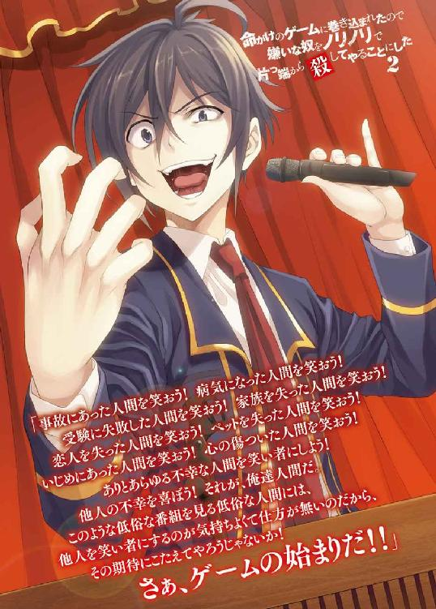
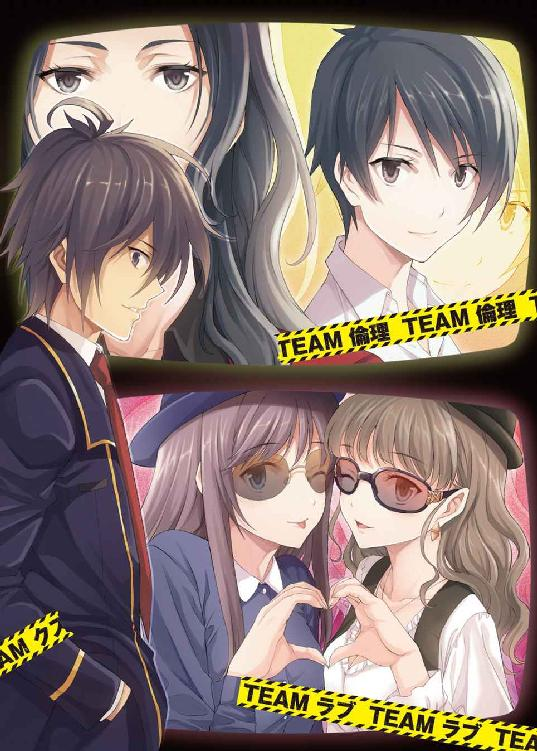
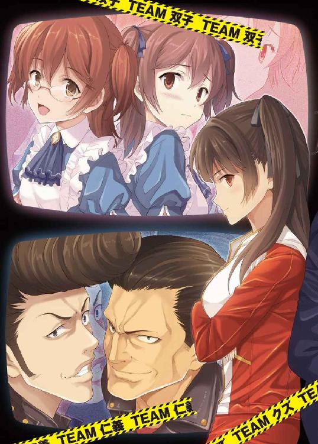
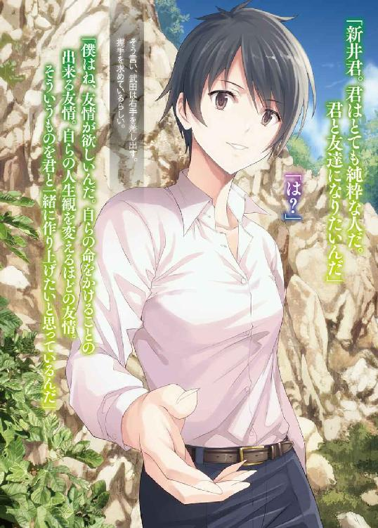
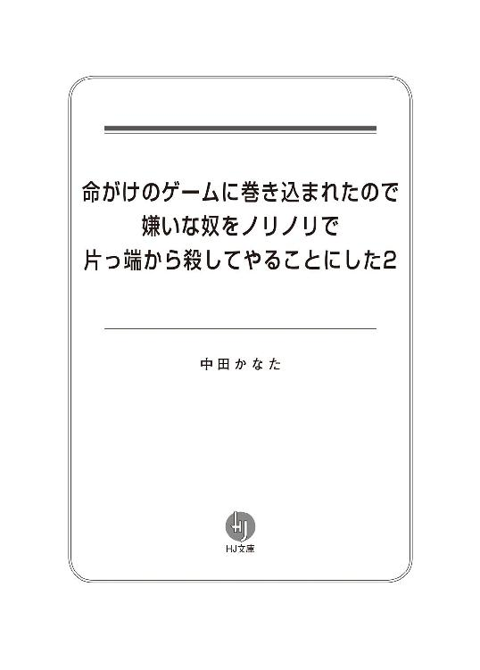
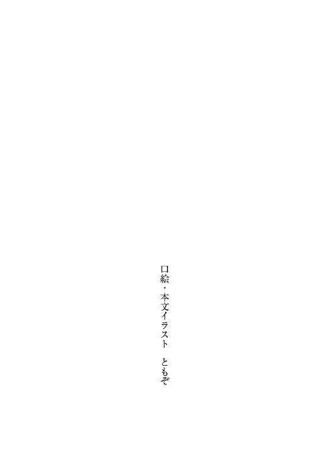
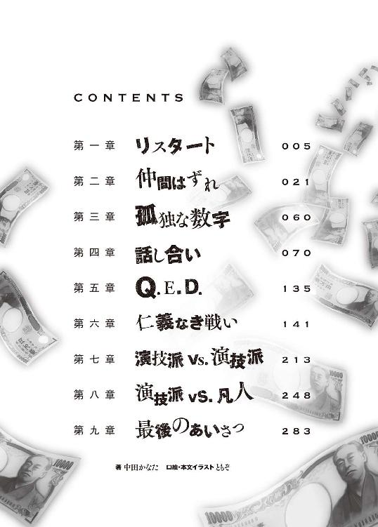
第一章 リスタート
０
自分が幸福であるだけでは十分でない。
他人が不幸であらねばならない。
１
さて、その後の話をしよう。
その後というのは勿論、電脳ランドで全人類を抹殺するという痛い発言をしてしまった後のことだ。絶望的な事件がおきたところで人生は終わらない。一巻の終わりだと思って自棄になったところで、俺の人生は打ち切りになることなく、望まぬ続編へと続いている。
というわけで、学校生活編の始まり始まり。
と言ってみたところで、俺の高校生活には特筆すべき点はない。
できる限り目立たぬように過ごし、平穏無事に過ごす。
それは、電脳ランドでの事件を経てからも変わらない。
誰も俺に話しかけないし、誰も俺と話さない。
それもそのはず。あんな事件があってからもふてぶてしく学校に通える人間なんて高が知れている。あのゲームでやらかした人間は、俺だけじゃない。多かれ少なかれ、奴らは自分が生き残るために他人を騙し、蹴落とし、陥れた。
現在、俺の通う高校の二年生で毎日登校できているのは、全体の一割程度。
毎日奇異の目で見られ、牽制しあい、神経をすり減らす。救いがあるとすれば、もうすぐ夏休みが始まって、お互いに顔を合わせずに過ごせるということくらいだろう。
そんないつ終わるとも知れない緊張した日々を過ごせるのは、選ばれし鈍感力の持ち主か象の皮膚よりも厚い面の皮を持った人間くらいのものだ。そして、電脳ランドで最も目立っていた俺に対して直接接触しようとする人間がいるのなら、そいつは間違いなく後者だ。象の皮どころか、鉄仮面を被っているレベル。その確信とともに、目の前に立つ女に質問をしてみることにした。
「お前はどっちなんだろうな、鉄山徹子。鈍感なのか、鉄仮面なのか」
目の前の女――鉄山徹子は、コイツ何を言っているんだ、といったような表情を一瞬浮かべたがすぐに合点がいったようで、誰にでも好かれそうな胡散臭い笑みを浮かべた。
「それは勿論、どちらでもないよ。この高校の生徒達は、自分の意思で電脳ランドのアトラクションに参加し、自分の考えで生き延びるための努力をした。彼らがこのような状況に陥った原因は全て彼ら自身が作ったものであって、私はそこには一切関与していない。つまり、清廉潔白な私は何も気にせず堂々と登校しているんだよ」
明らかに後者だった。
「それで、どの面下げて俺に会いに来たんだ？」
「君こそ、どの面下げて登校してきているの？」
「いつも通りの面だよ」
俺の環境はそれほど悪くなっていなかった。元々クラスの輪には入っていなかったし、今更他人の視線なんて気にしない。俺は日本中どころか、ネットを通して世界中から注目されてしまったのだ。今更、他人の視線など気にならない。
むしろ、身近な人間の不幸が多くなったことで、心地よくなったくらいだ。
不幸な人間に囲まれていることで、これほどまでに心が安らぐとは思わなかった。
「ところで、新井君。君は今後、どうやって生きていく気なのかな？ 君はこれからどこに行っても厄介者だよ。就職もできないだろうし、仮に就職できたとしても電脳ランドでの出来事は残り続ける。記録にも残るし、人々の記憶にも残る。だから、ここらへんで一山当ててみる気はないかな？」
「一山？」
「さぁ、新しいゲームの始まりだ。電脳ランドで最低最悪の醜態を晒した後は、絶海の孤島で最高の挑戦をしてみないか！」
「......断る」
「とりあえず、詳細の説明をするね」
「いや、俺は断ると――」
「まず、このゲームは二人一組で挑戦することになるんだよ。そして、何よりも重要なのが、このゲームで賭けるのはお金だっていうところなんだ」
「金だと」
競馬や競輪など、一部の例外はあるものの、賭博は基本的には違法だ。テレビ局が賭博を主催するというのも犯罪行為だし、その犯罪行為をテレビで放送できるとは思えない。
だが、その疑問も最初から想定されていたらしく、鉄山はその点を含めた解説を続けた。
「おや、食いついたね。賭博罪のこととかは気にしなくていいよ。そのゲームは賭博罪の無い国外で行われることになる。つまり、日本では違法である賭博も、海を越えて他の国に行けば合法になるから、そこでお金を賭けた本物の賭博をやろうぜ、という企画なんだ」
そう言って、鉄山は鞄から一枚の書類を取り出した。
「その名も『幻影島サバイバルゲーム』！」
鉄山が机の上に置いた書類にも、その名が書かれていた。どうやら、番組制作会社が作成した企画書らしく、そこには開催予定地などが事細かに書かれていた。まぁ、今はそんなことはどうでもいい。俺はもっと別のことが気になっていた。
幻影島サバイバルゲーム――この名には、少し気になるフレーズが含まれていた。
「この『幻影』っていうのは何だ？ まさか、また電脳ランド関係じゃないだろうな？」
「特に意味はないよ。スポンサーに電脳ランドが入る予定ではあるらしいけど」
スポンサーか。ここまで聞いた話では、例のアトラクションを使用させられるということは無いだろう。もう、あそこに関わるのは避けたいところだ。
あの後、俺は電脳ランドから賞金百万円と豪華賞品を受け取っていた。その豪華賞品というものが電脳ランドの三年間無料パスポートだったわけだが、俺はそれを受け取るなりマスコミの前で破り捨ててやった。
「まぁいい。それよりも詳細を教えてくれ」
「おや、聞く気になったみたいだね。各芸能事務所がスポンサーとして最低一千万円ずつ出し合い、その代表がそのお金を持ってゲームに参加することになる。勿論、現金は持ち歩いたりせずタブレットのデータで管理することになるけどね。詳しい話はまた後で番組の制作会社の人たちから説明してもらうことになるけど、面白そうだと思わない？」
「思わない」
「それじゃあ、参加を――って、思わないの？」
「いや、それ全然面白くないだろ」
「何で？ 海外で本当にお金を賭けて賭け事をするんだよ。この上なく楽しそうじゃない」
ああ、こいつは駄目だ。
そんなの、参加している芸能人は楽しいのかもしれないが、見ている側の人間としては退屈以外の何物でもないだろう。わざとらしい赤の他人の一喜一憂など、視聴者からしてみればどうでもいい。大金は動くかもしれないが、ただそれだけだ。人の人生までは動いたりしない。
人が望むのは、他人の絶望だ。
胸がすっとするような娯楽に満ちた絶望こそが、大衆の望みなのだ。
「とりあえず、今日番組の制作会社の人がこっちに来るから、話を聞いてくれないかな？」
「お断り――」
いや、ちょっと待て。
考えようによっては、これはチャンスなのではないか？
確かに、俺は電脳ランドで醜態を晒した。だが、ゲームには勝った。もしかしたら、鉄山の言うとおり本当に一山当てることができるんじゃないか？ それに、やりようによっては、また他人を不幸に陥れることができるのではないだろうか。
「とりあえず、話だけは聞こう」
「うん。それじゃあ、放課後に駅前の喫茶店に集合ね。一緒に歩きたくないから現地集合現地解散でお願いするね」
２
放課後、集合場所として指定された喫茶店に行くと、入り口で鉄山が待っていた。
鉄山に連れられて入った喫茶店では、スーツを着た中年男性が待ちうけていた。男は俺達に気づくと、立ち上がって一礼する。高校生相手にも丁寧な対応だ。
「初めまして。私はツキヨ制作株式会社の丸山というものです」
男はそう言うと、名刺を差し出した。
鉄山は礼儀正しく、それでいて愛嬌たっぷりに「頂戴します」と言いながら慣れた仕草でそれを受け取った。彼女の世界ではよくあることなのだろう。
俺はどうでもよかったから、片手で適当に受け取った。
「初めまして、鉄山徹子です」
「そちらが、新井和馬さんですね？」
俺は答えない。代わりに、鉄山があわてて俺のことを紹介する。
「はい。こちらが生き残った少年こと新井和馬君です」
「どうぞお座りください」
「はい、失礼します」
「お好きなものの注文をどうぞ。経費としてこちらで負担しますので」
「ありがとうございます。それでは、コーヒーをいただけますか？」
鉄山はメニューを見ることなく、さらっと答える。
俺はメニューを手に取り、とりあえず高いものを頼むべくページを捲った。だが、中々リーズナブルな店のようで、千円を超える料理がほとんどなく、精々セットにしてやっと千円を超えるといった程度のものだった。
何だか、俺の行動が読まれていたような気がして仕方がない。
「鉄山さんも、遠慮せずにお好きなものを頼んでくださっていいんですよ？」
「そうですか。では、デザートも一品いただいてしまいますね」
デザート！ そういうものもあるのか。
だが、もっとも値段の張るステーキセットとは合う気がしない。
丸山は店員を呼ぶと、俺達に注文を促した。鉄山はコーヒーとチーズケーキを注文した。俺はステーキセットのみを注文。デザートは止めておくことにした。
「では、早速ですが本題に入らせてもらいます。新井和馬さん、貴方には私達の制作する番組に出ていただきたいのです。ある程度の話は鉄山さんから聞いているとは思いますが、最初から説明させてもらいます」
丸山は鞄からコピー用紙をホチキス留めしただけの書類を取り出し、俺に渡した。
「番組の名前は『幻影島サバイバルゲーム』。ゲームの参加者には、事務所から持ち出しとなるお金を賭けてゲームを行っていただくことになります」
「事務所からの持ち出しということは、もし負けても損をするのは事務所ということになるんだよな？」
俺の口調に、丸山はほんの少しだけ眉をひそめた。高校生に偉そうな口を利かれたらこうなるのは当然だが、すぐに何事もなかったかのようにもとの表情に戻った。これも仕事ということだ。大人は大変だな。
「はい、その通りです。個人で一千万円を用意できる人はあまりいませんからね。行われるゲームの内容は、島へ向かう船の中で全て発表されます。島に到着したら、参加者達には島のあちこちに設置したゲーム会場でお金を賭けたゲームをしてもらうことになります」
「掛け金はどうやって決める？」
「こちらで決めさせていただきます。どのゲームの掛け金がいくらになるのかというのは最初から決まっていますが、それを変動させるアイテムも用意するつもりです。また、島の中央には山があり、その山の標高の高いほうに行けば行くほど、レートは高くなります。ここまでで、何か質問などはございますか？」
「......最終的な優勝とかはどうやって決めるんだ？」
「ゲームは十二時間かけて行われる予定です。ですので、開始から十二時間たったときに最も多くの金額を持っている参加者が優勝となります。優勝賞金は一千万円になりますから、優勝するつもりであれば、なるべく山頂付近を目指したほうがいいと思いますよ」
「分かった。それじゃあ、二人一組というのはどういうことだ？ 二人で一千万を共有するのか、それともそれぞれが一千万ずつ持っているのか？」
「後者になりますね。このゲームは二人一組で参加していただくことになりますが、ゲームで得られる金額に差が出ることもあります。もっとも、詳細はこれからつめていかなければなりませんし、二人とも同じ事務所の人であればどちらでも変わらないと思いますが」
「成程。よく分かった」
「そうですか。それでですね、新井さんには是非この番組に参加していただきたいのです。今や貴方は世界的な有名人となってしまいました。貴方がゲームをする姿を世界は求めているといってもいいでしょう！」
熱弁する丸山の目には、悪意が宿っているように思えた。
俺に求められている役割は、人に嘲笑されるピエロだ。その程度のことは俺も承知しているし、その上で丸山は俺に参加を求めている。表面上の礼儀正しさとは裏腹に、この男は俺を道具としか見ていない。
「鉄山はどうなんだ？」
「鉄山さんに関しては、事務所を通して既に参加の了承をいただいております。新井さんが参加される場合も、暫定的に鉄山さんが所属する事務所を通した参加ということになる予定です。このゲームには、芸能人以外の方もたくさん参加される予定ですので、他の方も同じような待遇になります」
成程。事務所から金を持ち出すのだから、参加者はどこかの芸能事務所に所属している必要があるということか。だが、これでは駄目だ。これでは、俺の目的が達成されない。
というわけで、俺の答えは――。
「お断りだ」
「......理由を伺えますか？」
「この番組は面白くも何ともないからだ」
「何ですって」
「もう一度言おう。この番組は面白くも何ともない。アンタ、電脳ランドでの出来事、何故あれだけ盛り上がったと思う？」
「それは、人間の醜い本性がむき出しになったからでしょう？」
「あれを本性と呼ぶかどうかは別として、概ねその通りだ。大衆は人間の醜い部分を見て、蔑み、晒されているのが自分でないという安心感から平気で他人を非難しようとする。他人を非難したくてたまらない人間がこの世には溢れている。自分には何の取り柄もないくせに、上から他人を見下したくてたまらない人間が、この世には腐るほどいる。そういう人間に対して最も有効なエサは、極限状態に置かれて取り乱した人間だ。お前達もそう考えたから、態々俺のところに来たんだろう？」
丸山は返事をしない代わりに、否定もしなかった。
今俺が言ったのは、ここにいる三人の間では共通認識であるし、話の前提でもあるのだ。
「だが、この企画書は何だ？ 端的に言ってしまえば、芸能人を集めたただのギャンブル大会じゃないか。費用はすべて事務所持ち。こんなものでは、芸能人が適当に騒ぎながら仲良く賭け事をするだけだ。表面的には対立したところで、実害がほとんどないことからくる緩んだ空気は避けられない」
「では、どうするべきだというのですか？」
「勿論、すべて本人の自腹でやらせるんだよ。どれだけの負債を負おうとも、払うのはすべて自分だ。事務所に肩代わりもさせない。金は命よりも重いという金言からも言えるように、人は自分の金のためならいくらでも必死になる。必死に働いて働いて働いて働いて貯めた金をほんの一瞬のギャンブルで失うかもしれない。そんな極限状態に置くことで、お前達が望む映像を撮ることができる」
「しかし、それは実現が難しいのでは......」
「俺を参加させたいのなら、その条件を呑め。それさえクリアすれば、最高で最低な映像をお前達に提供してやる」
「......分かりました。実現に向けて努力しましょう。ですが、こちらとしてもギャンブルの結果、債務を払えなくなる者が出てくるというのは避けたいところです。だから、保証人という形で事務所をつけることだけは認めていただきたい」
「それは構わない。本人から取れなくなれば、事務所から取るしかない。元々の債務が本人に対して課せられたものであるのならば、問題はない」
「では、これで参加してもらえるということでよろしいですか？」
「ああ。この条件でなら参加させてもらおう」
「それと、その場合、ペアの相手は鉄山さんになりますが、それも構いませんか？」
「勿論、構わないさ」
俺はそう言うと、鉄山に向かって右手を差し出した。勿論、握手のためだ。
「鉄山さん。色々あったけど、協力して大金を手に入れようじゃないか」
「現金な人だね......」
鉄山は汚物でも触るかのように、ためらいながら俺と握手した。
こんなときでも表情は全く崩れていないのだから、大したものだ。
「それでは、交渉成立ということで。当日までに用意しておくものについては、そちらの書類に書いてありますので用意しておいてください。パスポートの取得などにかかったお金はこちらで負担しますので、領収証を取っておいてくださいね。あと、変更などがありましたら、事務所のほうに連絡させていただきます。おそらく事務所から鉄山さんを通して新井さんのほうには伝わることになると思いますので、ご了承ください」
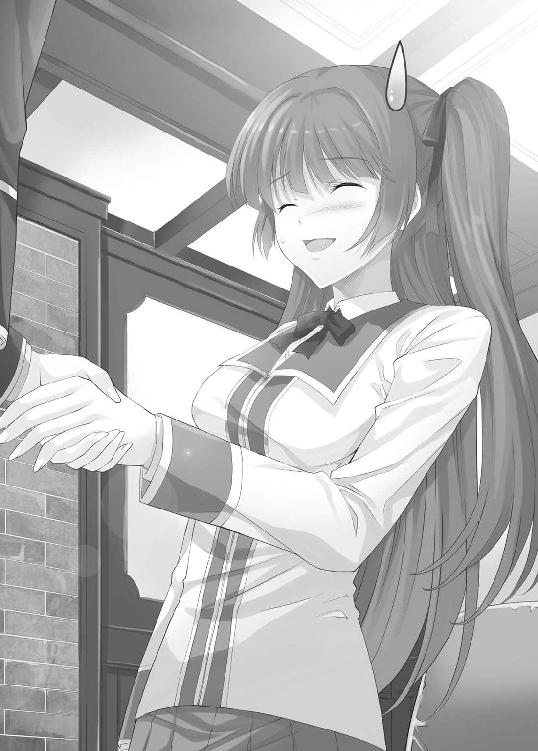
「分かった」
これでいい。
その辺の芸能人が相手なら、俺がゲームで負けることはまず無いだろう。ならば、幻影島サバイバルゲームは、俺にとって金を稼げるボーナスステージだ。もしかしたら、何人かの人生を破綻させることもできるかもしれない。
俺は内心ほくそ笑んでいた。
３
数分後、俺達のもとに注文した料理と請求書が届いた。
丸山は一言挨拶した後、精算をして喫茶店を去った。鉄山も、ケーキとコーヒーをすぐに片付けて席を離れた。後には、大勢の客の中、四人がけのテーブル席で一人で大盛ステーキセットを黙々と食べる俺の姿だけが残された。
第二章 仲間はずれ
１
夏休み後半となり、俺達はとうとうゲーム当日を迎えた。
喫茶店でのやりとりから今日までの間の出来事については全て省略する。何故なら、特筆すべき出来事が一切無かったからだ。友達と一緒に遊びまわっている人間からしてみれば、信じられないであろうというほどに何も無かった。
起床・テレビゲーム・昼食・テレビゲーム・夕食・テレビゲーム・就寝。この流れが毎日続いていた。エンドレスにループしているのではないかと錯覚してしまうほどに変化の無い毎日だった。
さて、話を元に戻そう。
俺は自宅から空港までタクシーで向かった。勿論、費用はツキヨ制作会社が負担することになるので、領収証をもらうのは忘れない。空港に着くと、用意された飛行機のチケットで日本を離れ、遠い異国の地へと向かった。勿論、一人で。俺と一緒に行きたがる奴なんているわけがないからな。
到着したのは、とある東南アジアの国だった。空港に降り立った俺達は、すぐさま移動のため車に乗せられ、幻影島行きの船へと向かった。特にこれといった観光名所などは一切存在せず、時々人を見かけるだけの道を車で三時間移動し、着いたのは大きな船が接岸されている港だった。
そこには、沢山の日本人がいた。外国で日本人を見ると、何だか損した気分になるのは何故だろう。彼らは、おそらく参加者なんだろうが、芸能人や著名人という割りに見覚えがない奴ばかりだった。もっとも、それは俺がテレビをあまり見ていないからなのかもしれない。
それにしても、悪い意味で個性的な奴らばかりだ。他の芸能人との差別化を図っているのか、どう考えてもおかしい見た目や服装の奴が数多くいる。
俺が車から降りると、その様子をとらえるべく、テレビカメラが待ち受けていた。
俺は悪い意味で人気者らしく、俺が動くとカメラもそれについて来て俺に焦点を合わせ続けた。この場において、その辺の芸能人はただの障害物だ。彼らのプライドは大いに傷ついたことだろう。ざまーみろ。
２
しばらくすると、船の前にマイクの音が響いた。
『あ～、テストテスト。はい。それでは皆様ご静聴願います。これより『幻影島サバイバルゲームが始まります。参加者の皆さんは、船の前にお集まりください』
船の前には、番組の制作会社のスタッフらしき人間が整列している。
作業着を着た人間が大半だが、今マイクで話している女性だけはスーツ姿だ。そして、その隣には、体格のいい和服の男が威風堂々といった佇まいで立っていた。
『では、まずツキヨ制作会社の代表取締役より、皆様へのご挨拶をさせていただきます』
紹介と共に、和服の男が船の前に用意された壇上に立つ。
『私は、ツキヨ制作会社の社長、鴉川だ』
そう言って、鴉川は威嚇するように参加者達を見回した。
そして、ゆっくりとした口調で言葉を続ける。
『これから諸君には、ここから船で三時間かかる孤島へと向かってもらう。その孤島において、諸君はかつて経験したことがないほどの大規模なギャンブルに挑むことになる。ある者は富を得るだろう。また、ある者は失うことになるだろう。だから、ゲームが始まる前に敢えて言おう。大げさな言い方になるが、これは諸君の人生を賭けた戦いである！ 参加費用として用意された金額。その額一千万！ 失えば、当然諸君らの借金となる！ 場合によっては、芸能生命を終わらせることになる可能性もある！』
ここで鴉川は言葉を切った。
参加者たちの反応をじっくりと観察し、少しすると失望の交じった声で続けた。
『健闘を祈る、などという無責任なことを言うつもりはない。生きるも死ぬも自分次第。この芸能生命――ひいては己の人生を賭けた殺し合い。知力も体力も絞りつくし、もがき、苦しみながら、味方を援護し、敵の足を引っ張り、死力を尽くして欲しい！ それでは幻影島サバイバルゲームの始まりだ！』
男は言い終わると、壇上から下りていった。
その言葉の意味を分かっている人間は、ほとんどいないようだった。
多くは笑いながら「立派な演説だった」だの「がんばるぞ～」だの、普通のバラエティー番組のようなゆるい空気の中にいた。これから大金を賭けたギャンブルに挑む者達とはどうしても思えないほどだ。平和を愛する民族性が、危機感まで奪い去ってしまったのだろうか。きっと彼らは、金を失うまで気づかないだろう。今自分が背負っているものは何なのか。それがどれほど大事なものなのか。
『それでは、選手に所信演説をしていただきます。選手代表、新井和馬さん。壇上へお願いします』
女性がそう言うと、注目が俺に集まる。いや、聞いてないんだけど。
だが、いいだろう。ここで立派な演説をしてやる必要はない。
俺は言われたとおり、壇上に立つ。
そして一言目――。
『笑うな』
俺の一言に、笑い声が上がる。
だが、これは冗談で言っているわけではない。不幸で卑屈な人間は、他人の楽しそうな顔が何よりも気に入らないのだ。
『こんなところで笑うだなんて、不謹慎だとは思わないのか、お前達は』
ざわめきが一気に止む。
この『不謹慎』という言葉が、普通の人間に対しては面白いようによく効くのだ。
『お前達は葬式の会場で笑うのか？ 災害の現場で笑うのか？ 今、お前達の目の前にいるのは、不幸のどん底にいる人間だ。誰からも嫌われ蔑まれる、最悪の人生を送っている人間だ。そんな人間を前に、お前達は何故笑っているんだ？ こんな俺の前で、何故笑っていられるんだ？』
俺は続ける。
『答えを教えてやろう。それは、お前達が不幸な人間に対し、これっぽっちも慈悲の心を持っていないからだ。神妙な態度を取るのは、他人の不幸に思いを寄せたからではなく、そういう態度を取っていないと他人に叩かれるからだ。だから、不幸な人間を笑うことが許される雰囲気の中では、お前達は簡単に不幸な人間を笑い者にする』
更に続ける。
『だが、それでいい！ それで構わない！ それこそが正しい生き方だ！ 事故にあった人間を笑おう！ 病気になった人間を笑おう！ 受験に失敗した人間を笑おう！ 家族を失った人間を笑おう！ 恋人を失った人間を笑おう！ ペットを失った人間を笑おう！ いじめにあった人間を笑おう！ 心の傷ついた人間を笑おう！ ありとあらゆる不幸な人間を笑い者にしよう！ 他人の不幸を喜ぼう！ それが、俺達人間だ。このような低俗な番組を見る低俗な人間には、他人を笑い者にするのが気持ちよくて仕方が無いのだから、その期待にこたえてやろうじゃないか！ さぁ、ゲームの始まりだ!!』
俺がマイクから一歩後退すると、司会の女性があわてて口を挟んできた。
『あ、ありがとうございました。では、新井さん。壇上から下りてください』
そんなにあわてなくても、これ以上ここで言う気はない。
俺は言われたとおり、壇上から下りる。
参加者の間には、きまずい微妙な雰囲気が流れていた。
そんな雰囲気を少しでも何とかしたいのか、司会の女性が不自然なくらいに明るい声で参加者達に呼びかけを始めた。
『それでは、これからゲーム会場となる幻影島へと向かいます。皆様、目の前のフェリーにご搭乗ください。船内では、係員が誘導いたしますので、それぞれの個室へとお入りください。また、大会ルールなどについても船内で説明させていただきます』
俺はフェリーに乗り、割り当てられた部屋へと向かった。
部屋には既に鉄山がいた。会うのは一ヶ月ぶりくらいだ。
ハーフパンツにレギンス、薄手のジャケット。いかにも、これから山に登りますといった感じの服装だ。所謂山ガールとでも言うのだろうか。鉄山は俺を見るなり、おかしなものでも見たかのような顔をした。
「久しぶりだね、新井君。ところで、早速だけど一つだけ聞いてもいいかな？」
「何だ、いきなり」
「何で君は学校の制服を着ているの？」
「何故って、これが一番いい服だからだ」
「いや、そうじゃなくて。これから、島に行ってそこを歩き回るんだよ。それなのに制服に運動靴って、何を考えているの？ ＴＰＯって言葉を知らないの？」
「お前は何の略なのか知っているのか？」
「知らないけど」
ちなみに、ＴＰＯとはTime、Place、Occasionの頭文字のことだ。ようするに、時と場所と場合に合った行動をしろという意味になる。
「革靴じゃないんだし、別にいいだろ。そんなことを言ったら、すっごいミニスカのやつだっていたぞ」
「そんなのいるわけないでしょう？」
いや、いることはいたんだが、それ以上は言うまい。
俺は改めて部屋を観察する。ベッドが二つ、冷蔵庫やトイレもついており、冷暖房も完備。快適に過ごすことができる環境だった。
だが、この部屋には、明らかに何らかの意図がある。
部屋の壁近くにはカメラとモニターが設置されていて、それぞれのベッドの上にはタブレット端末が一つずつ置かれている。おそらく、このフェリーの中で、島で行われるゲームのルール説明を行い、それを聞いている参加者の姿を撮影するつもりなのだろう。
そう考えながら部屋を眺めていると、ドアの鍵が閉まる音がした。
鉄山がドアを開けようとしてみたが、内側からは開かなくなっているようだった。部屋には鉄山と二人だけ。鉄山にしてみれば絶望的な状況だろう。
「......開かないね」
「開かないな」
ただルールを聞かせるためなら、ドアの鍵を閉めておく必要はない。
では、何故このドアの鍵は閉められ、外部との接触ができない状況にしたのか。
そんなこと、考えるまでもない。
「ゲームが始まる」
俺はタブレットを手に取り、モニターに注目する。
そのまま数分が経過すると、モニターの画面が切り替わり、真っ白な背景に『Ｌ』という黒文字が現れた。明らかに加工したと思われる声がモニターから発せられる。
『初めまして、ゲーム参加者の皆さん。私の名前は「ライト」。これから行われる最初のゲームのディーラーをさせていただきます。どうか、よろしくお願いいたします。さて、皆さんはこれから幻影島という場所に行き、そこでゲームをしていただくことになります。しかし、ゲームの参加人数が多くなりすぎてしまいました。そこで、これからゲームに参加できるメンバーを選出するための予選を行いたいと思います』
「予選......」
『予選でやっていただくゲームの名前は「仲間はずれ」です。これは最初のゲーム。しかも予選ですから、ルール自体は簡単なものです。ＡとＢ、どちらかを選んで、人数の多いほうを選択したペアが勝利チームとなる。簡単でしょう？』
確かに、ここまでは簡単なゲームだ。
だが、大金がかかるものである以上、ルールはコレだけではあるまい。
『さて、それじゃあこのゲームの流れを説明いたします。まず、五つのペアを一組にまとめます。そして、各組のそれぞれのペアにⅠ・Ⅱ・Ⅲ・Ⅳ・Ⅴのいずれかの暫定的なペア名を与えます。これで準備は終了になります』
なんだか、電脳ランドで最初にやったゲームに似ている。
もっとも、アレは人数が少ないほうが勝ちとなるゲームだったが、これから行われる『仲間はずれ』は人数が多いほうが勝つというものだ。大雑把な雰囲気が似ていても、ゲームの本質は逆になっている。
『とりあえず、ゲームのルールはそれぞれのタブレットに入っていますので、それを見ながら説明をお聞き下さい』
俺がタブレットに触れると、色々な種類のゲームが表示された。
その中の一番上に『仲間はずれ』という名前のものがあったので、それにタッチする。すると、ゲームルールが現れた。
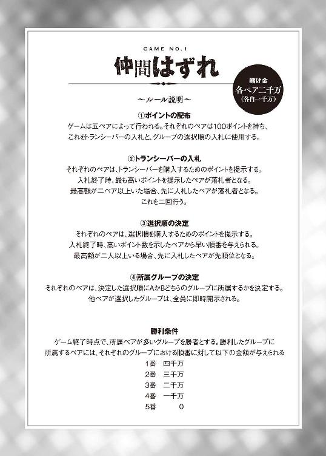
ルールを一読してから画面の端を見ると『Ⅳ』という表示がされていた。
これが俺達の暫定的なチーム名らしい。
『さて、ルールを見れば分かると思いますが、要するにＡかＢのどちらかを選び、人数が多いほうが勝ちとなるというものです。ＡがＢを選ぶ順番はポイントを使って購入することになり、その前にトランシーバーを購入することもできます。ただし、トランシーバーの数は限られていて、二つしかありません。簡単に言ってしまえばこんなところですね。それでは、ゲームを始める前に何か質問はありますか？ 質問がある人は、タブレットの質問ボタンをタッチしてください』
俺は質問ボタンをタッチした。
『はい、それでは、今質問ボタンを押してくれた方。名乗らずに質問を仰ってください。貴方の質問の内容は部屋のマイクを通して、他のペアにも伝わります』
「分かった。選択順の入札についてなんだが、仮にトランシーバーの購入で全ポイントを使い切ったペアはどうすればいい？ トランシーバーの購入と違って、ルール上こちらは参加しないという選択肢がないはずだ」
『基本的に、入札は一以上のポイントを使ってやっていただくものですが、ポイントがない場合は自動的に五番目ということになります。もし、ポイントがゼロのペアが二つ出てしまうようであれば、その二つのペアは四番目・五番目となり、どちらが四番目・五番目となるかは、こちらがランダムで決めさせていただきます』
「分かった」
『では、他に質問のある方はいらっしゃいませんか？ おっと、いらっしゃいました。それでは、質問をどうぞ』
『あの、勝利したペアに与えられるお金なんですけど、例えばＡが三人・Ｂが二人ってなった場合はどうなるんですか？』
他のペアが質問をしているようで、質問内容もモニターから聞こえてきた。
『Ａを１番に選んだペアに四千万。２番に三千万。３番に二千万。４番はいらっしゃらないため、残りの一千万についてはこちらで没収させていただきます。敗者への分配はありません』
『分かりました』
『では、他に質問のある方はいらっしゃいませんか？』
俺はもう一度質問ボタンをタッチする。
『いらっしゃいました。またこいつかよ。いえ、何でもありません。それでは質問をどうぞ』
「入札で得たトランシーバーはこのゲーム終了後どうするんだ？」
『お持ちになったままで結構です。つまり、島に持ち込むことができます。もっとも、勝ち残ることができたらの話ですが』
「ああ、そう。どうも」
『それでは、他に質問は――ございませんね？ ございませんね？ 本当にございませんね？』
Ｌがそう言うと、少しの間タブレットから異音が流れた。
『さて、それではここからは各グループに一人ずつ担当がつきます――。今、私の声が聞こえている人たちは、引き続き、この私『Ｌ』の司会でゲームを続けていただきます』
成程。ここからは、それぞれのグループによって、選択が変わってくるはずだ。ルール説明だけならともかく、ここからはそれぞれのグループに一人ずつ司会者をつける必要があるということなのだろう。
『それでは、始めさせていただきます。なお、このゲームはペアのどちらかのタブレットを入力端末として使用することになりますので、二人で同じタブレットをお使いください』
Ｌがそう言うと、俺の持っているタブレットの画面が変わり、『入札ポイント』という文字が現れた。ここに使用するポイントを入力して、入札に参加することになるらしい。
『では、最初にトランシーバーの入札です。トランシーバーを獲得したいペアは、タブレットに使用するポイント数を入力して送ってください』
タブレットには、使用するポイント数を入力する画面が現れた。
画面の上部には、残りの秒数が表示され、既にカウントダウンが始まっていた。
さて、唐突だがゲームスタートだ。
もっとも、俺にはこのゲームの最終局面が既に見えていた。このゲームは詰め将棋のようなものだ。生き残ることを目標とするならば、確実な手段がある。
「新井君、トランシーバーはどうする？」
「入札する」
そう言って、俺はポイント数を入力した。
「ああ、やっぱり、ないよりもあったほうがいいよね。それじゃあ、ポイントはどれくらい使う？ ＡかＢを選ぶ順番を購入するのにも必要だから、ある程度残しておかないといけないんだよね？ だから、今新井君がポイントを沢山使用したような気がするんだけど、気のせいだよね？」
「いや、気のせいじゃない。もう入力した」
「......どれだけポイント使ったの？」
「百」
「百!? ワンハンドレッド!? 全部!?」
「そうだよ。ポイント全部を使ったんだ」
「ちょっと待って！ それはまずいでしょ！」
鉄山は興奮気味に詰め寄る。
だが、与えられたポイントを全て使い切るのは非常識だとしても、俺が何の考えもなしにこんなことをする人間でないことはよく分かっているはずだ。どうせ全部分かった上での演技なのだろう。
「ちゃんと考えはあるんだよね？ これで失敗したら、私達借金を背負うことになるんだからね？」
「分かっているよ」
「わざと負けて私に借金を背負わせようだなんて思ってないよね？」
「このゲームで負けたら俺だって損をするだろ。心配しなくても、このゲームで俺達は負けないよ」
「......嘘は言っていないようだね」
当然だ。
鉄山が嘘を見破れることは、俺も知っている。
それに、俺はこんなゲームで負けてやる気はない。もう一組のトランシーバーを手に入れるペアが相当なバカでない限り、俺達は生き残れる。
『それじゃあ、出揃ったみたいですね。結果を発表いたします。なんと、百ポイント全てを使って入札してくれたペアがあるようです。それでは、百ポイント全てを使ってくれたⅣのペアに対してトランシーバーをプレゼントです』
Ｌがそう言うと、ドアが開いてスーツを着た男がトランシーバーを持ってきた。
俺がそれを受け取ると、男は部屋から出て、またドアに鍵をかけた。
『さて、二回目のトランシーバーの入札に入りましょう。Ⅳのペア以外の人はタブレットの準備をしてください。それでは、入札スタートです』
Ｌがそう言ってから一分後。
今度はⅢのペアが九十ポイントを使ってトランシーバーを落札した。
さて、それじゃあ、早速通信してみるか。ポチッとな。
「こちら新井・鉄山ペア。番号はⅣだ。そちらはⅢのペアで合っているか？」
『こちらⅢのペア。参加者はサトウ・スズキです。もしかして、新井さんって新井和馬さんですか？ 例のあの？』
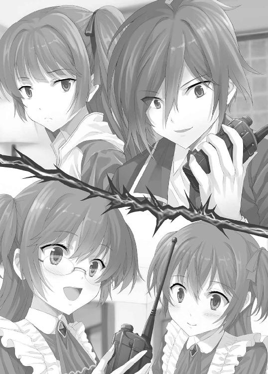
「......ああ、そうだ」
「有名人だねぇ」
鉄山が囁く。
『うわ、すっごい。それじゃあ、やっぱりこのゲームに勝算はあるんですよね？』
「勿論だ。というより、俺達はもう勝っている」
『全然意味がわかりません！』
「別にそれでいい。お前達は俺の指示通りに選べばいい」
『何だかよく分からないけど、分かりました！』
トランシーバーの向こうから、はしゃいでいる声が聞こえた。
声の調子からすると、俺よりも若い――というよりは、幼い印象を受ける。
「どうしてこの二人は新井君が裏切るとは思わないのかな？ 電脳ランドでのことを考えれば、むしろ裏切らないほうが不自然なくらいなのに」
「いや、今回は裏切らないぞ。そもそも、勝つためにはこの二人の協力が必要だ。詳しい話はまた後でしてやるから、とりあえず大人しくしておいてくれ」
「はいはい、分かりましたよ」
鉄山はふてくされたように言って、頬をふくらませた。
思わず可愛らしいと思ってしまったが、これも計算しつくされた演技に違いない。
『それじゃあ、いよいよ順番の入札です。それぞれ、使うポイント数を入力してください。ただし、ポイントを全て使い切ってしまったペアは入力不要です。質問でもありましたが、自動的に五番目になります』
言われなくても分かっている。
俺はトランシーバーを手に取る。
「聞こえているか？」
『はい、聞こえていますよ～！ 新井和馬さん、入札は何ポイント使えばいいですか？』
「一ポイントだけでいい」
『本当に、それで大丈夫なんですか？』
「大丈夫だ。ただし、入力するのは時間ギリギリにしろ」
『分かりました。それじゃあ、信じますね』
トランシーバーの向こうの人間は、妙にあっさりと俺を信用した。何だ、この相手は。いくらなんでも物分かりがよすぎる。
「鉄山、このトランシーバーの相手、どう思う？」
「どうもこうも、佐藤と鈴木っていう名前と声から考えて、人気アイドルのサトウ＆スズキの二人でしょ？ 何枚もＣＤを出していて、その大半がオリコンで上位に食い込んでいる化物アイドルだよ。最近は役者まで始めたらしいけど、実力はまだ見たことがないから分からない。というか、新井君の家ってテレビないの？ すごい有名人だよ」
「リビングにあるけど、親に極力接触したくないから見ないんだよ。そんなことより、この二人にとって一千万はそれほど大金じゃないってことか？」
「大金は大金だろうけど、もっと大きなお金をあの二人は稼いでいると思うよ」
「マジか......」
「どうしたの？」
「まさか、一千万を娯楽に使えるような人間が参加しているとは思わなかったけど、今の時点ではどうしようもないな。この二人を絶望の底に陥れるのはかなり難しそうだ」
「最初にそれを考えるんだ......」
「当然だ」
人間は他人の不幸を当然のように望む生き物だ。
更に言えば、この『幻影島サバイバルゲーム』は、金という手段で積極的に他人を不幸に陥れようとするゲームだ。他人の破滅を望むのは、むしろ正しい姿勢とも言える。
『それじゃあ、結果発表をします。それぞれのタブレットに表示させますので、確認してください』
一番目 Ⅱ
二番目 Ⅴ
三番目 Ⅰ
四番目 Ⅲ
五番目 Ⅳ
『それでは、選択に移りましょう。まず、Ⅱのペア。今から五分以内にＡかＢのどちらかを選んでください。もっとも、どちらを選んだところで変わりませんけどね』
Ｌがそう言ってから一分もしないうちに、ＡにⅡという文字が表示された。
そりゃあ、Ｌの言うとおり迷う必要なんて一切ないからな。
Ａ Ⅱ
Ｂ
『次はⅤのペアです。ＡかＢのどちらかを選んでください』
次のペアは、中々選ばなかった。
実際、俺の予想通りにことが進めば、Ⅴのペアはこの時点の選択によって、即座に敗北が決まる可能性があるのだ。慎重に考えた上で、選択をする必要がある。
Ａの２番を取るか。
Ｂの１番を取るか。
どちらがより安全な選択肢なのか――即死を避けるための選択肢を、Ⅴのペアは見抜けるだろうか。俺達はもう安全圏にいるようなものだから、Ⅴのチームがどちらを選ぼうがかまわない。
「Ｂを選んでくださ～い」
俺の隣では、鉄山がそんなことを言いながら祈っていた。だが、本心からではないのだろう。どうせ、敗北を恐れる演技をしているだけだ。
そうして、制限時間の五分が経とうとしたころ、Ａの側にⅤという文字が追加された。
Ⅴのペアにしてみれば、安全策をとったつもりなのだろう。だが、この選択は失敗だ。
Ａ Ⅱ・Ⅴ
Ｂ
『次はⅠのペアです』
Ⅰのペアも中々選ぼうとしない。
Ａを選べば、Ａを選んだ三ペアは予選通過決定だ。そして、俺と鉄山のペアは敗退が決定し、一千万の借金を背負うことになる。予選敗退を避けるというのが最重要だというのであれば、Ａを選ぶことになるだろう。
それに気づいたからなのか、先ほどから鉄山が妙にうるさい。
「やばいよやばいよ。多分、やばいよね？」
「鉄山さん、落ち着いてくれないかな？ 目障りだし耳障りだし癇に障るんだけど」
「何、その言い方!? いや、それよりもゲームだよ！ ねぇ、どうするの？ これってピンチじゃない？ このままⅠのペアがＡを選んだら、私達敗退だよ！」
「だから、大丈夫だって」
「大丈夫って、何が大丈夫なの？」
そもそも、問題なんて一つも存在しないのだ。
何故なら、Ⅰのペアはほぼ確実にＢを選ぶのだから。
「Ⅴのペアは選択を誤った。三番目のⅠのペアが相当のバカでない限り、俺達の勝ちだ」
「どういうこと？」
「見ていれば分かる」
俺がそう言うや否や、画面の表示に変化が現れる。
Ａ Ⅱ・Ⅴ
Ｂ Ⅰ
やはり、ⅠのペアはＢを選んだ。
「やった～！ あっぶなかった～！ あれ、でもどうしてⅠのペアはＢを選んだのかな？ やっぱり、もらえるお金が倍違うから？」
「それも大きな要因だが、一番大きな理由は俺達がトランシーバーを持っているからだ」
「トランシーバーを？」
「Ⅰのペアの立場で考えれば分かる。もしもⅠのペアがＡを選んだ場合、確実に勝てるが得られる金は二人で二千万。つまり、参加費を考えればプラマイゼロ。そこで、Ⅰのペアは考える。Ｂを選んで四千万を手に入れることはできないかと」
「ふむふむ」
「そして、結果から言ってしまえばできるんだよ。ⅠのペアがＢを選んで勝つためには、残りの二つのペアが両方ともＢを選ぶ必要がある。仮に四番目のペアがＢを選んだとしても、五番目のペアがＡを選んでしまえば負けてしまう。それを恐れて四番目のペアがＡを選べば、その時点でＢを選んだⅠのペアは敗退となる。そう考えると、Ｂを選ぶのはリスクが大きいように思える」
「でも、実際はＢを選んだよね？」
「ああ、そうだな。何故なら、Ｂを選ぶことにリスクなどほとんど存在しないからだ」
「どういうこと？」
「トランシーバーだよ。簡単に言えば――」
『それじゃあ、四番目。ⅢのペアはＡかＢかを選んでください』
俺が説明をしようとすると、Ｌの声が割り込んできた。
だが、これで説明する手間が省けた。
「あ～、こちら新井和馬。サトウとスズキに告ぐ。Ｂを選べ」
『了解で～す。これで、新井さんたちもＢを選んでくれるんですよね』
「勿論だ」
『それじゃあ、Ｂを選びます』
声とほぼ同時に、画面の表示が変わる。
Ａ Ⅱ・Ⅴ
Ｂ Ⅰ・Ⅲ
Ⅲのペア、サトウ＆スズキはＢを選んだ。
これで、俺はどちらを選んだとしても多数派。予選は確実に突破できる。
『それじゃあ、最後です。ⅣのペアはＡかＢのどちらかを選んでください。別にどっちでも予選は通過できますけれど』
Ｌは投げやりに言う。
「こういうわけだ」
「こういうって、どういうこと？」
「四番目のチームと五番目のチームはトランシーバーを持っている。つまり、連携が取れるということ。四番目のチームとしては、Ａの３番よりもＢの２番の方が利益が多い。五番目のチームとしては、Ａの３番でもＢの３番でも得られるポイントは同じだが、この後のゲームのことを考えると、トランシーバーで連携が取れるプレイヤーがいることの方が望ましい。トランシーバー組は利益のみで協力できるし、確実に協力してくると考えられる。三番目のⅠのペアはそこに気づいてＢを選んだんだ。ここでⅠがＢを選べば、ⅠのペアもⅢのペアもⅣのペアも利益を増やすことができる」
「でも、三番目のチームがそこに気づかなかった可能性だってあるんじゃない？」
「それはない」
「何でそんなことが言えるの？」
「ゲーム開始時にこの状況まで考えるのは難しいかもしれないが、一番目と二番目のペアが両方ともＡを選んだところまで状況が進めば、あとは自分がＢを選んだときの状況をシミュレートするだけでこの答えにたどり着くことができる。この程度なら小学生にだって可能だ」
「でも、そこまで考えない可能性だって――」
「なくはないだろうが、低いだろう」
「......何で？」
「理由は二つ。まず、最初に俺は百ポイント全てを使ってトランシーバーを落札した。コレを見た奴は、トランシーバーにはなにか重要な役割があるのではないかと考える。そして、トランシーバーによる連携というところまで必ず思いつく」
「成程」
「それともう一つ――」
むしろ、こちらのほうが本命だ。
トランシーバーによる連携は、考えれば分かることだが、そういうことを考えすらしない人間もたまにはいる。だが、そういう人間にも無理矢理考えさせるためのエサがある。それこそが命よりも重い例のアレ。そう――。
「金だ！」
「......ああ、はいはい」
「適当に流そうとするな。重要なところだ。このゲームには何千万もの金が絡んでいる。手を抜いて考えるなんてことはありえないだろ？」
「ああ、うん」
「金をなめるなよ」
「別になめてないよ。でも、なんていうか、お金に執着しすぎてみっともない感じがするんだよね。お金じゃ買えないものもあるでしょ？ あまりお金にこだわりすぎるのもよくないんじゃないかな？」
「金で買えないものがあるという事実は、金の価値を損なうものではないだろ。そんなことを言って金の価値を見誤るような人間は、ピカソの絵をただの下手な絵だとか言ってポイ捨てする餓鬼と同じだ。人々は金を稼ぐために体や頭を酷使して働く。その価値を否定する人間は、その努力を否定する人間だ」
「あ～、そうですね」
「というわけで、俺達はＢを選ぶ」
「あ、そうなの？」
ここにきて、初めて鉄山はリアクションらしいリアクションをする。
今までの説明、聞いていなかったのか？
「......ここまで説明して俺がＡを選ぶと思ったのか？」
「いや、新井君ならそういうことをやりそうだな、とは思ったよ。『この新井和馬が最も好きなことのひとつは、自分が正しいと思い込ませたことと逆のことをして相手を混乱させてやることだ』とか言ってやらかしそう」
うん、それは否定できない。
だけど、今回ばかりはサトウ＆スズキを裏切らない。
俺はタブレットを手に取り、Ｂを選択した。それと同時に、画面にⅣの文字が現れる。
Ａ Ⅱ・Ⅴ
Ｂ Ⅰ・Ⅲ・Ⅳ
『それでは、これで最初のゲームは終了です。ここまでで、チームⅡ・チームⅤは敗退となります。ドアの鍵はさっきの港に戻るまで開かないから、それまでずっと部屋で待機していてください。一千万を失ったことでギスギスしている空気の中、幻影島サバイバルゲームが終了して本島に戻るまで、十六時間ほど我慢してください。勝ちあがったチームには、それぞれ賞金を与えますので、タブレットをチェックしてください』
タブレットを確認すると、上部に新たな文字が現れていた。
新井和馬
所持金 一千万
「それと、この最初のゲームに勝利したチームには、それぞれチーム名が与えられます。それぞれ、タブレットに表示するから確認しておいてください』
そう言われ、俺は再びタブレットを見る。
五十を超えるチームそれぞれに名前が与えられているらしい。
そして、俺達のチームに与えられた名。それは――。
『チーム【クズ】』
「......鉄山徹子が悪い」
「......新井和馬が悪い」
というわけで、俺と鉄山との間ではお互いに『相手が悪い』という意思統一が為された。
息ぴったり。
『さて、各々チーム名は確認してくれましたか？ それじゃあ、後はリラックスタイムです。幻影島までの二時間、休むなりなんなりしていてください。生き残ったチームについては、ドアの鍵を開けておきますので、自由に行動していただいて構いません。ちなみに、タブレットには島で行われるゲームについての情報が入っているから、それを確認するのが私たち主催者側のおすすめです』
タブレットを見ると『残金』『ルール確認』という表示が左側に現れた。
『ルール確認』をタッチすると、島内で行われているゲームの種類とそれぞれの詳細が表示された。
とりあえず、総合的なルールをチェックしておく。
・総合的なルール
ゲームは三種類
【リミテッドゲーム】
掛け金の分配額の上限が決まっている。
ゲーム中、所持金がゼロ以下になるプレイヤーが現れた場合、そのプレイヤーの所属するチームは失格となる。
ゲーム中、所持金がマイナスにはならない。
【アンリミテッドゲーム】
掛け金の分配額の上限が決まっていない。
ゲーム中、所持金がゼロ以下になるプレイヤーが現れても、失格にはならない。
ゲーム中、所持金がマイナスになることがあり、マイナスのままゲームを終えたプレイヤーは、ゲーム終了と同時に失格となり、そのプレイヤーの所属するチームも失格となる。マイナス分は借金としてプレイヤーに課される。
【ボーナスゲーム】
島に数箇所設置されている。
設置箇所はタブレットに登録されている。
一回百万で挑戦できる。
各場所のゲームは一チーム一回だけ挑戦できる。
契約書について
各プレイヤーにはそれぞれ十枚の契約書を渡す。
その契約書に書かれた内容は、ゲーム管理者に提出した時点で、署名した者に対して拘束力を持つ。
ふむふむ成程。
ゲームの種類は三つ。大きく儲けたい場合は、アンリミテッドゲームとかいうものに参加するのがいいらしい。というわけで、俺はアンリミテッドゲームの内容をチェックすることにした。この中に、もし必勝法が存在するようなゲームがあれば、上手く敵を誘導して勝負を挑むことで、莫大な利益を得ることができるだろう。ボーナスゲームで得られるアイテムを組み合わせれば、その利益は更に増大するはずだ。
残り時間は二時間。
この時間をいかに有効に使うかが、勝負を分けることになるだろう。
３
船は時間通りに島へと到着した。それと同時に、船室に取り付けられたモニターに変化が起きた。そこには装飾された『Ａ』の文字が映っている。おそらく、さっきとは別の人間によって、この島で行われるゲームについての説明がされるのだろう。
『参加者の皆様、こんにちは。私はこの幻影島サバイバルゲームの総合司会を務める「アルファ」です。皆さん、船の中でゆっくり休めましたかぁ？』
休めるわけないだろ！
声には出さないが、俺は内心でツッコミを入れる。
船の中で始まったゲーム。それはまだいい。どちらにしろ大金をかけたゲームに挑むはずだったのだ。開始が船の中であったところで、俺には影響ない。だが、むせび泣く声や訳の分からない叫び、壁への八つ当たりなど、ありとあらゆる敗者どもの怨嗟が上下左右の部屋からサラウンドで聞こえてくるのは大変だった。
何せ、一千万を一瞬で失ってしまったのだ。
それも、事務所からの持ち出しではなく、参加者個人の債務としていたことから、今敗退した人たちの大半は、借金漬けになることだろう。ハイリスクハイリターンという言葉を甘く見ていたと言ってしまえばそれまでだが、それで諦められるほど人間は逆境に強くない。
もっとも、船で敗退した人はそれでよかったのかもしれない。
彼らは一千万の負債を負うことになったが、それ以上の負債は負っていない。ゲームの内容をチェックしてみたが、この島で行われるゲームには、一千万どころか下手をすればその何倍もの負債を負わされてしまうようなものもある。ここで敗退しておかなければ、彼らはもっと酷い負債を負うことになっていただろう。
『ちなみに、現在五十チーム中十五チームが敗退となり、残りは三十五チームです。激戦を生き抜いた猛者の皆様には、この幻影島でゲームを行っていただきます。ルールはとっても簡単。それぞれのプレイヤーにボールを渡しておくので、そのボールを対戦したい相手にぶつけてください。それでゲームが成立します。ボールは一人五個渡しておきますが、全てなくしてしまった場合は、その辺の係員に言っていただければ、予備のものをお渡しします。それでは、皆様には二分間隔で幻影島に上陸していただきます。チーム名を読み上げ、読み上げられたチームのところに係員がすぐに伺って部屋の鍵を開けますので、あとは係員の指示に従って上陸してください。それでは、皆様のご健闘をお祈りします！ まず最初のチームは、『チーム【成金】』です。ちなみに、この順番は船の中で獲得した金額が大きい順になっています。同額の場合は、使用したポイントが少ないほうが先となり、それでも同じなら五十音順です』
少しすると、男性二人組が島へと上陸するのが船室の窓から見えた。
彼らは船の前で立ち止まると、ボールを構えて船へ身を向けた。こうすれば、船から出てきたプレイヤーと確実にゲームを行うことができる。最初に呼ばれたということは、既に高額の利益を得たということだ。態々、山に入ってから苦労する必要はないし、船の近くであれば標高が低く、比較的リスクの低いゲームに参加することができる。
ただの仕事としてここに来ている人間としては、妥当な判断だろう。今後も芸能活動を長く続けていくつもりなら、ここで大きな勝負に出る必要は無い。
「それで、これからどうするの？」
俺が観察していると、鉄山が声をかけてきた。
「頂上を目指す」
「頂上？ そこに何かあるの？」
「アンリミテッドゲームがある。おそらく、このアンリミテッドゲームの中で最も大きな金額が動くのは、丁半賭博だ。標高が高い位置にあるゲームほど、動く金額が大きいというのなら、頂上に丁半賭博の会場があると思って間違いないだろう。そして、何より重要なのが、この島で行われる丁半賭博には必勝法があるということだ」
「必勝法？ 丁半賭博にあるの？」
「ある！ 頂上に向かう途中にそれは説明してやる」
「分かった。それじゃあ、呼ばれたらすぐに頂上に向かおう。ところで、私達って何番目に呼ばれるのかな？」
「......多分、三十番目だろうな」
第三章 孤独な数字
１
俺達が呼ばれたのは、予想通り三十番目だった。そりゃ、最初にポイントを全部使い切ったのだから当たり前だ。
船の周りには、未だに何人かの参加者が陣取っていて、船から出てくるプレイヤーを狙っている。
『それでは、所持金残額一千万の最後のプレイヤーだ。「チーム【クズ】」のお二人、幻影島に上陸してください』
そう言われ、俺達は船を出た。
待ち構えていた芸能人たちは、ボールを投げようと構えたが、俺の顔を見るとそのまま腕を下ろした。どうやら、目立ちたくても俺とはゲームをしたくないらしい。周りにいた奴らも、蜘蛛の子を散らしたように逃げていった。
「うわ～。いじめの現場を目撃しちゃったよ」
「鉄山、お前どれだけ嫌われているんだ？」
「いや、どう考えても新井君だよね。原因は新井君だよね」
「不毛な議論は止めておこう」
「いや、そういうどっちも悪いみたいな終わらせ方しないでくれないかな？ これだと、避けられた原因が私にもあるみたいじゃない」
「ないとでも思っているのか？ 電脳ランドの最初のゲームで、同級生同士に物理的な殺し合いを唆したのは誰だ？」
「昔のことは忘れたわ。新井君も、いつまでも昔のことを引きずらないで、明るく元気に過ごしたほうがいいよ」
「ああ、そうかい」
「そんなことより、これからどうするの？ まっすぐ進んで頂上を目指す？」
「いや、少し迂回してからにしよう。三十四組もいれば、俺に勝負を挑んででも目立とうとする奴もいるかもしれない。できるだけ余計なゲームはしたくない。それと、ボーナスゲームで得られる景品の中に、手に入れておきたいものがある。まずはそこを経由して頂上を目指すことにしよう」
「分かった」
「それと、お前にはサトウ＆スズキとトランシーバーで連絡を取り合って、二人を頂上まで誘導して欲しい。お前なら、小娘二人を騙して連れてくるくらいのことは簡単にできるだろ？」
「多分、できるけど」
「それじゃあ、トランシーバーは預ける」
２
海岸沿いに歩くこと十分。
俺達は『ボーナスゲーム』と書かれた粗末な建物を見つけた。
「これだ」
「これだね。それじゃあ、新井君。行ってきて」
「勿論、そのつもりだ」
ボーナスゲームには費用として百万がかかるが、ここで得られるアイテムは上手く使えば、それをはるかに超える利益を得ることができるはず。このアイテムは、俺の考えた作戦に必要となるから、是が非でも手に入れておかなければならない。そんな重要な場面を他人に任せられるわけが無い。
俺はドアに手をかける。
建物の中も外見どおり粗末なつくりで、中央に『タブレットをかざしてください』と書かれた機械が置かれている他は何もなかった。強いて言うなら、上下左右の壁面がすべて真っ白だということが唯一の特徴だろうか。
タブレットを置くと、今度はタブレットに『ボーナスゲーム』という表示が現れた。
ゲームをするためには、百万が必要です。
ゲームを行いますか？
はい いいえ
俺は迷わず『はい』を選択する。
すると、部屋の中が暗くなり、部屋中に映像が現れた。最初はかたつむり。その後に、ひまわり畑、パイナップルが続いた。そして、映像が終わると、今度はタブレットが音を鳴らした。その画面には、既に問題が出ていた。
2584 □ 6765
□に入る数字は何？
これだけの短い問題文。
ヒントといえば、先ほどの映像くらいのものか。
全く――簡単すぎる。
俺は答えを入力して『回答』ボタンをタッチした。
『正解です。
賞品として、レート十倍のアイテムカードを差し上げます』
俺のタブレットのアイテム欄に『レート十倍』というものが現れた。
これをゲーム中にタッチすると、効果が出るのだろう。
３
部屋から出た俺は、鉄山に結果と問題の内容だけ説明した。
俺の考えでは、鉄山は決して頭の悪い人間ではない。電脳ランドで俺の作戦についてくることができたのだから、要領はかなりいいほうだと思う。だから、それを確かめるべく、俺はあえて正解は教えなかった。
だが、結果としては期待はずれだった。
鉄山は十秒ほど悩むそぶりを見せたが、すぐに諦めたようだった。
「それで、答えは何だったの？」
「あれ、もしかして分かっていないのか？ あの鉄山徹子さんが。この俺をハメた鉄山徹子さんがこんな簡単な問題に答えることができないだなんて、意外だなぁ」
「いやいや、きっと視聴者の皆さんの中にも分からない人がいるだろうから、新井君の口から説明させることにしようと思っただけだよ。こんな簡単な問題が分からないわけないじゃない」
「だったら、お前が説明すればいいだろ。きっと視聴者の皆さんも俺なんかよりも、美人で気立てがよくて、この問題を一瞬で解いてしまうような聡明な鉄山さんの説明が聞きたいはずだと思うんだけどね」
「そんなことはないよ。捻くれ大魔王と呼ばれる新井君は、もはやお茶の間の人気者だよ。知名度だけなら私よりも上なんだから、新井君が説明するべきだよ」
「......不毛だな」
「......不毛だね」
そう、全て無駄なのだ。
今回、鉄山はこの問題の意図も答えも分からなかったようだが、それが演技だという可能性も排除できない。この鉄山徹子という女の行動は、全て演技であると疑い、一切参考にしないくらいで丁度いい。結局、カマをかけるという行動自体がこの女には通用しない。
「もういい、俺が説明する。要するに、これはフィナボッチ数列だったんだよ」
「ぼっち？」
「何でそこだけ抜き出したんだ？」
「いや、だって新井君だし」
余計なお世話だ。
「フィナボッチ数列っていうのは、簡単に言えば前の数と今の数を合計したものが次に来るというものだ」
「......よく分からないんだけど」
「いや、お前分かってるって言っていたよな」
「そんな昔のことは忘れたわ」
「まぁ、いい。要するに１、１、２、３、５、８、13......といった感じで続いていくものだ。１と１を足して２。１と２を足して３。２と３を足して５。３と５を足して８。５と８を足して13って感じだな」
「そんなの、前後の数字を出されてすぐに分かるわけないんじゃないの？ しかも、四桁だよ」
「そのためのヒント映像だ。映像として出てきたカタツムリやひまわりは、その形にフィナボッチ数が表れている。あの映像はフィナボッチ数を連想させるためのものだったんだよ。ちなみに、そこまで分かれば答えは簡単だ。Ａ＋Ｂ＝Ｃなら、Ｂを求めるためにはＣからＡを引けばいい。というわけで、真ん中に入るのは6765から2584を引いた4181となる。よって、答えは4181」
「ごめん。全然興味がわかない」
「......あ、そう」
新井和馬
所持金
九百万
収支
マイナス百万 ゲームの参加料
鉄山徹子
所持金
一千万
収支
０円
アイテムゲット
「レート十倍」
ポイントのやり取りのレートを十倍にする。
ポイントが常に変動するゲーム中に使うことができる。
例えば、
十回勝負で一回勝負がつくごとにポイントが動くものには使える。
十回勝負で全ての勝負が終わったときに初めてポイントが動くものには使えない。
第四章 話し合い
０
そこで考え出したのは道化でした。
それは、自分の、人間に対する最後の求愛でした。
１
ゲーム開始から二時間が経過したが、俺達は未だに他のプレイヤーとは接触していなかった。他のプレイヤーが俺を避けているのかもしれないが、そもそも頂上に向かうプレイヤーの数自体が少ないのかもしれない。彼らにしてみれば、ただの仕事としてここに来ているだけなのだから、ハイリスクな賭けに臨む必要はない。ましてや、東南アジアの雄大すぎる自然に体力を奪われながらも頂上まで歩くなんて面倒なことをする必要もないのだ。頂上に向かっているのは、鉄山がトランシーバーで誘導しているサトウ＆スズキくらいのものなのかもしれない。
そう考えていた俺は、完全に油断していた。
少し開けた場所に出た俺達は、荷物を下ろして休憩していた。
その隙を狙われ、俺は背後から忍び寄ってきた男にボールをぶつけられてしまった。
「新井君......」
「当たってしまったものは仕方が無い。さっさと勝って終わらせるぞ」
背後を振り返ると、二人のプレイヤーが立っていた。
真っ赤なビジネススーツに赤いネクタイ、超がつくほど短いミニスカート、真っ赤なハイヒールを身につけ、そいつは仁王立ちしていた。身長は百八十弱といったところだろう。スカートの下から見える長い足は、太くはないが引き締まった筋肉がバランスよくついていた。
その少し後ろには、もう一人のプレイヤーがいた。身長百七十程度で、真っ白なポロシャツを着た爽やかな青少年の鑑のような人間。髪は短めで、健康的な笑顔は周囲の空気までも爽やかにしてしまいそうだった。洗剤のＣＭとかに出てきそう。
この男女ペア、一体どういう関係なんだろうか。
「アンタ、新井和馬でしょう？」
ねっとりと粘つくような声で、赤スーツが言う。
俺に対する嫌悪感を少しも隠そうとはせず、その赤スーツは俺を睨みつけていた。
「......そうだけど」
「悪いけど、アタシ、アンタみたいなのが大嫌いなのよぉ。だから、テレビで目立つ前にここで息の根を止めさせてもらうわよぉ」
歩み寄る赤スーツ。一歩歩くたびに、土の地面に深い跡がつく。
近くに寄られると、よく分からない香水の強烈な匂いがプンプン漂ってきた。
「何だ、お前は？」
「アタシは真田正美。教育評論家をしているわ。そして、アタシとペアを組んでくれたのは、武田ツバサ君。この子は、全国人権作文コンクールで何度も入賞している超倫理的な模範的健全青少年。つまり、アンタとは対極にいるような子よ。そういうわけで、アタシ達『チーム【倫理】』がアンタたちのようなクズを粛清してやるわぁ！」
「多分、初対面だと思うんだけど、何か恨みを買うようなことをしたか？」
「アンタ、教育に悪いのよ！」
赤スーツ改め、真田正美は仁王立ちで言った。
「鉄山徹子。お前、教育に悪いって言われてるぞ」
「いや、どう考えても新井君でしょ」
お互いに罪を擦り付け合う。
「二人ともよ！ アンタ達みたいなのがテレビで目立ったから、子ども達が真似をしていじめをしたり、学級崩壊したりするのよぉ。存在自体が害悪なのぉ。実際、アンタ達のいる学校って登校拒否の生徒が多数出て、大変な状況になっているらしいじゃない」
「ああ、そういうこともあるかもしれないけど、俺は無関係だ。電脳ランドを紹介したのは鉄山だし、煽ったのも鉄山だ。今学校で起きていることの九割は鉄山が原因だ。以上より、全て鉄山が悪い！」
俺の言葉に、鉄山が反応する。
「確かに、多少の煽りがあったことは認めるよ。でも、煽りをもろに受けたあげく、卑屈な人間性の全てをさらけ出した新井君は全国的に悪い影響を現在進行形で与えているんだよ。小中学校では新井和馬ごっこが大流行して、今や人間不信ブームが巻き起こっているとかいないとか」
「どっちだよ」
「興味ないから知らない」
俺達が言い争っていると、健全青少年が俺達のほうに来て、右手を差し出した。
どうやら、握手を求めているらしい。
「初めまして、武田ツバサです。今日はよろしくお願いします」
「ええ、こちらこそよろしく」
鉄山は即座に態度を変え、一瞬のためらいもなく握手をした。
元々、コミュニケーション能力は極端に高い人間だ。内心どう思っていようと、目の前の人間に愛想を振りまくなどという誰でもしている『演技』は、鉄山の手にかかれば相手に強制的に好感を与えることができるようなレベルのものになる。
三秒ほどしっかり握手をしたあと、武田ツバサは俺に向けて手を差し出す。
「真田姉さんが失礼したね、新井和馬君」
「あ、どうも」
俺は釣られて手を出す。
すると、武田は両手でしっかりと俺の手を握り、大きな握手をした。
何だか、とても気持ち悪い――以前に経験したような感覚が俺を襲う。そう、電脳ランドの鉄山徹子と同じだ。演技臭さを感じさせない好意。だけど、あれは本気だからというわけではなく、ただ単に鉄山徹子が演技というものを知り尽くしていたからなのだ。内心の悪意をひた隠しにし、何食わぬ顔で近寄ってくる捕食者。そんな印象を俺に抱かせる。
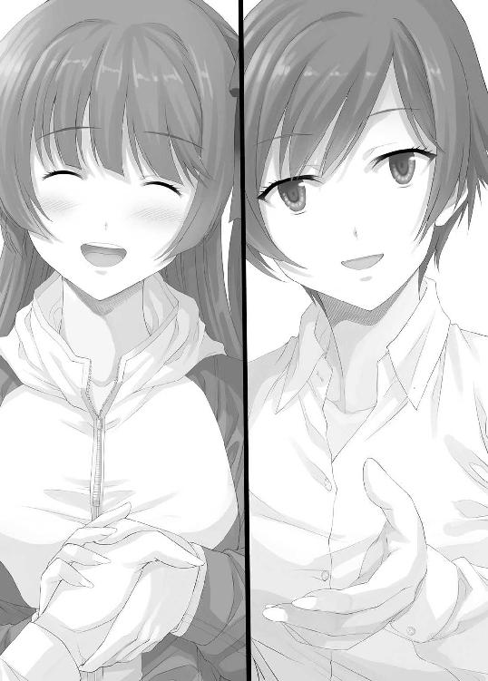
過敏すぎるのかもしれないが、電脳ランドでの一件以来、俺は他人の好意を嫌悪するようになっていた。元からそうだったと指摘されれば否定はできないが、とにかく、以前よりもその傾向が強くなったのは確かだ。
俺に対する好意には裏がある。
純粋に俺に向けられる好意なんてものは存在しない。
そうとしか思えないし、そう考えるのが正しいという確信がある。
「新井君とは一度話をしてみたかったんだ」
「ああ、そう。それはどうも」
「おや？ 信じてもらえないようだね」
「いや、ただの好奇心から俺に話しかけようとする人間は結構多い。正直、相手をしたくないからお前も黙っていろ」
「それでは仕方が無いね。でも、これだけは言わせてほしい。僕は君のことを嫌ってはいないよ。憎いとも思っていない。むしろ、友達になりたいと思っている。君となら、メロスとセリヌンティウスのような素晴らしい友達になれると思うんだ」
メロス？ セリヌンティウス？
ああ、太宰治の『走れメロス』のことか。友情至上主義を謳う小中学生御用達の小説ではあるんだが、俺に言わせれば、ただの歪んだ思想を持つ登場人物が歪んだ人間関係を築き上げるだけの物語だ。
「もしくは、ハンスとハイルナーでも構わないよ」
「それだと、お前ボロボロになって死ぬぞ」
「ああ、新井君がハイルナー役なんだね。僕としては逆をイメージしていたのだけれど。それにしても、『車輪の下』まで既読だとは思わなかったよ。言ってみるものだね」
ちなみに、『車輪の下』というのは優秀だったハンス少年が挫折し、落ちぶれて、故郷に戻ったら馬鹿にされ、ようやく立ち直りそうになったら酒のせいで川に落ちて死んでしまうという暗いお話だ。抑圧された青春を過ごしている人間には是非読んで欲しい一冊と言っていい。死にたくなるから。
そう思っていると、タブレットから女性の声が聞こえてきた。
『あ～、あ～、マイクテスト。マイクテスト。聞こえていますか？ 聞こえていたら、タブレットの画面をタッチしてくださ～い』
言われて、画面に触れる。
すると、この付近の地図が表示された。
『全員聞こえているようですね。よかった、よかった。それでは、初めまして。私はディーラーの一人「Ｒ」です。よろしくお願いしますね～。それじゃあ、早速ですけど、タブレットに地図が出ましたね？ 赤く点滅している部分が、ゲーム会場となります。今から三十分以内にこの会場まで来てくださ～い。来られなかったペアは自動的に失格となります。なお、このゲームにはボールをぶつけたペアとぶつけられたペアの他に、一番近くにいたペアも参加することになります。近くにいたペアは、他の二組に比べると少し遠くにいるみたいだけれど、運が悪かったと思って、さっさと会場まで来てくださ～い』
俺達は指示通りの場所へ向かうことにした。
ただでさえ歩きにくい山道を、真田正美とかいう教育評論家はハイヒールで先に登って行った。どれだけ運動神経がよければあんな真似ができるのかは分からない。だが、最も重要な問題は、超がつくほどのミニスカからチラリと蛍光イエローの下着が覗くという暴力的な光景だった。
いや、別に見たくて見ているわけではない。それは多くの人に共感してもらえるはずだ。だが、『どなたもどうかお覗きください。決してご遠慮はありません』と主張せんばかりのミニスカは、低い位置にいる俺達からすると下着を隠すための役割を十分に果たせていないため、嫌でも視界に入ってしまうのだ。
「新井君......」
そんなことを考えながら歩いていると、鉄山が声を低くして俺に呼びかけた。その言葉はそれ以上続かなかったが、その目は何かとんでもない汚物を見るかのように俺を見ていた。
いや、だから見たくて見ているわけじゃないんだって。
これだけは誓って言える。いや、本当だからね。
２
ゲーム会場となったのは、俺がボールをぶつけられた位置から歩いて五分程度の場所にある、粗末な小屋だった。小屋の形は立方体。その周囲には三つの更に小さな小屋があり、中央の小屋とケーブルで繋がれていた。
パンチラ？ 何それ、覚えてない。
俺はここで行われるゲーム内容をタブレットで確認する。
ゲームの名前は『話し合いゲーム』。
細かいルールはあるようだが、基本的にはただの話し合い。そして、このゲームの最も重要な点は、制限時間内に決着がつかなければ、掛け金を主催者が没収するという点だ。これは明らかに、主催者側が開催費用を回収するために作ったゲームだ。
ボールをぶつけてきたチーム【倫理】を見ると、やはり奴らもルールを確認して困惑しているようだった。話し合い――これは、倫理を重んじる人間にとっては得意分野であるはずだ。他人の意見を尊重しつつも、自らの意見を存分に伝えることで相乗効果を得るという倫理的かつ健全な行動と言える。
だが、この場においては話し合いは無駄だ。
何故なら、この場には俺がいるからだ。どうかかわってもマイナスにしかならない人間、それが俺だ。話し合いをしようものなら横道にそれ、意見をぶつけようものなら、斜め下の方向へと誘導される。そういう、迷惑極まりない存在がここにいるということを、彼らはよく分かっている。
ならば、このゲーム、俺が主導権をとることも可能だろう。
そう考えながらルールを確認していると、最後のペアが到着した。二十代半ばと思しき、その女性二人組は、走ってきたのか、ゲーム会場の前に息を切らしながら座り込んだ。二人とも髪を茶色に染めた、渋谷にでも出没しそうな今時の若者といった風貌だ。船の窓から見た覚えがないから、おそらく俺達よりも後に出発したペアなのだろう。
全員が揃うと、中央の立方体の中から司会者の制服を着た女性が出てきた。
「これで人数が揃ったね。それじゃあ、今回のゲームをやってもらうメンバーを紹介するよ！ とりあえず、この建物の中に入って、中央のモニターに注目してくれるかな？」
俺達は建物の中に入る。
そこは、電脳ランドで見たことがあるような、白に囲まれた空間だった。
中央には円テーブルが置かれていて、テーブルの中央部分にはモニターが設置されている。
そのモニターには、参加するペアの名前が表示されていた。
新井・鉄山 チーム【クズ】
真田・武田 チーム【倫理】
愛山・愛場 チーム【ラブ】
やっぱり、俺のチームだけ異質だよな、これ。
何で俺だけ悪口っぽくなっているんだ？ まぁ【倫理】や【ラブ】よりはマシだと言えないこともないけど。
「それじゃあ、ゲームの内容を発表するよ！ タブレットで既に確認してもらっているとは思うけど、今回皆にやってもらうゲームは......。コレだぁー！」
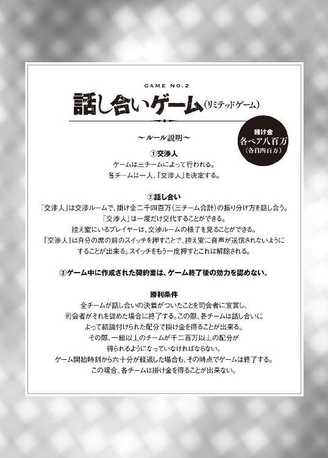
「見ての通り、話し合いのゲームだよ。途中で一回だけペアの相手と交代することができるから、有効にその権利を使ってね。それと、時間内に結論が出なかったら掛け金は全部没収だから気をつけてね～。それじゃあ、準備を始めようか！ 全員それぞれに与えられた個室に向かってくれ。外にある三つの小屋のことだよ。そこに行ったら、まず、最初に交渉ルームへ入る人を決めてくれるかな？ 決まったら、その人はタブレットに表示されている『交渉』ボタンを押してくれよ！」
Ｒは無駄に元気よく言った。
俺達は中央の立方体を出ると、さっきまでいなかったはずの係員の指示に従って、それぞれの小屋に移動した。小屋の中にはスピーカーとモニターがあり、モニターの前には赤い大きなボタンがあった。どうやら、この小屋の中でゲーム会場を観察しつつ、時機が来たら赤いボタンを押して交代することになるらしい。
「それで、どうする？」
「とりあえず、お前が先に行ってくれ。俺は一人で作戦を考える」
「作戦って、ただ話し合いをするだけのゲームに作戦なんてあるの？」
「あるだろ、色々と」
「例えば？」
「まず考えられるのが、『俺は千二百万をもらうから、残りの千二百万をチーム【倫理】とチーム【ラブ】でどう分配するか考えろ』とか最初に宣言してしまうことだな」
「そうすると、どうなるの？」
「チキンレースが始まる。妥協してチーム【倫理】とチーム【ラブ】がそれぞれ六百万ずつ得るか、さもなくばこのまま三組とも沈むか」
「計算上は妥協するのが正しいんだろうけど、そう簡単にはいかないよね」
「そうだな。得をするのがチーム【クズ】である必要がないことくらい、誰でも分かる。だから、これは提案するだけ時間の無駄だし、他のチームから悪印象を持たれるというマイナス要素だってちゃんとある。もっとも、俺達のチームについては始まる前から悪印象は持たれているだろうけどな」
「じゃあ、どうするの？」
「このゲームで最も厄介なのは、一組以上のプレイヤーが千二百万以上を取得していなければならない、という点だ。つまり、どこかは損をしなければならず、どこかは得をしなくてはならない。しかも、ゲーム内で作った契約書はゲーム終了と同時に効力を失う。だから、ゲームが終わってから契約書に基づいた金額調整を行うこともできない。となれば、騙すほかないだろう」
「そんなことができるの？」
「できなくもないけど、少し複雑になるから準備する時間が必要だ。お前が交渉人として出ている間にその辺は済ませておくから、適当に話をしながら時間を潰しておいてくれ」
「うん、分かった」
「あ、それとトランシーバーは置いていけよ。多分、外との連絡手段を持ち込んで交渉したりはできないだろうからな」
「ああ、うん」
鉄山はトランシーバーを置いて出ていった。
数秒後、モニターには交渉ルームに入っていく鉄山の姿が映った。
３
ゲーム開始三十秒前。交渉ルームには三人のプレイヤーが揃っていた。
一人目は、鉄山徹子。緊張感の欠片もない余裕の態度をとっているが、ノープランだ。
二人目はチーム【倫理】の教育評論家――真田正美。コイツは何を考えているのかが一切分からない。同席している二人がかわいそうになるほどの異質さを持っているが、思考パターンは鉄山との会話の中から少しずつ探っていくしかないだろう。
三人目はチーム【ラブ】の一人。名前は――覚えていないからラブ子一号と命名だ。見た目どおりの軽い頭だと楽なんだが、見かけだけで判断するのは危険だ。
それぞれが座る椅子の前には小さなマイクが置かれており、交渉のテーブルで行われた会話はこのマイクを通して控え室に伝えられることになる。
『開始十秒前です。交渉人の皆様は、席についてください』
三人は、自分のチーム名の書かれた椅子に座る。
ルール上、彼らは敵にも味方にもなり得る。だが、鉄山なら持ち前の演技力で、反感をもたれないような対応をこなすことができるだろう。後は、俺が作戦を考え、それを実行に移す算段がつくまで、適当に話を合わせておいてくれればいい。
『それでは、ゲームを開始します。交渉人は交渉を始めてください』
【残り時間 ０：59：59】
交渉は、ラブ子一号の一声によって始まった。
『最初に言っておくわ。私が要求する取り分は、千二百万よ。それ以下の条件に同意するつもりは無いから、よろしく』
最初からセリフを用意していたのか、ラブ子は躊躇うことなく、よどみなく宣言した。
あ～あ、やっちゃったよ、こいつ。
最初に鉄山に教えた通り、こんな作戦に意味はない。
それに気づいていないのか、ラブ子一号は続ける。
『いきなり無茶なことを言ったと思っているでしょう？ でも、違うのよ。もし貴方達が私の提案に同意しなかった場合、私達三人、いえ、ペアだから、私達六人はお金を全く得ることができない。でも、私の提案に同意した場合は、それぞれある程度のお金を手元に残すことができる。だから、貴方達は私の提案に乗るのがベストということになるわ』
『あの......』
『何かしら？』
『どう考えても、それは通らないんじゃないですか？ 私だって真田さんだって、自分のチームが損をするようなことは避けたいはずです』
鉄山の無難な反論に対し、ラブ子一号は悪戯っぽく笑みを浮かべる。
『でしょうね。だから私も言ってみただけなんだよ』
『でも、ちょっと考えてみて。貴女は、このゲームは最終的にどんな終わりを迎えることになると思う？』
『それは......分かりません』
『まず、半数以上を誰かが持っていなければならない。だから、一人だけ千二百万以上を持っているプレイヤーが現れる。そして、残りの二人はそれ以外の金額を分けることになる。問題は、千二百万以上の金を獲得するプレイヤーは誰にすべきなのかということ。勿論、ゲーム終了後に元々の金額である八百万を超える金を他の二つのペアに分け与えることのできるプレイヤーがいればそのプレイヤーに渡すべきなのでしょうけど、契約書がゲーム外で無効となることを考えれば、そんなプレイヤーは現れるわけが無い。そこまでは理解できる？』
『......はい』
『そちらの真田さんは？』
『理解はしたわぁ。でも、千二百万を得られるプレイヤーがアナタである必要はないでしょう？ それに、アナタ達は一つ勘違いをしているわ』
『勘違い？』
『私達なら、契約書がなくてもこのゲームで得た金はアナタ達に返してあげることができるのよぉ』
『......はい？』
『アタシ達はチーム【倫理】よ。このようなゲームで取った金はチーム【ラブ】にも【クズ】にも返してあげるわ。だから、アタシ達に千二百万を一度渡して――』
『断るわ』
ラブ子一号は即座に断った。
当然の回答だ。初対面の相手をそう簡単に信用できるわけがない。
『何ですって？』
『お・こ・と・わ・り、と言ったのよ』
『まぁ、失礼な小娘ね！ 一体何が気に入らないのよ？』
『最初のゲームだから少し緊張していたけれど、レベルの低い対戦相手で助かったわ』
『何ですってぇ!?』
『真田正美、アンタを信用できるわけないでしょう？ こんなゲームで相手の言うことを信用するなんて、思考停止のバカでもない限りするわけないわ！ 妄信と信頼の区別もつかないの？ 小学生レベルの国語からやり直せばぁ？ あ、口調がうつっちゃった』
これ、俺が言いたかったセリフなのに......。別にいいけど。
モニター内では、真田が顔を真っ赤にして憤慨していた。随分と分かりやすいリアクションだが、これには何か意図があるのだろうか？ いや、おそらくないだろう。このゲームにおいて、怒ったふりをすることに意味があるとは思えない。おそらくただの素だ。
成程。これは使えるかもしれない。
【残り時間 ０：45：04】
ゲーム開始から十五分が経過しても、何ら建設的な話し合いは行われなかった。
結局、このゲームは誰かに損を押し付けるものだ。
そんな役割を自ら志願する人間なんているわけがない。
ならばゲームを終わらせるために必要なものはたった一つ。
他人を騙し陥れるための策略だ！
この十五分をかけて、俺は二つの策を作り上げた。後はもう、実行に移すだけだ。
「というわけで、鉄山徹子を召還しよう。ポチッとな」
俺がスイッチを押すと、交渉ルームにアナウンスが響いた。
『鉄山さん。ペアの相手がお呼びです。控え室までお戻りください』
『......はーい』
鉄山は返事をするとそそくさと戻ってきた。
その表情には、隠しきれない疲れが出ていた。が、鉄山のことだからどうせ疲れた演技だ。彼女に限っては『隠しきれない』ということのほうがありえないだろう。
「やぁ、おかえり」
「ただいま。それで、何かいい作戦は思いついたの？」
「丁度準備が終わったから、呼び出したんだ。作戦の実行には敵の情報が必要だ。あの【ラブ】の二人組の情報を教えてくれ」
「あの二人は、歌手と役者だよ。失恋したり遠距離恋愛になったりを延々と繰り返す曲やドラマが何故か十代二十代三十代四十代五十代女子に大人気」
六十代以降には人気がないらしい。
いや、単にそれ以上を女子と呼ぶのには無理があるということなのかもしれない。それより前もかなり無理があるとは思うが。
「どんだけとっかえひっかえだよ。男運ないの？ 浮気性なの？」
「恋愛ソングなんてそんなものでしょ。もっと詳しいことも一応知ってはいるから、聞かれれば答えられるよ」
「いや、これで十分だ。あっちのチーム【倫理】はどうだ？」
「真田正美さんについては、ある程度知っているよ。教育評論家で、自身がいじめにあった経験を持つことから、いじめ問題に対して特に熱心に取り組んでいる人だね。何冊か著書もあるらしいけど、流石にその内容までチェックはしていないな」
「もう一人の武田とかいうやつはどうなんだ？」
「知らない」
「知らない？」
「うん。真田さんのお気に入りってとこなんだろうけど、詳しくは何一つ分からない。芸能人でもなければ著名人でもない。ただ、真田さんに連れてこられただけの人なんじゃないかと思うよ。そういう意味では、新井君と似たようなものだね。こんなところだけど、何か参考になった？」
「一応は」
「それはよかった。それで、どんな作戦なの？」
「今から芸能人にサインをもらいに行くんだよ」
「......はい？」
【残り時間 ０：43：21】
さて、ここで満を持して俺登場だ！
交渉ルームにいた二人は、俺の姿を見ると警戒心をむき出しにして身構えた。
電脳ランドでの俺の姿を見たことがある人間なら、当然の反応だ。
そんな予想通りの反応を気にすることなく、俺は椅子に座らずラブ子一号の前まで詰め寄った。ラブ子一号は、道端で強盗にでも出会ったかのように目を白黒させ、椅子に座ったまま体をのけぞらせた。
「あの、すいません。愛山さんですよね？」
「そうだけど」
「ファンです！ 握手してください！」
「え......!?」
ラブ子一号こと愛山は、俺の突然の行動に面食らったようで、差し出された俺の手を見つめていた。俺はラブ子一号の右手を強引に掴み取ると、ねっとりとした握手をした。
「お二人の歌の大ファンなんです。聞いていると、思わず切なくなってしまう素敵な曲ばかりですね！」
勿論、コイツの歌を聴いたことはない。
だが、ラブソングの感想なんて十把一絡げにこんなもので問題ないはずだ。
「それで、できればサインもいただきたいんですけど、どうですかね？ ちょっと今、手持ちのものがないから、契約書の裏側くらいしか紙がないんですけど、これにサインいただけませんか？ それと、一緒に来ている愛場さんにもサインをいただけないでしょうか？ 紙とペンを用意してありますから、是非お願いします！」
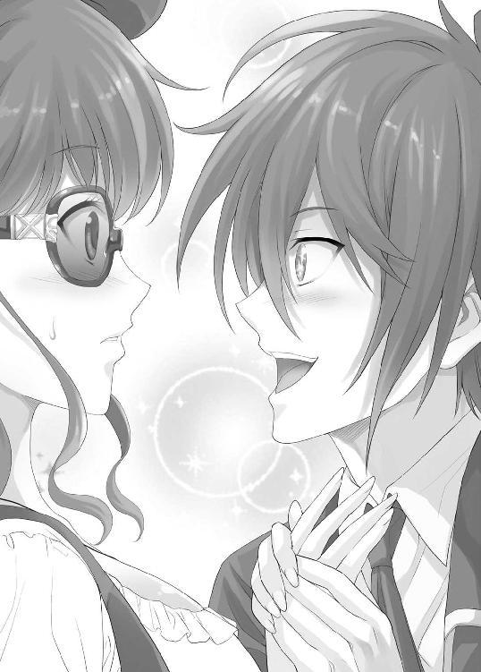
そう言って、俺は強引に契約書とペンを渡した。
すると、交渉ルームにアナウンスが響いた。
『愛山さん、ペアの相手がお呼びです。控え室までお戻りください』
『......はーい』
やはり気づいたか。
ここまでの俺の行動で注目すべき点は、俺の手からラブ子一号に書類が渡されたという点ただ一つのみ。サインだの歌の内容だの適当なことを言ってみたが、それらは全てただのブラフだ。ラブ子一号の相方、ラブ子二号はそれに気づき、ラブ子一号を呼び寄せてその書類の確認をしようとしている。
勿論、その書類には、俺が控え室で書き込んだ作戦内容が書いてある。ラブ子二号はその作戦を頭に入れた上で、俺に協力してくれるはずだ。誰だって、金は欲しいからな。
ラブ子一号は交渉ルームを出て、控え室へと向かった。
その姿を確認してから、俺はマイクの前のスイッチを押した。これで、交渉ルームでされている会話は控え室には届かなくなる。
ここからは、俺と真田の一対一の交渉だ。
チーム【ラブ】がいない間に、作戦を実行するための下地を作っておく必要がある。
「それじゃあ、邪魔者がいなくなったところで、話し合いをしようか」
「いいわよぉ。でも、今のアンタの行動に私が気づいていないとは、思っていないわよねぇ。あの女に、何を渡したのぉ？」
「ゲーム中に渡すものといえば、契約書くらいのものだろう？」
俺は控え室で用意した契約書をテーブルの上に置く。
「これは、後でチーム【ラブ】の人間にもサインしてもらう予定のものだから、隠す必要はない。むしろ、モニターを通してチーム【ラブ】に見ておいてもらいたいものだ」
契約書
１．甲、乙、丙はゲーム終了三十分前になった時に、投票を行う。一票につき八百万を分配される権利を得る。ただし、全員が同票となった場合はやり直しをする。
２．投票開始から十分以内に投票しなかった者の分は、司会者がコイントスをして決める。
３．投票結果が出てから五分以内に、甲、乙、丙は、投票結果の通りに二千四百万を分配することに同意する。
甲
乙
丙
「これは？」
「ゲーム終了の三十分前になったら金を賭けて自分以外の人間に投票しようっていう提案だ」
「投票？」
「何もしないままでは、全チームが八百万を失ってしまう。それは全員が避けたいはず。だから、俺達は一人一票を持ち、お互いに誰に投票するのかを決める。そして、投票されたプレイヤーは一票につき八百万を得られるようにする。これで、俺とお前がお互いに投票すれば、俺達のうちのどちらかが千六百万得られることになる。もう一方は八百万だ。チーム【ラブ】が協力的でない以上、俺達はチーム【ラブ】を騙してこのゲームを終わらせるのが最善だ。もしもチーム【ラブ】がかわいそうだとか言うのなら、お前が千六百万を取った時に利益分を分けてやればいい」
「......騙すのねぇ」
「当然だ。騙さなければ金は取れない」
「それをチーム【倫理】が認めるとでも？」
「それじゃあ、お前はどうするつもりだ？ 話し合いで本当に解決できると思っているのか？」
「それを目指すべきよぉ」
何を寝ぼけたことを言っているんだ、コイツは。
「お前、いじめ問題が専門らしいな？」
「ええ、そうよ」
「話し合いでいじめがなくなるとでも思っているのか？」
「それは......」
「それでいじめがなくなったことはあったのか？」
「それは、あったわぁ......」
「そんなわけないだろ！ 断言してやる！ 話し合いではいじめは決してなくならない。奴らは、いじめをなくすべきだという趣旨の授業を受け作文を提出したその直後にいじめを始めるぞ。お前の知っているケースは、より陰湿に教師の目の届かないところで行われるようになっただけだ！ お前だって、本気で解決したなんて思っていないんだろ！ 見て見ぬふりをしているだけなんだろ！ 答えろよ、教育評論家！」
勿論、こいつは『解決したと思っている』なんて答えることはできない。ここでそう答えようものなら、こいつは即座にでしゃばりなだけのド素人、現実から目を背けて綺麗ごとを言うだけの無能という烙印を押されることになるだろう。そうなっては、評論家としての立場は地に落ちてしまう。
「......そうね、思っていないわ。でも、どうすればいいのよ！」
「そんなのは決まっている。復讐だ」
「は？」
「その場ではできないかもしれない。でも、将来大人になってからならどうだ？ 就職した奴の職場に対して嫌がらせができるかもしれない。それも無理なら、いじめた人間が結婚した相手を狙ってもいいし、その子どもを狙ってもいい。それも駄目なら孫だ」
「そんなことが許されるわけがないでしょ？ それに、本人ならともかく、子どもを狙うなんて論外よ！」
「何故だ？ 相手は自分をいじめて学生生活を台無しにした奴だ。そうやって形成された人格によって子どもが攻撃されたということは、いじめられた人間を通して、いじめた人間がその子どもに危害を加えたということになる。法はそれを認めないだろうが、それがどうした？ 誇り高き負け犬の人生なんてクソ食らえ！ やったら、やり返される。それが世間の常識になれば、いじめをすることのリスクが高くなり、世のいじめは激減するだろう！ お前が真にいじめをなくしたいのであれば、なりふり構わず復讐をさせればいい！ どうやら、お前は有名人らしいから、お前がそう主張すれば一気に世の中の流れは変わるぞ」
「そんなことは......」
「お前、いじめられていたんだろ？ 復讐をしたいと思ったことはないのか？」
「......あるわぁ」
「当然だ。そして、それは自然な感情だ。いじめられた過去を全く気にしなくなることが勝利だと言う自称専門家もいる。復讐はよくないと言う人間もいる。そんなわけがないだろ！ ふざけるな！ 心理学者がなんと言おうと、教育評論家がなんと言おうと、その感情だけは本物だ！ 話し合いが何かを変えることもあるかもしれないが、それは背景あってのことだ！ 空虚な話し合いには、何の価値もない！ 話し合いによって自主的に皆仲良くなんてものはただの幻想だ！」
「......結局、アンタは何が言いたいの？」
「話し合いなんてものは、ただのゴミだということだ。本当に解決したかったり、何かを変えたかったりするのであれば、強引な手段が必要になる。倫理的に解決できないことなんて、世の中にありふれているんだよ！ 教育評論家が、そこから目を背けるな！」
真田は黙り込む。
いじめにあった人間の本音なんて、どれだけ取り繕おうとそんなものだ。忘れるだの乗り越えるだの言って気にしていないふりをしても、そこで待っているのは惨めな負け犬の人生だ。いじめられた経験を持つ真田だからこそ、それは誰よりもよく分かっているはずだ。
しばらくすると、真田は口を開いた。
「まったく、どういう家庭環境で育てばアンタみたいな人間が育つのよ？」
「それを聞いてどうするつもりだ？ 特にこれといった意味も大した興味もないけれど、ネタになりそうなら皆に言いふらして笑いものにするためか？ それとも、他人の不幸を掘り出して執筆や公演のネタにでもするつもりか？」
「......とりあえず、話だけは聞いてあげるわぁ」
「そうか」
「ええ。アンタの言った作戦ね。あれも、悪くはない考えだけどぉ、いくつか問題があるように思えるわねぇ」
「言ってみろ」
「まず、チーム【ラブ】がこの誘いに乗ってくるのかということ。今、音声を切ったことでチーム【ラブ】は強い不信感を持ったはずよぉ。アンタの提案に乗ってくれる可能性は低いんじゃないのぉ？」
「その辺は上手く話すさ。恋愛ソングばかり歌っている脳みそお花畑のスイーツ女子を騙すなんて、そう難しいことじゃない。最初にあんな無茶な要求をした時点で、あれは有能な人材とは言えないだろう」
「......分かったわ。では、次の問題点。もしも、アンタに二票集まったらどうするのぉ？ アンタは、チーム【ラブ】を救うの？ アンタのことだから、チーム【ラブ】は見捨てるんじゃないのぉ？」
「その通りだ。救わない。だが、俺に二票集まることはないだろう」
「どういうこと？」
「だって、俺、新井和馬だぞ。電脳ランドでやらかした張本人だ。そんな奴を信用して票を投じる人間がいるわけがないだろう。対して、お前はチーム【倫理】だ。どう考えてもチーム【ラブ】の奴らはお前達に投票するだろ」
「ああ、成程。確かに、その点については完全にクリアされているようねぇ。自分が不人気であることを利用するなんて、アンタ意外にやるじゃない」
真田は、満足げに言った。
「それじゃあ、問題点その２。というよりは、疑問点ね」
「疑問点？」
「何故、アタシ達と組もうと思ったのぉ？ アンタには、チーム【ラブ】と組むという選択肢もあったはずよぉ」
「お前なら、俺達チーム【クズ】と組んでくれると思ったからだ」
「どういうことぉ？」
「お前、俺のことが嫌いだと言ったな？」
「言ったわぁ」
「教育に悪いとも言ったな？」
「言ったわぁ」
「存在自体が害悪だとも言ったな？」
「言ったわぁ。でも、それが――」
「それらを全部ひっくるめたとしても、チャラチャラした若い女のほうが嫌いだろ？」
「その通りよぉ!! ああいう、化粧の濃い頭の軽そうな女を見ているだけでイライラしてくるわぁ！ あ、言っておくけど、十代の女が全部嫌いなわけじゃないからね。清楚で品行方正な子は、大好きよぉ！」
「ああ、そうかい」
そうだとは思っていたが、別にどうでもいい。
「それじゃあ、最後の問題点について聞くわよぉ」
「どうぞ」
「投票の契約が成立した後、アンタがアタシを裏切る可能性がないと言いきれる？」
真田は声を低くして問いかけた。
こいつが警戒していたのは、最初からこの一点だったのだろう。だが、この質問は最初から想定していたもの。向こうから言い出さなければ、俺から言おうとしていたものだ。
「言いきれる」
「何故？」
「これだよ」
俺は机の下から契約書を取り出す。
契約書
１．投票をする際、甲は乙に、乙は甲に対して票を入れる。
２．甲が二票を得た場合、甲は乙に対して八百万を支払う。
甲 新井和馬
乙
「信用できないなら、契約書で縛り付けておけばいい」
真田は契約書をチラリと見る。
「八百万？」
「これが俺の妥協点だ。これで、投票結果がどうなろうとお前は八百万の利益を得ることができる。その金をお前がチーム【ラブ】に返してやればいい。それこそがお前達、チーム【倫理】なんだろ？」
「新井和馬......。アンタはそれでいいのぉ？」
「俺はまた別の機会に稼がせてもらうよ。あれだけ言われていたのに、お前はチーム【ラブ】を嵌めることにまだ抵抗している。そういうやつが味方にいると、俺の考える作戦は悉く失敗することになるんだ。俺の作戦は、あくまでも卑怯で卑屈で最低のやり方だからな」
真田はその目に涙を浮かべている。それほどまでに、自分の考えを他人が尊重したということが嬉しいのだろう。
「お前はその八百万でチーム【ラブ】の顔でもはたいてやればいい。俺は信じていないけれど、お前は正しさとか倫理とかを信じているんだろう？ だったら、その信念を曲げることなく、お前はお前のやり方でチーム【ラブ】にぶつかっていくといい。俺はもう、根負けしたよ」
「新井......君」
真田は感極まったようで、両手で口を押さえながら俺に視線を向けた。その目からは、涙がこぼれ落ちそうだ。
「ゴメンね。アンタのことを誤解していたようだわぁ。アンタはとてもいい人よ。ただ、不器用だからそれを上手く表現できないだけだったのねぇ。新井君、ありがとう。本当に、ありがとう」
涙腺崩壊。真田は涙を流しながら、正面から両手で俺の方を掴んだ。
女々しい泣き方ではなく、豪快な漢泣きといった感じだ。
「ペアの相手の意見もあるだろうから、戻って検討してくれ。あと、今すぐ手を離せ。本当に、止めてくれ」
「......分かったわぁ」
真田は契約書をポケットにすばやく入れると、右手を挙げた。
すると、真田を呼び出す声が交渉ルームに流れた。真田は立ち上がり、交渉ルームを出ようとしたが、突然立ち止まった。引き返して、俺の耳元で奴は囁く。
「そう言えば、一つアンタが気にしているだろうことを教えてあげるわ」
「......何だ？」
「今日は金運をよくしたかったのよ」
「は？」
「何故赤いスーツで決めているのに、下着だけは黄色だったのかが気になって仕方が無いのでしょう？」
「とりあえず、お前は死んだほうがいい」
「またまたぁ、気になっているくせに」
そう言うと、真田はおもむろに自らのミニスカートに手をかけ、黄色い下着をチラリと俺に見せ付けた。
「な......」
動揺した俺の体は一時的に硬直してしまった。
真田はその隙を見逃さず、俺の横に回りこみ、俺の頬に己の唇を触れさせた。
「これで借りは返したわ」
「そんなわけ――」
俺が言う前に、真田は交渉ルームを出て行った。
あれが教育評論家って......、日本の教育は大丈夫なのか？
【残り時間 ０：35：36】
先に交渉ルームに入ってきたのは、チーム【倫理】の武田ツバサだった。
武田は、椅子をずらして俺のそばに座ると、こちらに笑顔を向けた。
パーソナルスペースという単語を知らないのだろうか？ 知らなくても、他人のそばに意味もなく近寄るのはあまり気分がよくないはずなのだが、もしかしたら、コイツは頭のそういう部分が壊れているのかもしれない。
「君はやっぱり、凄い人だ」
「......はい？」
何を言っているんだ、コイツは。
「まさか、あれほど嫌われていたのにもかかわらず、真田姉さんにキスをされるだなんて、やっぱり見る人が見れば君は素晴らしい人だということは分かってしまうんだね」
「お前、自分が何を言っているのか分かっているのか？」
「勿論だよ。自らの悪役という立場を存分に生かして、交渉をまとめようとするだなんて、僕には絶対できないよ」
「ああ、そうかい」
そりゃあ、お前は悪役とは程遠い、正義の味方サイドの人間だからな。
コイツにこの方法は絶対に無理だろうが、自分に集められた信用を存分に使って話をまとめるくらいのことはできるだろう。もっとも、俺のようなひねくれた異分子が存在しなければの話だけど。
程なくして、ラブ子二号が交渉ルームに入ってきた。既に一号との相談は終えているようだ。
「それじゃあ、三人揃ったことだし、改めて説明させてもらおうと思う。既にチーム【倫理】には話しているが、この後に分配額を決めるための投票をしようと思う。この投票の結果によって、俺達の分配金が決められる。一票につき八百万円だ」
「え？」
俺の説明に、ラブ子二号が引っかかる。
作戦上、このタイミングで疑問を持つ要素はないはずだが。
「どうかしたか？」
「いや、なんでもないわ」
「......まぁ、いい。契約書はこっちで作っておいたから、二人とも確認して欲しい」
俺はそう言って、先ほどの契約書を見せる。
ずっとテーブルの上に載せていたから、控え室からも内容は確認できているはずだ。
「僕は同意するよ」
武田が言う。
「このままお金を主催者に取られるのは僕も嫌だからね。だから、愛場さんにも同意して欲しいんだ。最悪の事態を避けるために、ここは一旦、纏まることにしようよ」
「あ、え、えっと......」
ラブ子二号が言葉を詰まらせる。
俺が提案した作戦通りなら、ここでラブ子二号も同意することになっている。武田が同意している以上、ここで迷う必要はないはずだ。
「改めて聞くが、三十分前になったら投票をするというので構わないか？」
「うん、僕は同意するよ」
「あ......私も、構わないわ」
二人が共に同意する。
「それじゃあ、チーム【倫理】、お前から書いてくれ」
「うん、分かったよ」
武田は、ためらうことなく署名した。
作戦に全面的に納得しているだけなのか、それとも何も考えていないのか――。いずれにしても、今後は関わりたくないタイプの人間だ。奴は俺に署名済みの契約書とペンを渡す。俺も署名をし、次のラブ子二号に契約書とペンを回した。
ラブ子二号は、その契約書に署名をすると、その契約書を司会者に渡した。
だが、ラブ子二号が渡したのはそれだけではない。彼女は事前に俺が渡しておいた別の契約書も一緒に司会に提出していた。その契約書の内容は次のようなものだ。
契約書
１．投票をする際、甲は乙に、乙は甲に対して票を入れる。
２．甲が二票を得た場合、甲は乙に対して四百万を支払う。
３．乙が二票を得た場合、乙は甲に対して四百万を支払う。
甲 新井和馬
乙 愛場愛
これが、俺が交渉ルームに来たときに、ラブ子一号に渡した契約書だ。『これさえあれば、必ずどちらかが二票得ることができる。三人で投票をするという契約書については、チーム【倫理】の人間に署名させるための算段をつけておく』という旨のメモも一緒に渡した。
要するに、俺はあの時点で、チーム【ラブ】にチーム【倫理】を裏切るように持ちかけていたのだ。そして、その契約書が提出された今、チーム【ラブ】のチーム【倫理】への裏切りが確定的なものとなった。
今頃、控え室では真田が顔を赤くして暴れまわっていることだろう。ざまーみろ。
この俺が、真田の言葉ごときで改心するわけがない！ これは、俺がチーム【倫理】に仕掛けた罠なのだ。だが、チーム【倫理】から金を奪うだけでは面白くない。俺は奴らに、いざというときには【倫理】なんて何の役にも立たないことを自ら証明させてやりたい。
今は、その作戦の第一段階だ。
ラブ子二号は説明を始める。
「武田ツバサさん」
「何かな？」
「私達は今、チーム【クズ】から渡された契約書を提出したわ。その内容は、私と新井和馬君がお互いに票を入れるというもの。アナタがその手に持っている契約書は、提出したところで私達の契約書と矛盾する以上、無効となるわ。矛盾する契約書は後から出されたほうが無効となるのよ」
「そうなの？」
「そうなの。新井君から私を裏切るための契約書を渡されて安心していたのだろうけれど、それは新井君が仕掛けた罠だったのよ。新井君は最初から、私を裏切るふりをして、チーム【倫理】を騙していた。だから、投票をすることを決めた契約書は【倫理】【クズ】【ラブ】の順番で署名され、最後に署名した私達チーム【ラブ】が投票の契約書を提出するのと同時に、投票時に私と新井君が協力するという内容の契約書も提出することができたのよ」
「本当に？」
「......本当よ」
「そうなんだ......」
武田は何か腑に落ちないのか、怪訝な顔をして考え込み始めた。
考えるのは勝手だが、時間を無駄にしてやる気はない。ここは、さっさと先に進めることにしよう。俺は使っていない契約書を三つに切り分け、それぞれに渡す。
「さぁ、それじゃあ、投票を始めよう。この紙に自分が金を与えたい相手を書いてくれ。とは言っても、俺とラブ子二号はお互いに投票することが決まっているけどな」
俺がそう言うと、ラブ子二号は即座にチーム【クズ】と書き入れた。
俺も、チーム【ラブ】と書き入れる。
これで、三人中二人が投票を終えたことになる。
さぁ、ここからが作戦の第二段階だ！
チーム【倫理】に選択を迫り、その上で奴に倫理を捨てさせてやる！
「武田ツバサ」
「何かな？」
「それと、ラブ子二号も」
「さっきから思っていたんだけど、それって私のこと？」
「お前達、勘違いしていないか？ まだ、このゲームでチーム【倫理】の負けが決まったわけじゃないぞ」
「......どういうこと？」
ラブ子二号が尋ねる。
「俺はチーム【ラブ】を裏切るふりをして、チーム【倫理】を騙していた――ふりをして、更にチーム【ラブ】も騙していたんだよ。この状況において、チーム【倫理】がチーム【ラブ】を見捨てることができれば、チーム【倫理】は確実に勝てる」
「よく分からないな。新井君、もう少し詳しく説明してくれないかな？」
武田が言う。その表情からは、何の戸惑いも動揺も感じ取れない。
「......いいだろう。まず、お前は投票でチーム【ラブ】に投票しろ。俺も契約書通りチーム【ラブ】に投票する。そうすることによって、チーム【ラブ】は失格になる」
「そんなわけないでしょ！ 私に二票来れば、一票について八百万なんだから、私達が千六百万もらえるはずでしょ！」
今度はラブ子二号が食いついてきた。
「だから、それをもらえるのは、ゲームが終了した後の話なんだよ。最初に金は参加料として取り上げられているから、お前が今もっているのは百万だけだろ」
「え......」
「お前達は、俺より後に船を出た人間だ。つまり、所持金が一人当たり五百万のペアということになる。そして、これが最初のゲームと言っていたことから、所持金に変化はないと推測できる」
図星だったようで、ラブ子二号は言葉を失っていた。
「そして、投票が終わったところで、即座にゲームが終了するわけじゃない。契約書の『乙が二票を得た場合、乙は甲に対して四百万を支払う』という規定に従って、俺がこの契約書によって二票を得たお前から金を奪えば、お前は一文無しになってリミテッドゲームであるこのゲームから敗退。後は残った俺と武田で、二千四百万を半分ずつ手に入れるというようにすればいい」
「あ......」
「百万しか持っていないお前が四百万を払えるはずがない。だから、お前は無意識に『四百万を払うのはゲーム終了後』だと思い込んだんだ。実際、ゲーム終了後は契約書の効力が失われるのにもかかわらず、お前はそこを見誤った」
「そんな......」
「もっとも、それを許すかどうかは武田、お前次第だ。倫理の名の下に、他人を陥れるようなことができないというのであれば、お前は自らが犠牲者となることで、ラブ子達を助けることができる。さぁ、己の信念と保身、お前はどちらを選ぶんだろうなぁ？ ここまでのピンチに陥っておきながら、お前はまだ上から目線で倫理だのなんだの言えるのか？」
さぁ、選ぶがいい、チーム【倫理】！
お前達が唱えるお題目が、どれほど役に立たないものなのかを、ここで証明してしまえ！
「俺はチーム【ラブ】に一票を入れたぞ！ 後は武田が決めろ！ 金か倫理か――」
「ああ、そんなこと？ それだったら、僕は迷わずチーム【ラブ】に票を入れるよ」
武田はそう言うと、契約書の裏側にチーム【ラブ】と書いた。この瞬間、チーム【ラブ】は二票獲得が決定した。そして、敗退も同時に決定した。
俺はタブレットを操作し、契約書どおりにラブ子二号から百万を奪い取る。本来なら四百万を奪えるはずだったのだが、これがリミテッドゲームでラブ子二号の所持金が百万しかないのだから仕方がない。
何にせよ、これで、ラブ子二号の所持金はゼロ円になり、チーム【ラブ】は敗退が決定した。
ラブ子二号はショックのあまり、椅子から転げ落ち、自分のタブレットを見ながら呆然としていた。『Ｒ』の指示により、外で待機していた係員がラブ子二号をかかえ、交渉ルームから連れ出す。
何にせよ、一応の目的は達成した。チーム【倫理】は【ラブ】を切り捨てた。
後は、武田と半分ずつ金を分け合うだけだ。
それだけなのだが......。
「......しかし、意外だな」
「何がだい？」
「超倫理的な模範的健全青少年とか言われているくらいだから、お前は俺に投票して、自分が犠牲になるんじゃないかと思っていたよ」
「ははは、そんなわけがないじゃないか。チーム【ラブ】は僕を裏切ったんだよ。君のおかげでそれは失敗に終わったけれど、そんな人を僕が助ける必要があるのかい？」
「それは、まぁ、その通りなんだが。お前みたいな倫理的な人間は『罪を憎んで人を憎まず』とか言うんじゃないのか？」
「新井君は面白いことを言うね。罪と人を分離できるわけがないじゃないか。人が犯した罪はその人の中に蓄積されるものだよ。罪を憎んだら自動的に人も憎むことになるに決まっている。どんなことでも許しを与えるというのが倫理的だというのなら、倫理的な社会というのは何をやっても許される犯罪者の天国ということになってしまうだろう？」
成程。それはそうだ。
詭弁ではあるが、筋が通っていないこともない。
「それに、人権作文コンクールで賞を取ったからって、それだけで真に倫理的な人間だと決め付けるのは愚かなことだとは思わないかい？ 作文はただの技術の問題だよ」
「ああ、まぁ、そうだな。でも、あの真田とかいう奴はお前のことを超倫理的な人間だって言っていたぞ」
「そうだね。でも、真田姉さんは僕をそういう存在に仕立て上げることで商売をやっている部分もあるから、あまり真に受ける必要はないよ。教育評論家なんていう肩書きだけど、真田姉さんが割りと――いや、かなりおかしい人だってことは君も分かったでしょ？ どうも露出癖があるみたいでね、ここに来る船の中では、あの人下着姿で過ごしていたんだよ。僕がいてもおかまいなし」
「それは一度逮捕されたほうがいいんじゃないか？」
「そうかもしれないね。それよりも、とりあえずゲームを終わらせない？ 新井君とはこの後じっくり話したいんだけど」
「とりあえずゲームを終わらせることについては同意しよう。お互い、千二百万円の分配でどうだ？」
「それが妥当なところだろうね。同意するよ」
「それじゃあ、司会者さん。これでゲーム終了だ」
「了解したよ。それでは、これにて『話し合いゲーム』終了！ チーム【倫理】とチーム【クズ】がそれぞれ千二百万ずつ獲得だ。ちなみに、新井君はゲーム中にちゃっかり百万をチーム【ラブ】から奪い取っている。だから、チーム【ラブ】の愛場さんは所持金がゼロになり、チーム【ラブ】の敗退がここで決定したね」
新井和馬
所持金
千二百万
収支
プラス二百万 ゲームでの分配金
プラス百万 愛場から奪った金
鉄山徹子
所持金
千二百万
収支
プラス二百万 ゲームでの分配金
４
ゲームが終了し、俺達は交渉ルームを出た。
外では大金を失ったチーム【ラブ】の二人がこれ見よがしに落ち込んでいた。実際のところ、かなりのショックを受けているのだろうが、俺には、その姿は大げさに演技をしている詐欺師のようにしか見えない。他人の行動は全て疑ってかかるべし。
俺はチーム【倫理】の人間と一緒にいたくなかったので、さっさと山頂を目指してこの場を立ち去ろうとした。だが、武田が呼び止める。
「新井君、君はこれからどうするつもりだい？」
「一応、山頂を目指す予定だけど、お前達はついてくるなよ」
「分かっているよ。ついて行く気はない。そもそも同じペアとゲームができるのは一回だけだから、ついて行っても仕方がないからね。でも、休憩がてら話をしないかい？ ゲーム前にも言ったけど、君とはじっくり話をしてみたかったんだ」
「断る」
「つれないな」
「ただ、一つだけ聞かせろ」
「何かな？」
「お前、ラブ子二号が裏切ったときに、不思議そうな顔をしていたよな。憤慨するわけでもなく、ただ戸惑っていた。あれはどういうことだ？」
「ラブ子二号って愛場さんのことだよね？ いや、自分で言うのもなんだけどね、僕って結構人気者なんだよ」
「それがどうした？」
「いつもなら、愛場さんが新井君を裏切る場面なんだよね、あそこって」
武田は当たり前のように言う。
「僕に敵対している人が、どれだけ根回しをしようと、どれだけ策をめぐらせようと、最後には皆、僕の味方をしたくなってしまうみたいなんだ。だから、愛場さんが僕を裏切るなんて思ってもみなかったよ。やっぱり、まだ出会ってから三十分程度しかたっていないから仕方がないのかもしれないね。それに、僕は愛場さんなんてどうでもよかったし」
「どうでも？」
「新井君、君はとても純粋な人だ」
「は？」
「君がクズと呼ばれるのは、他の人が見て見ぬふりをしている人間の醜い部分をさらけ出しているからだ。なあなあにして済ませることなく、しっかりと向き合った上で開き直っているんだ。だから、君は嫌われるんだよ。自分の中の見たくない部分を見せられているように思えて、人は君のことを嫌悪する。僕はそんな君と友達になりたいんだ」
そう言い、武田は右手を差し出す。握手を求めているらしい。
だが、これは、格下の人間に対する表情だ。
満たされた自分を確認するために他人を助ける人間の表情だ。
俺が握手に応じる気がないことを察すると、武田は軽いため息をついた。
「ところで、新井君。僕が『走れメロス』が好きだと言ったことは覚えてくれているかな？ あの中で一番好きなのは、ラストシーンなんだ。何故だと思う？」
「そりゃあ、友情を讃えるシーンだからなんじゃないのか？」
「裸の男が抱き合っているからだよ」
「......はい？」
「裸の男が抱き合っているからだよ」
「いや、二回言わなくてもいいから」
無理無理無理。何コレ、気持ち悪い。
俺が後ずさると、追い討ちをかけるように、今度は真田が言う。
「ちなみに、太宰のホモ疑惑は後に発掘された黒歴史ノートなどからまことしやかに囁かれているわぁ。裸で抱擁するメロスをじっと見つめた王様が『わしをも仲間に入れてくれまいか』と言った姿を見て『万歳、王様万歳』と叫ぶ少女は腐女子の卵だという説もなくはないのよぉ」
「いや、そんなのないだろ！」
「真田説よぉ！ 彼らの間の友情は、通常のものを超えた、親友と言ってもまだお釣りが来るほどのものだったのよぉ！」
「お前は余計なことを言うな！」
真田の解説に、思わず大声を上げる。
「余計なこととは何よ？ 教育評論家として、教養を与えただけじゃない。見ての通り、アタシも昔は文学少女だったのよぉ」
「何が見ての通りだよ!? そんなわけがないだろ！」
駄目だ、もうつっこみきれない。
俺が焦っていると、再び武田から話しかけられる。
「ま、僕がメロス好きな理由は余談だし、半分冗談のようなものだから横にでも置いておくことにしよう。新井君、当然ながら、僕自身はホモだというわけではない。それは分かってくれているだろう？」
「......ああ、そうだな」
「僕はね、あの友情を超えた友情が欲しいんだ。自らの命をかけることのできる友情。自らの人生観を変えるほどの友情。そういうものを君と一緒に作り上げたいと思っているんだ」
「俺はメロスでもセリヌンティウスでもないぞ」
「問題ないよ。実は僕はね、あの物語の中で一番、王様が好きなんだ。あの固く閉ざされた心を優しく解きほぐしてあげたい。それと同じように、僕は君の凍てついた心を溶かしてあげたいと思っているんだ」
「なっ......」
駄目だコイツ。もう、どうしようもない。
鉄山は、少し離れた場所で俺を見てニヤニヤしている。やはり、こいつも敵だった！
だが、周りが全員敵になったことで、俺は逆に冷静さを取り戻した。
相手が俺に好意を持っていようが悪意を持っていようが関係ない。
全てまとめて叩き潰して生ゴミと一緒にゴミ箱に捨ててやる！
「武田、お前は走れメロスが好きだと言ったな」
「そうだよ」
「だが、メロスとセリヌンティウスは王様を受け入れたのか？ 命を脅かされたにもかかわらず、その場の雰囲気に流されて仲間になりたがる王様を友として認めようとしたのか？ あの物語が美しかったのは、メロスとセリヌンティウスとの間に特別な友情があったからだ。だからこそ、ぽっと出の王様は決して彼らの仲間にはなれない。実際、あの小説に二人が王様を歓迎する描写はない。王様からの請願を無視して、メロスとセリヌンティウスはメロスが真っ裸だということについて話している。このことから考えられる結論は一つだけ。王様は受け入れてもらえなかったんだよ！」
「そんなことは......」
ないとは言い切れない。
何故なら、本文中にそんなことは書いていないのだから。
ならば、勝手な価値観で解釈を押し付けてしまえばいい。
「そもそも、本当の友達ならセリヌンティウスを人質として差し出した時点で、メロスのセリヌンティウスに対する友情には疑問が残る。本当にセリヌンティウスのことを大事にするのなら、人質になどさせずにさっさと処刑されてしまうほかなかったんだ！ そもそも、メロスという男はただの自分の友情が世界の中心だと思っているだけの思い込みの激しい馬鹿でしかない！ 王様の悪評を聞いたら刃物を持って暗殺しようとするし、山賊に襲われたときも何の証拠もないのに王様に雇われたと思い込んでいる。そんな苦境の中で頑張る自分が大好きなだけのナルシスト、それがメロスでありお前だ！ お前が好きなのは俺じゃない！ 俺のような人間も愛せる自分が好きなだけで、俺はただの演出のための道具でしかないんだよ！」
「そんなこと――」
「ないとは言わせない！ 言っておくが、俺はお前の悪趣味に付き合ってやる気はない。お前の大好きな『可哀想な人間』は、俺以外にも掃いて捨てるほどいるから、その中から適当に別の人間を見繕ってくれ。その歪んだ気持ち悪い性格に付き合ってくれる人間がいるかは分からないけどなぁ！」
武田は俺の言葉を聞きながら、その目に涙を浮かべていた。
その様子を見かねたのか、真田が俺の前に躍り出る。
「ちょっと、アンタ！」
「お前は口出しするな！ 話がややこしくなる！」
「いいえ、口出しするわぁ！ アンタの性格が悪いっていうのはよく分かったから、それくらいにして、謝りなさい！ こんな純粋な子に向かって、酷いじゃないのぉ！」
真田は鼻息を荒くしている。
その瞳には、軽蔑する人間に対する冷たい炎がともっている。
だが、そんなものでひるむ俺ではない。
そもそも、この真田にはどうしても言ってやらねばならないことがある！
そう――。
「酷いのは、お前の、その、頭のおかしい、服装、だぁ！」
「何ですって!?」
「お前、その赤いスーツが致命的に似合ってないんだよ！ そんなパッツンパッツンのミニスカ穿くなぁあああああ！」
俺がそう言うと、真田は言葉を詰まらせた。
だが、少しずつ、呟くように言葉を続ける。
「確かに、アタシは服装がおかしいとか、頭がおかしいとか、いわれのない陰口を叩かれてきたわ。だから、そういう卑怯な陰口がなくなるように教育評論家になったのよ！ でも、なくならなかった！ 減少すらしなかったわ！ 世の中にはいじめが数多く残っている！ アタシの意見なんて誰もまともに受け取ってくれない！ どうしてなの！ どうしてアタシだけがそんなことを言われなければならないの！ アタシが立場ある人間だから!? アタシが憎いから!? それとも――」
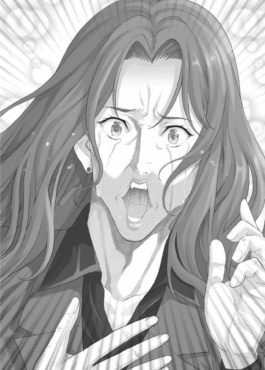
ここまで言って、真田はようやく核心へとたどり着く。
「アタシがオカマだからなの!?」
「その通りだよ馬鹿野郎っ！」
「体はオッサンでも、頭脳は乙女なのよぉぉぉ！」
真田正美、五十代男性の野太い慟哭がひびく、
「うるせぇ！ 野太い声で色っぽいセリフを言うな！ 気持ち悪いんだよ！ ヒゲくらいそってから女装しろ！ いや、やっぱり女装自体するな！ お前は、オカマですらない！ どう見ても五十代の変態のオッサンにしか見えねぇんだ！ 他人に真田姉さんだとか呼ばせるな！ 何なんだよそのミニスカは！ そんなすね毛だらけの足でミニスカートを穿くな！ お前のパンチラはただのトラウマ生産装置だ！ それなのにお前は『チラリ』とかふざけたことを言うし、見たくないのに見えちゃうし、最後には頬にキ......キ......キスなんぞをしやがって！ ゲームが終わるまで一応我慢しておいたが、もう我慢の限界だ！ 二度と俺の視界に入るな！ 以上！」
俺はそう言って、頂上の方向へ歩き出した。
これ以上、この異常者達に付き合ってはいられない。俺と鉄山は、チーム【倫理】の二人から十分な距離をとるまで振り返ることなく歩き続けた。もう対戦することもないのだから、敢えて俺達を追ってくることはないだろうが、念には念を入れておいたほうがいい。
そして、三十分ほど歩き、少し開けた場所に出た俺達は、そこでようやく休憩をとることにした。
「しかし、酷い目にあった......」
「あれ、新井君はよろこんでいたんじゃないのかな？」
「そんなわけないだろ」
「......うん。いくらなんでも、アレは酷かったね。冗談にもならないレベル。あのパンチラは精神攻撃だったんじゃないかって思えるよ」
実は俺もそう考えていた。
あれには世の変態どもも度肝を抜かれたことだろう。
あの凶暴な見た目のうえに、露出趣味としか思えないような過激な服装――そんな奴のパンチラを好き好んで見たいと思うような奴は、ほんの少しはいるのかもしれないが、少なくとも俺は知らない。
「ああ、確かにあれで精神を汚染されたような気もするが、俺が言っているのはもう一人のほうだ。武田ツバサ。なんていうか、得体の知れない不気味さがあった」
「確かに、私もあの人にはあまり関わりたくないよ」
「何でだ？」
「アレは新井君とは逆の方向性の異常者だよ。人に望まれない部分をノリノリで片っ端から殺してきた人間。人に言われたとおりに行動する、自分のない人間。地球の運命か恋人の命かと問われれば、迷わず地球を選ぶ人間。誰からも好かれることのできる技術を常に駆使する人間。女の子なのにボーイッシュな格好をしているのも、趣味とかじゃなくてノージェンダーとかを主張するためだったんだと思う。果ては新興宗教の教祖にでもなるんじゃないかと思うよ。わずかに残った演技っぽさがなかったら、私だってアレに好感を持ったかもしれない」
「そうか」
「それでも態度を変えない新井君は大したものだと思うよ、悪い意味で」
「そりゃあ、どうも」
折角褒めてもらったわけだが、別に嬉しくも何ともない。
何せ、あの武田とかいう女の気持ち悪さは、ここ数時間俺がずっと感じている不快感にとても似ていたのだ。全てが演技にしか見えない鉄山徹子という化け物への嫌悪感。それと同じ感情を、俺は武田に持った。
そんな気持ち悪い奴は、避けて通るのが一番なのだ。
第五章 Ｑ．Ｅ．Ｄ．
１
休憩を終えてから、俺達はまた頂上を目指して歩いていた。
そして、しばらく歩いたあたりで、二つ目のボーナスゲームの会場を見つけた。
「これ、行っておく？」
鉄山が尋ねる。
俺はタブレットを取り出し、景品について確認する。
ここで正解すると『絶対防御』というアイテムがもらえるらしい。効果は、他のプレイヤーからボールをぶつけられてもゲームに参加しなくてすむというものだ。この先、余計な時間を使いたくないなら必須ではないが、手に入れておきたい。
「とりあえず、参加してみよう。今度はお前の番だ」
「あれ、番とかってあるの？」
「当然だ。参加するのに百万かかるんだ。俺ばかりがリスクを負うのはよくないだろ？」
「むぅ......。ま、仕方が無いか。それじゃあ、行ってくるね」
そう言って、鉄山は掘っ立て小屋の中に入っていった。
ここで行われるゲームがどんなものなのかは分からないが、然程時間のかかるものではないだろう。それまでに、こちらはこちらで自分の用事を済ませておくことにしよう。
２
「納得いかない」
十分ほどしてから、鉄山は憮然とした顔で戻ってきた。
どうやら、失敗したらしい。
「どんな問題が出たんだ？」
「モンティホール問題」
「ああ、あれか。でも、その名前が出てくるっていうことは、お前はモンティホール問題っていうのを知っていたんだろ？ だったら、何で間違えたんだ？」
「『取り替えるべき』って回答したら不正解にされたのよ」
「問題文は？」
「言える」
「本当に？」
「超一流の役者だからね。セリフだと思えば、一言一句間違えずに言えるよ」
鉄山は暗唱を始める。
「アナタはお祭りの屋台で行われている一回三千円のゲームに参加しています。正解すれば九千円がもらえ、失敗すれば何ももらえないという、違法すれすれというか、違法で確定のものですが、仮定の話なのでそんな小さなことは気にしてはいけません。ゲームの内容は、三つの箱の中から、中身のある一つの箱を見つけるというものです。勿論、外見上は全て同じで区別はつきませんし、箱に触れてもいけません。
アナタは、三つの箱の中から一つの箱を選びました。すると、店主はある提案をしてきました。『残りの二つのうち、ハズレのものを一つだけ取り除く。その上で、アナタはもう一度選びなおすことができる』というのが店主の提案でした。
さて、アナタは選ぶ箱を変えるべきでしょうか？ それとも、そのままにすべきでしょうか？」
これが問題文か。
確かに、モンティホール問題のようにも思える。
「これが問題だったよ。映像とかは一切なし。モンティホール問題ならこれって『変えるべき』っていうのが正解でしょ？」
「ああ、そうだな」
モンティホール問題においては、その通りだ。
何故なら、モンティホール問題とは、言い換えれば最初の選択で正解を当てられなかった場合に『選択を変える』ことを選べば必ず正解となるものだからだ。つまり、最初に正解を選べる確率が三分の一なのだから、選択を変えた場合、正解を選べる確率は三分の二ということになる。
「じゃあ、私だって正解だったんじゃないの？」
「いや、不正解だ。そもそも、祭りの屋台に金を払うこと自体が間違っている。あんなものに関わっても、粗悪品を高い値段で買わされるだけだ。スーパーなどで安く買った菓子や飲み物を手に持ちながら、屋台で買った粗悪品をありがたがっている愚民どもを見下す、というのが正しい祭りの過ごし方だ」
「いや、どう考えても間違っているよね。歪みすぎだよね」
「それは違う」
「何が？」
「お前の言う『どう考えても間違っている』ということ自体が先入観でしかないんだよ。論理的に考えて矛盾がなければ、それは正しいことだ。それをなんとなくの先入観で潰すことによって、今までなあなあの人間関係は築かれてきた。気に入らない意見に対しては『常識を考えろ』だの『筋を通せ』だのの、ふわふわとした表現と言葉の勢いと周囲の人間を巻き込んだ同調圧力を以て迫害することで、自称公正不偏の常識人どもは自分に都合のいい状態を作り出してきたんだ」
「......ああ、はいはい」
鉄山はあきれたように返事をする。だが、今回に限ってはこの捻くれた考え方が必要となっているのだ。
「実際、この問題を解くためにはこの考え方が正解なんだ。これがモンティホール問題として成立するためには、ある重要な部分が抜けている。それが何だか――分からないから間違えたんだよな」
「そうだね」
「それじゃあ、教えてやろう。これがモンティホール問題として成立するためには、途中で箱を変えられるというルールを、ゲーム開始前に説明しておく必要があったんだ」
「......どういうこと？」
「お前は不要な先入観を持ってしまったということだよ。これは『モンティホール問題』だという思い込みが、お前の注意を現実から逸らしたんだ。つまり、最初にお前が選んだ箱が正解だったから、屋台の人間は選ぶ箱を変えることを提案したんだ。お前が選んだ箱がハズレだったら、屋台の人間は『ハズレ』のまま通した。そう考えれば、この提案に説明がつく。大体、選ぶ箱を変えられるというルールは、ゲームの開始前に説明されていなかったんだろ？ だったら、屋台のおっさんが途中でルール変更を提案したら、そんなのはどう考えても自分に都合がいいように変えようとしていると考えるべきだろう。それに、これがモンティホール問題だとしたら、ゲームの期待値が三千円を超えてしまう。つまり、屋台の人間は確率的に考えて損をすることになるんだよ。そんな形での営業をするはずがない。よって、このゲームはモンティホール問題ではない。以上、証明終了」
第六章 仁義なき戦い
１
俺と鉄山は頂上に向けて延々と歩き続けていた。
鉄山は引き続き、トランシーバーでサトウ＆スズキを頂上へ誘導しているため、周囲への警戒は俺がしていた。だが、そもそもこんな山の中で離れた場所にいる人間にボールを当てるのは至難の業なのだ。
相手にボールをぶつけるためには、それなりに隠密行動を取る必要がある。とんでもない強肩の持ち主でもない限り、遠くから投げたボールを人に当てることは困難だ。しかも、ボールは軽くてやわらかいゴムボール。障害物となる木も無数にあり、人にぶつけたいのなら、背後から気づかれずに近づくか、自らの脚力に物を言わせて無理矢理近づくしかないだろう。
だが、前者の方法を採ることは誰にもできないだろう。
なぜなら、参加者の後ろからカメラマンやマイクを持ったスタッフがついて回り、嫌でも目立ってしまうからだ。テレビで放送されるときは上手く隠れるようにするのだろうが、こんな茶番に気づかないほど、いまどきの視聴者は馬鹿ではない。多分。
さて、何故俺がこんなことを考えていたのかというと――。
それは、恐ろしくダサい革ジャンを着たチンピラ風の二人組が、撮影スタッフを伴ってこちらに向かってきたからだ。その二人組の中の一人は、いかにも小者じみた所作で、俺達を指差した。
「ア、アニキ！ あんなところに、人がいますぜ！」
「テツゥ！ 行ってこい！」
「ヘイ」
テツと呼ばれた男は、ボールを手にこちらに向かって斜面を駆け上ってきた。
「アレの相手をする必要はないから無視して頂上をめざすぞ」
「いえ、ちょっと待って」
「......どうかしたか？」
「あの人たちと戦おう」
「理由は？」
「あの二人組をつぶしたい。特に小者のほう」
「知り合いか？」
「違う。情報だけは知っていたけど、見たのは今が初めてだよ。でも、どうしても許せないことがあるの。それは、あの小者の名前に『テツ』が入っているということ」
鉄山は引きつった笑顔で言った。最大限に不愉快な気分を表しているその表情も、勿論演技でしかないのだろう。
「あの男は名前に『テツ』を持つ者の恥さらしだと思うんだよね。だから、ちょっとここで叩きのめして二度とテレビの前に姿を現せないようにしておきたいんだ」
「そんな下らない理由で――」
俺が言い終わる前に、鉄山は斜面を駆け下りて行った。その手には、緑のゴムボールが握られている。そして、ゼロ距離まで近づき「ふんっ！」と声を出して踏ん張りながら、テツと呼ばれた男の顔面にゴムボールを全力で叩き込んだ。とはいっても、所詮はゴムボール。大したダメージにはならなかったようで、テツは大げさに倒れこむと、小芝居を始めた。
「アニキィ～！ 俺はもう駄目です」
「テツゥ～！ しっかりしろ～！」
駆け寄ってくるマサと呼ばれた男。
俺と鉄山は二人のやり取りを、冷めた目で見ていた。
「まぁ、勝負が決まったことは仕方が無い。一応こいつらの情報を教えておいてくれ」
「あ、うん。この二人組は『仁義なき麻雀大戦争』とかいう人気がないくせに何故かシリーズ化して延々と続編が作られていく映画の出演者だよ。兄貴分のマサと弟分のテツが一緒に色々な場所で色々な相手と麻雀をしていくとかいう内容。実際に見たことはないけど、タイトルからしてつまらなそうだよね」
「マサとかテツとかいうのは役の名前じゃないのか？」
「別に本名で参加する必要はないでしょ？ 実際、サトウ＆スズキだって本名じゃないし」
「違うのか？」
「違うよ」
相談を始める二人。
放置されていたテツは、カメラの前でマサに声をかける。
「ア、アニキ！ こいつ、よく見たらあの新井和馬ですぜ！」
「何ぃ～。あの、電脳ランドで酷い姿を見せたあの新井和馬だと!?」
二人組は驚いたようなわざとらしい表情を俺に向ける。
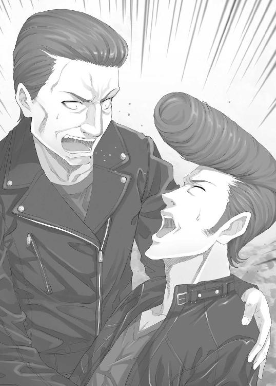
「アニキ、俺達、とんでもない相手に勝負を挑んじまったようですぜ！」
「テツゥ！ 俺達が力を合わせれば、勝てない相手はいない！ 俺達のチームワークは無敵だ！ そうだろ！」
「アニキィィィ！」
この小芝居、さっさと終わらないかな。
時間に余裕はあるとはいえ、時間を無駄にすることを是としたわけではないのだ。
「それじゃあ、新井君。こっちもチームワークを――」
「嫌だ」
「言うとは思ったけど、即答だね」
「当たり前だ。俺とお前との間でどんなチームワークが生まれるというんだ？ 電脳ランドで俺をはめたお前を、俺はまだ恨んでいるからな。そもそも、俺はチーム戦というもの自体が嫌いなんだ。そんなものはするべきじゃない。負けたら負けた原因を作ったやつがこれでもかというくらいに散々叩かれて嫌な思いをするに決まっているし、勝ったとしても勝ったのはチームであって自分ではないのだから何とも思わない。チーム戦というのは、ハイリスクローリターンな一部の人間以外全員が損をする仕組みなんだよ」
「いや、そんなことはないよ。チーム皆で勝ったときの嬉しさは倍増するでしょ？」
「お前が本心からそう言っているわけじゃなく、テレビ用の口からでまかせを言っているのはよく分かっているが、敢えて反論してやろう。勝ったときの嬉しさは倍増なんてしない。人数分だけ分割されるというわけでもない。人数で割った分の喜びすら俺のところまで届くことはないんだよ。チーム戦を構成するものは、活躍できる一部の者達とその他のモブキャラだ。『勝ったときの嬉しさを分かち合う』なんて言葉があるが、あれは下の人間から掠め取った喜びを上の人間同士で融通しあっているだけだ！ 成功者の成功者による成功者のための言葉でしかないんだよ！」
「いや、それじゃあ成功者になろうとすればいいんじゃないの？ 新井君ってさっきから負けた原因を作った人とか、活躍できない人とかの立場で言っているでしょ？」
「俺には無理だ。俺のような性格が捻くれているだけの凡人が成功者になれるわけがない！」
「ひどい凡人コンプレックスだ！」
「現状を見てみろよ。俺は日本でも有数の世間の笑い物だ。だからここに呼ばれたわけだし、それを否定することはできないだろ？」
「それは、うん。そうだね」
鉄山は否定しなかった。ここで否定することは気遣いを通り越して、ただの矛盾でしかない。俺が電脳ランドでやらかしたのは、そもそも鉄山が原因でもあるのだから当然だ。
「というわけで、俺は多くの人間に蔑まれている。だから、逆襲として他人を陥れ、蔑む権利と義務があるんだ！」
「この凡夫は、やっぱりクズだった！」
「俺達はチームだ。二人でチーム【クズ】だ！」
「分かりました。チームワークなんてゴミです。ゴミクズです。認めます」
とうとう、鉄山が俺の理論を認めた。
この勝利は小さな一歩だが、世界の幸せを削除するためには大きな一歩だ。
そんな俺を見て、マサは俺に言葉を向ける。
その言葉というのは――。
「お前は、かわいそうな奴だな」
それは、ドラマの登場人物、主に主人公サイドの人間がよく言う言葉だった。
悪役の大富豪が貧乏な主人公に負かされるときにかけられることが多い言葉だ。この言葉を聞いた悪役は大抵悔しがり、自らの人生を後悔することになるのがお約束だが、生憎、俺は悪役でもなければ大富豪でもない。ただの卑屈な人間だ。
だから、そんな言葉は他人に言われるまでもなく、何度も何度も自分のなかで繰り返しつぶやかれてきた。そんな俺に対し、まともなリアクションを期待したのなら、愚かとしか言いようがない。
俺はマサに顔を向けると、満面の笑みで叫んだ。
「その通～り！」
「......は？」
「俺はお前が言ったとおり、友達も恋人もいない寂しくて惨めでかわいそうな人間だ。そんな俺を目の前にして、上から目線で『かわいそうな奴だ』と言って悦に入るとは恐れ入った！ 実に素晴らしい趣味と言わざるを得ないだろう！」
「そういう意味じゃない」
「じゃあ、どういう意味なんだよ？」
「それは......」
「ごまかす必要はないさ。悪いことじゃない。寂しい奴がいたら見下せばいいし、惨めな奴がいたら蔑めばいいし、かわいそうな奴がいたら優越感にひたればいい！ それが何物にも代え難い快楽であることを俺も知っている！ お前は俺と同じ、他人の不幸を心の底から喜べる人間だ！ 今度一緒に、ハゲタカに狙われるアフリカ人の子どもの写真を見ながら、焼肉でも食べようじゃないか！ 他人の不幸は最高の調味料だ！ よく言うだろう！ 『他人の不幸で飯がうまい』ってなぁ！」
俺のまくしたてに、マサは言葉を失ったようで、俺のほうを見ながら何も言えずにいた。
さて、言いたいことも言ってスッキリしたところで、さっさとゲームに移ることにしよう。そう考え、タブレットを確認しようとしたところに、聞き覚えのある声が割り込んできた。
「やぁ、久しぶりだね、新井君」
「お前......」
「お前じゃないよ。私のここでの役の名前は『Ｎ』だ。色々とセリフを省略するけれど、君たちは私のことを『ナナシ』と読んでくれ」
そう言って、ナナシこと七瀬菜々美は俺の前に再び姿を現した。
２
最寄りのゲーム会場は、鉄山がボールを当てた場所から徒歩三分の場所にあった。電脳ランドではゼロ秒で次のゲーム会場にたどり着いていたが、現実はそういうわけにはいかない。
会場には円形の大きなテーブルが置かれていて、その周りには四つの椅子が並べてあった。テーブルの中央にはマイクが置かれていて、その下では、モニター画面がテーブルに埋め込まれていた。
そして、そこに司会者として待機していた人物。
それこそが、俺を嵌めた七瀬菜々美だった。彼女は電脳ランドでナナシという名前のキャラクターを演じ、俺達をだまし尽くした。俺の通う高校には、未だに彼女に対して深い恨みを持っている生徒が数多くいる。
「やぁ、新井君。久しぶりだね」
「ああ、そうだな」
「いや～、もう二度と会いたくないとか言っちゃったけど、また会ったね。まさか、ノコノコとこのゲームに参加するとは思わなかったよ」
「大金がかかっているんだ。色々と言いたいこともあるが、全部後回しにする」
「......ん？」
「何だ？」
「......いや、いいんだ。あれだけのことがあったのに、私へのリアクションの薄さに驚いていたんだよ。さて、君達にやってもらうゲームの名前は『属性当て』だ」
属性当て。
タブレットに入っていたルールを一読し、大体の内容は把握しているが、現時点では有効な戦法というものはないように思う。もっとも、これからナナシが改めてルールを説明するのだろうから、これから何か思いつくかもしれない。
「これはこの番組スタッフが今日のために作り上げたオリジナルカードゲームだ。市販はされていないから、有利不利はないはずだ。それに、四人で一つのデッキを共有するゲームだから、特定の誰かが特別に有利になるようなこともないだろう。というわけで、とりあえずそれぞれのタブレットにルールを表示させるから、一読してくれ」
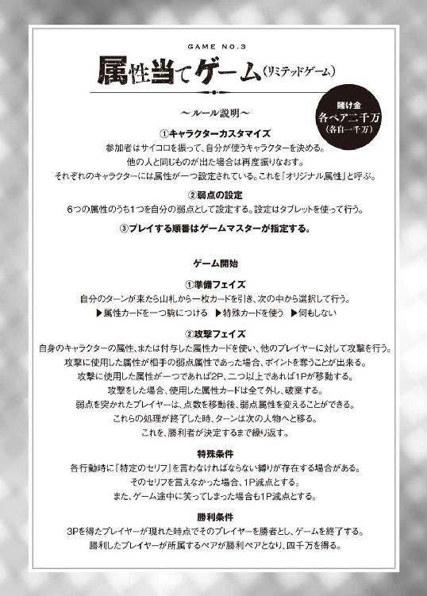
タブレットに現れたルールを読んでみたが、やはり有効な戦法は思いつかなかった。というより、そんなものは存在しないのだろう。これはババ抜きと同じ、運が最も重要な要素となるゲームだ。だが、そんなことはどうでもいい。
このルールに対し、俺はある種の不信感を持っていた。
それは、何かを隠されているという感覚。例えば、攻撃時に属性カードに書かれているセリフを読み上げることに何の意味があるのか分からなかったし、攻撃を受けた属性が弱点属性だった場合に言う『特定のセリフ』というものも明かされていない。
このゲーム、もしかしたらまともなものではないのかもしれない。
そう考えていたが、蓋を開けてみれば何のことはない。
とんでもなくぶっとんだ頭のおかしいゲームだったのだ。
「それじゃあ、補足説明もあるが、まずは準備を始めよう。席順については、ランダムにこちらで決めさせてもらった。タブレットに出ているから、表示された椅子に座ってくれ」
言われて確認してみると、タブレットの右下に『席順Ａ』という表示があった。
その指示に従い、俺はＡと書かれた椅子に座る。他の三人も同様で、マサがＢ、鉄山がＣ、テツがＤの椅子に座った。
「さて、全員が席に着いたところで、それぞれ自分のキャラクターを決めてもらうことになるが、そのキャラクターにはそれぞれ属性が設定されている。君達にはサイコロを振ってもらい、どのキャラクターを使うか決めてもらうよ」
そう言って、ナナシは俺達四人にサイコロを手渡した。
そのサイコロには六つの属性が書かれていて、それを見た俺達は絶句した。
その属性というのが――。
『ツンデレ』
『中二病』
『病弱』
『妹』
『メカ少女』
『魔法少女』
「属性って、萌え属性やないか！」
真っ先に突っ込みを入れたのはテツだった。......テツ？ ん？ いや、ちょっと待てお前。何でいきなり『萌え属性』なんていう単語がお前の口から飛び出しているんだ？
「テツ......!?」
テツのツッコミに驚くマサ。
どうやら、マサにとっても予想外のリアクションだったようだ。
「いや、アニキ。違うんです」
「何だ、その萌え属性というものは」
「いえ、その、数ある萌えを類型化したものというか......」
「萌えとは一体何だ？」
「......さぁ？」
何なんだろうな、萌えって。適当に定義付けることはできるのかもしれないが、元々感情や概念を文章として表現することはかなり難しいと思う。要するに、よく分からないのだ。簡単に分かるようなら、世のラノベ作家は苦労しない。
まぁ、何にしても疑問は氷解した。このゲームは、主にプレイヤーの羞恥心を煽るものだ。参加すること自体が罰ゲームのようなものと言っていいだろう。
そんなことを考えながら正面を見てみると、鉄山が眉間にしわを寄せながらタブレットを凝視していた。もしかしてコイツ、まだルールを把握できていないのか？
「鉄山、ルールは分かったか？」
「......カードゲームとか大の苦手なんだけど」
どうやら、全然理解できていないらしい。もっとも、それはマサとテツのペアも同じだ。
「簡単に言えば、相手が設定した弱点属性を攻撃するゲームだ。攻撃できるのは、オリジナル属性と引いたカードを装備することでついた属性だけ。ルール自体は簡単だから、始まればすぐに理解できる。こんなところで無駄な体力を使う必要はないぞ」
鉄山に話しかけるが、反応が鈍い。どうやら、思考の泥沼にはまっているようだ。
「そう......。これは、初めてやるゲーム......。ならば......。対等！ 対等！ 対等！ 状況は、おかれた立場はあくまでも対等......！ とどのつまり......。対等なんだ......」
「ちょっと待て！ 今すぐ待て！」
鉄山はやっと俺の呼びかけに気づいたようで、きょとんとした顔をしていた。
周りの人間が凄い勢いで破滅していきそうなキャラクターを手に入れようとしていたことに気づいていないのだろうか。
一方、ナナシはというと、俺達のリアクションなどどうでもいいかのように淡々と進行していった。だが、その顔には嫌らしい笑みがずっと張り付いている。
「とりあえず、新井君からサイコロを振ってくれ。その後、マサさん、鉄山さん、テツさんの順番でサイコロを振ってキャラクターを決めることになる」
促され、俺はサイコロを振った。現れた属性は『ツンデレ』。他の三人も続いてサイコロを振り、マサには『メカ少女』、鉄山には『病弱』、テツには『妹』の属性のついたキャラクターが割り振られた。
俺達はナナシからそれぞれのキャラクターのカードを受け取り、テーブルに置く。
「さて、次は自分の弱点属性を決めてもらうことになる。タブレットに六つの属性が表示されるから、その中から一つを選んでくれ」
ナナシがそう言うと、タブレットの画面が六つに分割され、それぞれに属性名が現れた。
ルール上、自分に与えられたキャラクターの属性は、カードを消費することなく攻撃に使うことができる。ならば、敵二人の持つキャラクターの属性である『メカ少女』と『妹』は避けるのが定石だろう。
ここまでは誰でも思いつく。
だから、俺はあえて『メカ少女』を選ぶことにした。
「さて、全員が弱点属性を選んでくれたようだね。それじゃあ、カードを配るよ。一人につき五枚配られるから、配られたら手にとってくれ。ちなみに、ゲーム開始後はセルフサービスだ」
そう言って、ナナシはなれた手つきでカードを配り始めた。念のため、カードを配るときの手元を凝視していたが、特に何かを仕掛けられた様子もない。
俺は配られたカードを確認する。
『メカ少女（属性）』
『病弱（属性）』
『病弱（属性）』
『中二病（属性）』
『中二病（属性）』
特殊カードが一枚もなかった。
ナナシを見ると、向こうも俺に何かあったことに気づいたのか、怪しい笑みを浮かべる。
まさか、俺に気づかれないように何か細工を――。いや、それはないだろう。手元はしっかりチェックしていたし、ただの役者にそこまでのスキルがあるわけがない。
「それじゃあ、ゲーム開始だ――と言いたいところだが、ルールに補足があったのを忘れていたよ。よく聞いてくれ。ルールその１。弱点属性を攻撃されたときに『特定のセリフ』を宣言することになっているが、そのセリフをここで開示しておこう。さっきの、マサさんの反応で予想は付いていると思うけれど、そのセリフとは――」
四人の視線がナナシに集まる。
「『萌え～』だ！」
セリフの内容については、大方の予想通りだった。
自分で言っていて恥ずかしかったのか、ナナシは少し気まずそうな顔をしている。まぁ、プレイヤーを辱めるためのセリフなのだから、それが正常な反応だ。ナナシはごまかすように、説明を続けた。
「中央のマイクで百デシベル以上の声の大きさで三秒以上言ってくれ。判定は機械が自動的かつシビアに行うことになっている」
ナナシは中央のマイクを指差した。
あれが声量と持続時間を計ることになるらしい。
「ルールその２。ゲーム中、笑ったら即マイナス１Ｐとする。照れ隠しは許さないということだ。君達には、正面から萌えて萌えて萌えまくってもらう。分かってくれたかな？」
やはりこのゲーム、プレイヤーを辱めるのが主目的のようだった。実にバラエティー番組向けの低俗な追加ルールだ。
「それでは、今度こそこれでルール説明は終了だ。最初のターンは新井君からスタートとなる。楽しくて無様なゲームを始めてくれ」
３‐１
「それじゃあ、始めるぞ。まず、カードを一枚引く」
新しいカードは『中二病（属性）』のカードだった。
基本的に、このゲームにおいて同じ種類の属性カードを二枚以上持つことにほとんどメリットはない。ましてや、コレは三枚目だ。ハズレと言う他ないだろう。
だが、初手は既に決めてある。
この一見運だけが問題と思えるゲーム、突き詰めて考えればかなり戦略的な部分も存在する。つまり、相手の弱点属性について、ある程度は推論することができるのだ。
「俺は『メカ少女』の属性カードをつけ、『メカ少女』でテツを単独攻撃。『目から水が......。これ、故障ですね。防水仕様ではないので今すぐ対処が――アバババババババババ......』」
色々と台無しだな、このセリフ。
そんな感想に関係なく、このセリフはきっちり認識されたようで、中央のモニターには結果を知らせる文字が現れた。
《萌え属性直撃》
《単独攻撃のため、２Ｐが移動します》
《テツ様は宣言をお願いします》
予想通り。
これで、二ポイントを手に入れることができた。あと一ポイントで俺の勝ちだ。
だが、それよりもお楽しみはここからだ。テツとマサは麻雀戦争とかいう映画に出演している、いわば硬派俳優。間違っても『萌え』などという言葉は吐かないだろう。奴らの臆病な自尊心と尊大な羞恥心的なものが、彼らに『萌え』という言葉を叫ばせることができるのか。それができなければ、このゲーム、俺と鉄山の勝利が決まったようなものだ。
そういうわけだから、とりあえず煽ってみることにした。
「さぁ、テツ。宣言の時間だ。いい大人が全力で『萌え』と叫ぶ姿を、日本中の人間に見せ付けるといい。今こそ、チーム【仁義】の殻を破る時だ。任侠よりも萌えを愛している自分をさらけ出すといい」
俺の言葉に、テツは怯んだ。ここで萌えと叫ぶことは、自らのキャラクターを壊すことに他ならない。長年続いている映画にも、影響を与える可能性だってある。ここは、降参して保身に走るべき場面なのだ。
テツもそう思ったらしく、ナナシに視線を向ける。
だが、ナナシはやはりナナシだった。
「ちなみに、投了は認めていないからね。何があろうと、このゲームは決着させるよ。どれだけ時間がかかろうと、一度始まったゲームは最後まで責任を持ってやり遂げてもらう。それがこの『幻影島サバイバルゲーム』だ」
最初から、逃げ道は塞がれていたのだ。
それを察したのか、テツは消え入るような声を発した。
「......も、もえ」
《声が小さくて規定値まで届きません》
機械による公平で無慈悲な宣告がなされる。
一方、テツはというと、同じ言葉を発しようとはしなかった。今の一言で、テツは己の羞恥心を振り切るための気力を使い果たしてしまったのだ。多分。
それでいい。このままいけば、テツは追加ペナルティーで更に二ポイントを奪われることになる。そうなれば、ゲーム開始直後でマイナス四ポイント。ゲームでの勝利をあきらめ、マサの援護に回ることにするのだろうが、そうなったところで俺と鉄山がマサに集中砲火を浴びせれば、まず負けることはないだろう。
そんなテツに対し、マサが檄を飛ばす。
「テツ！」
「へい」
「やれ」
「......へい。萌え！」
マサに言われ、鉄は再度『萌え』という言葉を口にした。
だが、これでは駄目だ。
《規定値以上の音量が三秒間続いていません》
そう、ルール上『萌え』という言葉は三秒以上続けて発生しなければならない。つまり『萌え』ではなく『萌え～～～』と語尾を伸ばす必要があるのだ。だが、それは俺がさせない。
「あ～あ、情けない奴だなお前は」
「何だと？」
「結局、お前は自分の羞恥心に負けて『萌え』という言葉を言えなかったんだ。だから、お前はマサの檄を待った。『マサに言われたので仕方がなく言いました。ゲームルールで言わされるのはプライドが許しませんが、マサの命令だったら聞かないわけにはいきません』という対外的アピールをすることで、己の羞恥心からようやく抜け出せた。そんな情けない人間が任侠だと？ 笑わせるな、この軟弱俳優がぁ！」
「く......」
「というか、お前、萌えに詳しいだろ？ 実際は全然硬派じゃないだろ？」
「何だと？」
「さっきとっさに出てきた『萌え属性』という単語。普通の人間からとっさに出てくるものじゃないぞ」
「そ、それは......」
テツは俺の狙い通り黙り込む。
これは、ただのレッテル貼りだ。テツの口から『萌え属性』という単語が出たということを根拠に、あることないことを適当に言うことで、テツを萎縮させることができる。たとえ、それが事実でないにしてもだ。
そもそも、事実なんてものはどうでもいい。
バラエティー番組を見る大衆が求めるのは事実などではなく、一時的な娯楽だ。何の役にも立たず、ただ笑えればそれでいい。元から空っぽの頭の中身を更に軽くして楽しみたいという原始的で安易な欲求だけを満たすために、大衆はテレビの前に座る。
だからこそ、重要なことは事実の提示ではなく、レッテルを貼ることだ。
レッテルを貼り付けさえすれば、己に実害のない大衆は簡単にそれを信じ込む。
そんなことは、この日本においては幼稚園児から政治家まで皆がしていることだ。
「もえぶたに告ぐ！ 今こそ己の本性をさらけ出し、嬉々としてメカ少女に対し『萌え』という言葉を叫ぶがいい！ 萌え萌えブヒブヒ、泣き声を上げてみろ！」
テツは黙ってしまう。
それでいい。このまま時間が経過すれば、二ポイントを――。
そう考えていると、突然テツが絶叫した。
「『萌え～～～～～～～～～～～』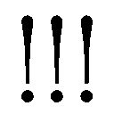」
絶叫は十秒近く続いた。
まさかコイツ、俺のセリフにそんなにも萌えたのか!?
いや、そんなわけないか。
「そうだ。俺が萌え豚だ」
なんのこっちゃ。
「ずっと言えなかった。マサのアニキにも秘密にしていた。だが、今こそ告白しよう。俺は萌え豚であり、全てを萌やし尽くす新世界の神だ！ 俳優という仕事の傍ら、俺は日本を萌やすことに心血を注いできた。インターネット上で様々なイラストを公開し、今ではネットでそこそこの人気が出るほどの実力を手に入れた！」
どうやら、何かが吹っ切れてしまったらしい。
正直、全く興味がないから長々としたセリフは避けてもらいたい。
そんな俺の思惑とは関係ないのだろうが、暴走しかけたテツを止める声が入った。
「テツ!!」
「ア、アニキ......」
「それくらいにしておけ」
「......へい」
どうやら、テツという男はマサには頭が上がらないらしい。
芸能関係についての知識はほとんどないが、やはり人間関係には厳しいらしい。暴走状態になりかけた人間をこうも簡単に止めるとは、たいしたものだ。
「新井和馬」
「何だ？」
「お前がテツをメカ少女で攻撃したのは、明らかに意図があってのものだ。あてずっぽうでないことはゲームに詳しくない俺でもわかる。だが、何故分かった？」
「簡単なことだ。まず、これは実質的なチーム戦になっている。ならば、俺と鉄山のキャラクターが持っているツンデレ属性と病弱属性を弱点属性にすることは避けるのが当然の考え。残るは中二病・妹・メカ少女・魔法少女の四つ。問題は、この中からどれを選ぶかだ。妹・魔法少女・中二病については大体の想像がつき、自分がそれを選んだという事実が公表されるだけでも一般の人間からすれば、十分に恥ずかしい。だが、メカ少女についてはいまいち想像がつきにくい。萌えの対象としてはマイナーなものだから、他のものに比べればまだ恥ずかしくはない。また、兄貴分であるお前に与えられた属性もメカ少女であり、いつでもメカ少女を攻撃できるのは味方であるお前だけだということになる。常識人の羞恥心と判断力を考えれば、そこのテツとかいう男はメカ少女を選ぶ。そう考えた」
「成程」
「このゲームには、駆け引きの要素がちゃんと存在する。ただ運のよさだけを競うゲームでも、他人を辱めるためだけのゲームというわけでもない。精々九割程度だろう。萌えという単語だけで油断しているお前達では、俺には勝てない」
「成程。確かに、俺は油断をしていたようだ。電脳ランドでの様子をテレビで見はしたが、いざ相手にしてみるとやはり厄介だ。だが、そう簡単に勝たせてやるつもりはない」
３‐２
「俺の番だ。カードを一枚引き、手札にくわえる」
マサは手札を見ながら数秒間俺の様子を窺った。
三ポイント先取が勝利条件となっている以上、ポイントを持っている者を攻撃するのは定石と言っていい。
「『メカ少女』で新井和馬を単独攻撃する。『まさか......。私が人間じゃなかっただなんて』」
低くかすれた声でマサはセリフを言った。その間、視線は俺から一切外れていない。むしろ、睨みつけるように鋭い目を全力で俺に向けている。コイツ、意外に強敵なのかもしれない。
マサの宣言により、中央に文字が表示される。
《萌え属性直撃》
《単独攻撃のため、２Ｐが移動します》
《新井様は宣言をお願いします》
「萌え～～～！」
俺はためらわずに叫んだ。
そもそも、俺の評判は電脳ランドで地に落ちきっている。今更『萌え』とか叫んだところでどうにかなってしまうような羞恥心は、あの時に壊れてしまった。
《新井様は新しい弱点属性を選択してください》
俺は手の位置が敵チームに見られないよう、体で隠しながら次の属性を選んだ。
まぁ、当たってしまったのは仕方がない。そんなことよりも気になることがある。それは、何故マサがメカ少女で攻撃してきたのかということだ。
「さっきの俺の説明を聞けば、お前はメカ少女以外で攻撃してくると思っていたんだけどな」
「今の説明を聞いたからメカ少女で攻撃した。お前は異常だ。自らが不利になるはずの言葉を平気で吐き、それゆえに相手は混乱し、動揺し、回答を間違える。ついさっきまで、俺のオリジナル属性であるメカ属性を敵が選ぶはずがないと思っていたのだが、お前は敢えてそういうことをする人間だと考えた。まず最悪を選択し、その最悪を敵の視界から隠すような戦法。それがお前のやり口だ」
このマサという男、俺のことをある程度研究してきているらしい。
正直、気持ち悪くて仕方がないが認めざるを得ない。コイツは勝利のために必要な戦略を正しく考えて行動するタイプの人間だ。しかも、電脳ランドでの俺を観察し、俺の性格まで考慮したうえで随時柔軟に考えを変えることができる。
このゲーム、簡単には勝たせてもらえないかもしれない。
３‐３
「私のターン。ドロー！」
鉄山はどこかで聞いたようなセリフと共に、カードを引いた。
「私は、特殊カード『フィフティ・フィフティ』を使用します。このカードは、ポイントが二ポイント以上あるプレイヤーに対して使用することができるものです。このカードの効果によって、マサさんのハズレ属性が三つ、ランダムに公表されます！」
鉄山がそう宣言すると、中央のパネルに文字が現れた。
『中二病』『ツンデレ』『魔法少女』
この三つの属性は、マサの弱点属性ではないということになる。
だが、鉄山はそれだけでは止まらない。
「ところで、マサさん」
「何だ？」
「聞くところによれば、貴方のお父さん、入院中だそうですね？」
「それがどうした？」
「いえ、まさか病気で弱っている父親を持つ人が、病弱属性を弱点属性にしたりなんかしないだろうと考えただけですよ。まさか、お父様に萌え萌えするだなんてことはないでしょうからね。マサさんがそんな変態さんであるはずがありません。というわけで、私はマサさんを『病弱属性』で攻撃。『助けてくださ～い』」
《ハズレです》
「あれま、ハズレでしたか」
「鉄山徹子！ お前、俺のことを馬鹿にしているのか？」
「そんなことはありません。さっきの新井君からの説明を聞いているときの様子からして、マサさんの弱点属性がテツさんのオリジナル属性である『妹属性』だことは予想がつきました。元々『病弱属性』は貴方の弱点属性ではないと思っていましたが、万が一これが正解だったときに、貴方の評判が地の底まで落ちるように言ってみただけです」
今の鉄山の選択は、いい判断だった。
今現在、マサのポイントは二。最初のターンで単独首位となり、勝利にリーチをかけた。この後に考えられる展開としては、テツが二種類の属性で俺か鉄山を攻撃して外し、その後にマサも同じ相手を二種類の属性で攻撃することだ。この攻撃が成功する確率は、あまり低くないだろう。
だから、その前にマサのポイントを削っておく必要がある。
鉄山が特殊カードと単独攻撃により他の可能性を排除した以上、マサの弱点属性は『メカ少女』か『妹属性』のどちらか。ならば、次の俺のターンで単独攻撃をしてヒットすれば、次のマサのターンで決着がつくようなことは避けられるはず。
問題は、俺の手元にその二つの属性カードがないということだ。
３‐４
「俺のターンや！」
テツはカードを一枚引き、手札に加える。
俺の予想では、テツは俺を複数の属性で攻撃してくる――はずだったのだが、どうやら、マサは俺の予想通りにことが運ぶのを何が何でも阻止したいらしい。マサは、低い声でテツに語りかける。
「テツ」
「へい」
「俺を攻撃しろ」
「アニキをですか!?」
「そうだ。この状況を見るに、俺がどの属性を選択したのかは既に奴らに知られている。ならば、お前にポイントを渡した上で属性の変更を行うのが最善策」
「アニキ......。ですが」
「心配するな。お前が俺のことを何と呼ぼうと、お前がどんな趣味を持っていようと、俺たちの関係は変わらねぇ」
「アニキィ！」
「違うだろ、マサ。お前が俺にかけるべき言葉は『アニキ』ではないはずだ」
「分かった！ 俺、やります！」
「分かってくれたか」
マサは微笑を浮かべ、テツを見やる。そこにあるのは、二人の間の確かな信頼。シリーズ化する映画の撮影の中で、長い時間をかけて培ってきたものなのだろう。
テツが目に涙が浮かべ正面を見据える。
その視線の先にはついさっきまでの微笑みを消し去り、覚悟を決めた男の姿があった。
「さぁ、俺を攻撃しろ、テツゥゥゥゥゥゥ」
「アニキィィィィィィ」
「ヤレェェェェェ！」
「『おにぃぃぃぃちゃ～ん！ 朝だよぉぉぉ、起きてぇぇぇぇぇぇぇぇ!!』」
「萌えぇぇぇぇぇぇ!!」
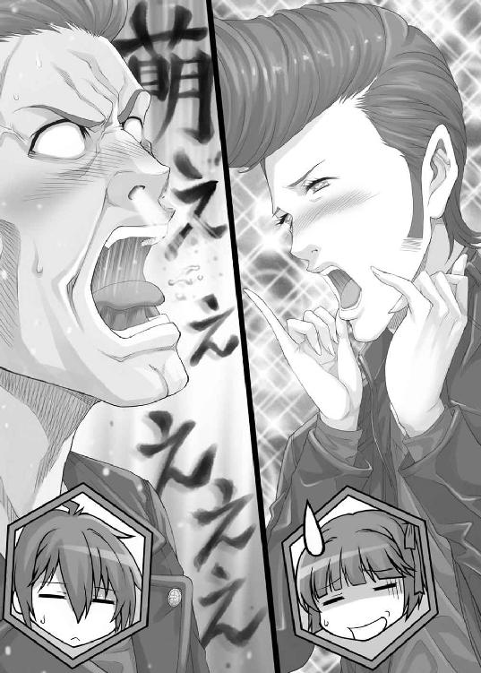
何だコレ。
得体の知れない『萌え』以外の何か。
そんなものが溢れる気持ちの悪い光景が俺の目の前に広がっていた。もしかしたら、芸能界というのは頭がおかしい人間しかいないのではないだろうか。俺ともあろう者が、この時ばかりはドン引きしていた。
だが、鉄山は違う。
彼女はあくまでも冷静に、冷淡な声で指摘する。
「すみません。先ほどマサさんはテツさんに対して指示を出す際に、微笑を浮かべていました。ルールに抵触するため、１Ｐの減点を要求します」
「ふむ、そうだね。でも、その前にやっておかなければならないことがあるんだ」
《萌え属性直撃》
《単独攻撃のため、２Ｐが移動します》
《マサ様は宣言をお願いします》
「『萌え』と叫ぶタイミングが早すぎたのでやり直しだよ」
「何だと!?」
「まだ直撃かどうかも確定させていないのに、勝手に叫んでも意味はないさ。できないというのなら減点するけれど、どうする？」
「む......」
マサは不服そうだが、反論はしなかった。
その代わり、今度は、必要最低限の声量で、顔を赤くしながら宣言をする。
「萌え～～～」
《マサ様は新しい弱点属性を選択してください》
マサはおずおずとタブレットを操作し、新たな弱点属性を決定した。
「さて、次に微笑の件だけど、私も視認している。ルール上禁止されていることから、ルールに抵触していると考える。よって、マサに対しては１Ｐのペナルティーを与える」
「何......だと」
「おにいちゃん......」
「その呼び方はもう止めろ」
「へい」
「落ち込んでいるところ悪いけど、進行させてもらうよ。おっさんたちの萌え萌え人情劇とか、どうでもいいんだから」
「あ、はい」
マサは素直に従った。
年齢はマサの方がかなり上のはずだが、芸歴やら地位やら謎の力関係があるのだろう。
４‐１
「俺の番か」
俺はカードを一枚引いて、手札に加える。
今回引いたのは『魔法少女（属性）』のカードだ。『妹属性』のカードが来なかった以上、２Ｐがマサからテツに移ったのは運がよかった。このままでは、マサが次のターンで勝ちを決めていた可能性だってある。
だが、状況がこちらに有利になったわけではない。
現時点ではマサとテツの弱点属性についての判断材料はゼロとなってしまっていた。一巡目のやり取りで、それぞれのプレイヤーの性格や状況だけでは、誰がどの属性を選んだのか判断がつかなくなってしまったのだ。
こうなった以上、あてずっぽうに攻撃するしかない。
幸い、ポイントで見れば一ポイントだけ俺と鉄山のペアが優勢となっている。
「俺はキャラクターに『病弱』を装備させ、テツに『病弱』『ツンデレ』で複数攻撃をする！ 『私の目をごまかせると思ったか、三流芸術家め！ あの葉っぱは偽物だぁ～!!』『頭がおかしくなっていない限り、君みたいな人のことを好きになるなんてありえないでしょう』」
言ってみると、やはり酷いなこのセリフ。
前半の病弱は『最後の一葉』を台無しにしているし、後半のツンデレは誰かに言われたことがあるような気がして仕方がない。ああ、そうだ。電脳ランドで、ツンデレでも何でもない、ただの侮辱の言葉として鉄山が俺に向けた言葉に似ているんだ。というか、そのものじゃないか？
俺の宣言に対し、中央のパネルはあくまでも無機質に結果を表示する。
《ハズレです》
「......ターンエンド」
４‐２
「俺の番だな」
マサは一枚カードを引き、手札に加える。
「俺のポイントはマイナスになった。ならば、俺のやるべきことは一つ。テツの勝利をサポートすることだ！ 俺はこの特殊カード『強くてニューゲーム』をテツに対して使用する。これで、テツは次のターン、自分のターンを二度連続で行うことができる」
「アニキ......」
「テツ、勝てよ」
「はい」
「そして、俺は新井に対して『メカ少女』で攻撃だ！ 『まさか......。私が人間じゃなかっただなんて』」
《ハズレです》
「ハズレか。普通の人間なら絶対に選ばなそうな選択だったと思ったんだが」
「俺を過小評価しすぎだ。特殊カードを使用した場合、他の属性カードがついていない以上、お前ができる攻撃は『メカ少女』属性だけだ。他にできることがないからという理由で攻撃する展開は容易に思いつく。いくら俺でも二度同じことはしないさ。それくらい、少し頭を使えば分かるだろ？ それとも、麻雀なんていう運ゲーしかやっていない人間は脳みそが退化でもするのか？」
「む......」
おや、思ったよりも反応が鈍い。麻雀をやっている奴にこういうことを言うと、大抵気を悪くするものだと思っていたけど、必ずしもそういうわけではないのだろうか。
「そもそも、俺はそんなに特殊な人間じゃない。言っておくが、電脳ランドで一番目立ったのは俺だったかも知れないが、他の奴らも少なからずやらかしている。そう考えれば、俺も他の奴らと同じ普通の人間と思えないか？」
「思えない。そんなことを自分で言う時点で、お前は異常だ。誰かに認めてほしかったら、口ではなく行動で示せ。海外では犯罪者に社会奉仕活動をさせるらしいが、お前も見習ってみたらどうだ？」
とうとう、犯罪者扱いか......。
それに、随分と下らないことを言ってくれる。
俺は電脳ランドで、ゲーム内ではあったものの行動はした。
あれは、俺の主義主張に基づいた行動だ。
俺は誰かに認められたいのではない。誰もに俺の主張を認めさせたいのだ。
そう、例えば――。
「社会奉仕活動なんて、汚らわしいことをよく言えたものだな」
「汚らわしいだと？」
マサは苛立ちのこもった声で問いただす。どうやら、こちらの挑発には簡単に乗ってくれたようだ。
「新井君。マサさんは無駄に怖そうな見た目で、さまざまなボランティア活動の中心となっている人なんだよ。決して堅気には見えないけれど、社会に貢献しているの。見た目に似合わず、根は優しい人なの。どうしてこんな見た目になってしまったのかは分からないけれど、とにかくいい人なんだよ」
鉄山の物言いに、テツが噴出しそうになっていた。
だが、今は俺の主張の時間だ。テツの自滅を待つ気はない。
「成程、お前はいい奴なんだろう。だが、それが本当にいい結果へとつながったのか？ お前はボランティアでも何でも善行しているらしいが、その善行によって利益を得た人間は何を考えると思う？」
「ア、アニキへの感謝に、き、決まっているだろ」
横からテツが口を挟む。
どう見ても笑いそうになっているのをごまかすためだったが、あえてここで指摘はすまい。
「それだけじゃあ済まない。次にそいつは『マサがやったことを他の人間もやるべきだ』と主張しだす。そして、利益を得た人間どもが口を揃えることによって、その善行をしない者に対して『悪』というレッテルを貼り付ける。そうすることによって、レッテルを貼られることを恐れた者たちは、嫌々ながらお前と同じ善行をさせられることになる」
「そんなのは結果論だろう」
「結果こそが全てだ。やつらは、口では『ありがたい』とか『感謝している』とか適当なことを言うだろう。だが、内心では使い勝手のいい奴隷が出来た――むしろ、自分は奉仕されて当然だと思うようになる。そうして、善行をしない奴を非難しだす。いいか、マサ！ 善行は善意に集る乞食を生み出す行為だ！ お前が少数の幸せのために行動することで、多くの人間が不幸になる！ それがどれほど罪深いものであるかを知れ！ この自己満足に浸った迷惑行為ばかりする視野狭窄野郎め！」
「よくもそんな詭弁を......」
「俺の言っていることが詭弁だと？ だったら、お前が始めたボランティア活動に嫌々参加させられている人間は一人もいないのか？ 趣味の時間を奪われた人間はいないのか？ 家族と過ごす時間を奪われた人間はいないのか？ 休む時間を奪われた人間はいないのか？ もしいるなら、そいつにとってお前はただの迷惑な人間だ！ 反論があるなら言ってみろ！ その全てを俺が論破してやる！」
「......お前に言うことはない」
「ああ、そうだ。今後も活動を続けていくようなら、『あくまでも任意』だとか『嫌なら来なくていい』だとかいう卑怯な逃げ道を用意するのは止めろよ。来ない人間は迫害するという無言の脅迫が存在する以上、そんなものに意味はないからな」
４‐３
「はいはい、そこまで。まったく、私を無視してよくもまぁ、好き勝手な話を続けてくれたね。本来なら即刻罰を与えたいところだけれど、そういうルールはないからとりあえず見逃してあげるよ。でも、これ以降は許さない。さっさとゲームを続行してくれ」
ナナシが俺たちの間に割って入ることで、俺達の口論は中断した。
そういえば、ゲームの最中だったな。
「それじゃあ、私のターン！ カードを一枚引いて......」
鉄山は引いたカードをチラリと見る。そして、そのまま場に出した。
「私は特種カード『休日出勤命令』をテツさんに対して使用します。このカードの効果により、テツさんは次のターン、カードのドロー以外の行動ができなくなります。また、この特種カードは使っても自分の準備フェイズを終わりません」
「なんやと！」
「残念でしたね。『強くてニューゲーム』の効果により、二ターンを連続で行うことができるようになっていましたけど、一ターン目でできることはカードをドローすることだけです」
これはいいタイミングだ。３Ｐ先取が勝利条件となるこのゲームは、相手に少し隙があればすぐに勝ちあがれてしまう。そんなゲームで二ターンを連続でできるというのは、いくらなんでも有効すぎる。何らかの妨害が必要だとは考えていたが、鉄山がやってくれた。
「そして、私は『中二病属性』を装備し、テツさんを『中二病属性』で単独攻撃！ 『時よ、我が頭脳を冷却せよ！ 八度目の太陽を待たず告げる！ 世界の外側より訪れし者よ、契約に従い、全てを原初へと巻き戻せ！』」
役者の血が騒ぐのか、鉄山はノリノリでセリフを言った。こういう脈絡のない中二病のセリフを何のためらいもなく言えるというのは、役者ならではといったところだろうか。そう思っていたら、最後にオチが待っていた。
「『必殺、クーリング・オフ！』」
ああ、うん。確かに、内容を聞いてみるとクーリング・オフだ、コレ。
契約の取り消しによる原状回復だ。
それはさておき、中央のモニターには結果が表示された。
《ハズレです》
４‐４
「俺のターン」
マサはテツの『強くてニューゲーム』と鉄山の『休日出勤命令』によって、このターン、ドローだけを二回することができるようになっている。
「まず一ターン目はカードを一枚引いてターンエンド。そして、二ターン目。カードを一枚引いて――俺は、この『中二病属性』を自分のキャラクターにつけ、新井和馬を『妹属性』『中二病属性』で攻撃だ！」
マサは俺に向かって、正面からセリフを吐く。
「『おにいちゃ～ん！ 朝だよ～、起きて～！』『我が得しもの！ 我が失いしもの！ その全てを法理に従わせ、この世に黄金の秩序をもたらしたまえ！ 奥義！ 確・定・申・告！』」
今度は確定申告か。確かに、四字熟語って必殺技っぽいよな。
だが、結果はというと――。
《ハズレです》
これで、二巡目はポイントの移動なしで終了したことになる。
５‐１
「俺の番だ」
引いたカードは、やはり属性カードだった。
だが、もうそれでいい。俺が考えた第二の作戦に、特殊カードは必要ない。
「俺は『中二病』を装備させ、マサに対して『中二病属性』『病弱属性』で複数攻撃をする。『永劫に続く倦怠よ！ 集合を解体せよ！ 彼の者の認識を乖離させ、混沌の彼方へと導け！ 必殺、ゲシュタルト崩壊!!』『助けてくださ～い！』」
酷く落差の大きいセリフだった。
そして結果はというと――。
《ハズレです》
「これでターンエンドだ」
５‐２
マサは無言でカードを一枚引いた。
ここまで、全員がターンの始めに自分の番であることを宣言していたが、別に必要ないことに気づいたらしい。まぁ、だから何だというわけでもないけれど。
「特殊カード『二度付け厳禁解除』をテツに対して使用する。このカードの効果により、テツは次のターン、属性カードを二枚自分のキャラクターにつけることができる！」
「アニキ！」
「テツゥ！ この勝負、絶対勝つぞ！」
「へい」
「では、『メカ少女』で鉄山に対して単独攻撃だ。『まさか......。私が人間じゃなかっただなんて』」
《萌え属性直撃》
《単独攻撃のため、２Ｐが移動します》
《鉄山様は宣言をお願いします》
「何だと!?」
鉄山に攻撃が当たったのは、マサにしてみても意外だったらしい。
正直言って、俺も予想していなかった。この状況下で、敵のオリジナル属性を弱点属性にするような馬鹿な真似を鉄山がするはずがないと思っていたのだが、見込み違いだったのだろうか。
「『萌え～～～』」
鉄山ははっきりとした良く通る声で叫んだ。
役者をやっている以上、色々なセリフを話さなければならない時もあるのだろう。
叫んでいる鉄山の姿に、照れは全く感じられなかった。
《鉄山様は新しい弱点属性を選択してください》
鉄山はタブレットを操作し、新しい弱点属性を設定した。
この女、一体何を考えているんだ？
５‐３
「私のターン。ドロー。私は手札の中から『パクリではなくたまたま似ていただけ』を発動。このカードは、ゴミ箱にある特殊カードを一つ選び、それと同じ効果を発動させるもの。私は『強くてニューゲーム』を選択し、その効果を新井君に対して使用する。これで、次のターン、新井君は二回攻撃できる」
二回攻撃。
このゲームにおいては、かなり有効なカードだ。
一度に得られるポイントは最大でも二。となれば、相手チームはポイントの高いプレイヤーを重点的に攻撃してくる。それゆえ、中々３Ｐまで届かず勝負が長引くことが予想される。だが、この二回攻撃があれば、最大４Ｐを得ることができる。つまり、相手のターンを挟まずにゲームに勝利することができるのだ。
鉄山がマサに２Ｐ奪われたのは痛かったが、これでまだ勝ち目は残っている。それどころか、２Ｐを奪われたことによって、マサとテツを油断させ、一瞬の隙を突くための状況を作り上げることができた。
「攻撃フェイズについては、マサさんもテツさんも病弱属性でないことがはっきりしているから、なにもしない。以上でターンエンド」
５‐４
「俺のターン。俺は、特殊カード『三択ロース』を使用する。このカードの効果によって、アライの弱点属性は、残り一つに絞られる。次のアライのターンが終われば、マサのアニキのターンだ。自分で自分を攻撃できない以上、次のアニキのターンで必ずアライからポイントを奪うことができる。アニキは現在１Ｐ。これで勝負がつく」
「テツゥ！ よくやった！」
「へい！」
これで、俺の弱点属性が『魔法少女』であることが確定してしまった。
「そして、鉄山に対して『妹属性』で攻撃する。『おにいちゃーん！ 朝だよ！ 起きてー！』」
汚い声でテツが叫ぶ。
こんな声で起こされたら起床するどころか永眠しそうだ。
《萌え属性直撃》
《単独攻撃のため、２Ｐが移動します》
《鉄山様は宣言をお願いします》
「なんやて!?」
何と、二度連続で直撃してしまったらしい。
これで、俺達チーム【クズ】は次のターンで敗北する可能性が高くなった。
そう、普通ならば。
だが、この状況はおかしい。
テツがすべきことは、２Ｐを得たマサのサポートだ。だから、間違っても俺を攻撃することで、俺の弱点属性を変更させるようなことはしない。ならば、攻撃は当然鉄山に対して、しかもオリジナル属性で行われることは簡単に想像がつく。
だが、鉄山はあえて弱点属性をテツのオリジナル属性である妹属性に設定していた。
これに何かの意味があるとすれば――。
俺はマサとテツの二人を観察する。マサが１Ｐ、テツが２Ｐを持っている上に、更に俺の弱点属性が確定してしまっていることで、二人は既に勝利したかのように椅子の背もたれに寄りかかって安心しきっている。
この状況から考えられる意図としては――油断を誘うこと。
それくらいしか考えられない。
だが、二人を油断させることで、鉄山は俺に何をさせようとしている？
いや、違う。考え方が違う。
鉄山はそこまで賢くない。このゲームのルールを把握することすら一苦労していたのだ。そんな鉄山が、明確な意図を持って俺にパスを渡したとは思えない。ならば――。
結論。
鉄山は敵を油断させるという状況を作った。それで終わり。
そして、油断した人間の心の隙につけこむのは、俺の得意とするところだ。しかも、鉄山はこのゲームで、ただ勝つだけではなく相手を叩きのめしたいと言っていた。つまり、鉄山は普通の勝ち方では満足しないのだ。
ふと、電脳ランドでの最初のゲームを思い出す。
勝利が確定した鉄山は、態々相手をあおり、最悪の事態を起こさせた。
今度は、それを俺に引き起こせと言っているのだ。
お膳立てはしたから作戦は自分で考えろという無茶振りを俺にしているのだ。
「萌え～～～」
鉄山は再度、よく通る声で叫んだ。
《鉄山様は新しい弱点属性を選択してください》
鉄山はタブレットを操作し、新しい弱点属性を設定した。
しかも、今回はタブレットの操作を隠していない。
「新井和馬よ。どうやら、このゲーム、俺達の勝利で終わりそうだな」
「そうでもないさ。次の俺のターンは鉄山のおかげで二回攻撃ができる。俺が二度連続で直撃させれば、その時点で勝負が決まるということもありえる。マサの弱点属性候補は残り四つ。テツは残り三つだ。そうなる可能性は十分にある」
「十分？ お前が勝つためには、この後、複数攻撃をして１Ｐを得た後に、更に単独攻撃をして２Ｐを得る必要がある。俺とマサにそれぞれ攻撃するにしても、成功する確率は六分の一だ。お前はそれを十分と言うのか？」
「確かに、あてずっぽうでやったらそうなるだろうな。だけどな、マサ。お前の弱点属性だけはもう完全に分かっているんだよ。考えるまでもなく、お前が選択した弱点属性だけは既にこちらで把握している」
「どういうことだ？」
「お前の弱点属性は『メカ少女』だ。根拠は後で教えてやるから、大人しく待っていろ」
「何を......」
６‐１
「俺のターン。カードを一枚引いて――」
手元にはやっと特殊カードが出てきた。
だが、もう特殊カードに用はない。既に勝利のための布石は出来上がっている。
遺憾なことに、そこまでのお膳立ては全て鉄山の手によってなされた。
「俺は『魔法少女』をキャラクターに装備し、テツに対して『魔法少女』と『ツンデレ』で攻撃する！ 『みんなの脳みそ、お花畑になぁ～れ！』『頭がおかしくなっていない限り、君みたいな人のことを好きになるなんてありえないでしょう』」
《萌え属性直撃》
《複数攻撃のため、１Ｐが移動します》
《テツ様は宣言をお願いします》
「萌え～～～」
テツは低い声で言う。
「さて、次はマサの番だ」
俺はそう言って、マサのほうを向いた。
マサは俺を警戒し、タブレットが他から覗き見られないようにガードしている。
「おやおや、マサさん。そんなことをしても無駄ですよ」
鉄山が言う。
「新井君がやろうとしていることが、残念ながら私にも分かってしまいました。このやり方を使えば、貴方がどの属性を選んだのか、簡単に見抜くことができます。というより、既に分かってしまっているんですよ」
「何だと？」
「優しい私が特別にヒントを与えて差し上げましょう。ヒント、というよりは答えそのものなんですけれど、私は視力がとてもいいんです」
「視力？」
「両目とも２・０です。そんな私には、見えてしまうんですよ。貴方の瞳に映ったタブレットの画面が」
「何だと!?」
マサはタブレットを体に近づける。
「いえ、だからもう無駄なんですって。貴方の弱点属性が『メカ少女』だということは分かりきっているんです。次に新井君がメカ少女で単独攻撃すれば、それでゲーム終了です。これがハッタリでないことは、貴方が一番よく分かっているとは思いますけれど」
「く......」
マサは苦々しい顔をした。
それは、疑問と後悔が入り交じったかのような表情だった。
これでいい。鉄山は実によくやってくれた。ここからは、俺の出番だ。
「さぁ、それじゃあ始めようか。俺はマサを『メカ少女』で攻撃――」
「いや、ちょっと待ってくれ」
俺の発言を横から止めたのは、ナナシだった。
ナナシはあきれたように言う。
「忘れているかもしれないけれど、テツさんは弱点属性を攻撃されたから次の弱点属性を選んでくれ。その場のノリでルールを無視するのはやめてほしいものだね」
「あ......」
テツは間抜けな声をあげる。
中央のモニターには、弱点属性の選択を促す文言が現れていた。
《テツ様は新しい弱点属性を選択してください》
モニターの文字を見て、テツは無造作にタブレットを操作した。
そう、無造作に。
これこそが、命取り！
これこそが、俺の狙いだ！
「鉄山！」
「中央上側。中二病」
「俺も同意見だ。もう一度俺のターン。ドロー！ 俺は『中二病』を装備し、マサに対しもう一度攻撃だ！」
「何やて!?」
「『偽りを真実に！ 真実を偽りに！ 信じる心が不可能を可能とする！ 幻術魔法、プラシーボ！』」
《萌え属性直撃》
《単独攻撃のため、２Ｐが移動します》
《新井様のポイントが３Ｐに達したため、ゲームを終了いたします》
これで、チーム【クズ】の勝利が確定した。
チーム【仁義】の二人は、この突然の結末に呆然としている。
「そういうわけで、俺達の勝ちだ」
「な......」
「そして、これまでの俺の発言は当然ながらただのハッタリだ。マサの弱点属性なんて全然分かっていないし、お前のリアクションを見る限りでは、ハズレだったんだろう？」
「そこまで分かっていたのか？」
「俺は他人の行動を全て演技なのではないかと疑っているからな。お前程度には騙されない」
俺がマサの弱点属性を『メカ少女』だと指摘したとき、マサは苦々しい表情をした。
あれは、俺に『メカ少女』で攻撃させるための演技だったのだ。全く、チーム【仁義】ともあろう人間が小賢しい真似をしてくれたものだが、そんな演技は何の意味も持たなかった。
何故なら、俺の狙いは――。
「テツ、俺の狙いは最初からお前だったんだよ。お前は最後の最後で油断した。というよりは油断させられたんだ。俺が絶対の自信を持って、マサの弱点属性が分かっていると言ったのを聞き、お前は俺がマサを攻撃すると思い込んでいた。鉄山が言った方法は、本当に実行されたのか。マサの弱点属性は本当に【メカ少女】でいいのか。そればかりに気を取られ、用心を怠った」
「あ......」
「俺のハッタリと鉄山の演技力を以てすれば、お前の注意を逸らすことくらいは簡単だった。しかも、今回は意図せずマサまでこちらに味方していたからな。マサの苦々しい表情を見たお前は、このゲームは既に俺と鉄山とマサの間で行われている心理戦になったと思い込んだ。そして、自分がもうゲームの勝敗には絡んでいないと勘違いをした。だから、次の萌え属性を選ぶとき、タブレットを隠しながら選ぶのを忘れたんだ」
最初から、これが目的だった。
テツの相手をしないことで、テツをただの傍観者に仕立て上げ、油断を誘う。
実際のところは、マサはそのための道具でしかなかったのだ。
「新井和馬」
「どうした、マサ」
「お前が俺の弱点属性が分かっていると言ったのは、ただのブラフだったんだな？」
「当たり前だろ。あの状況でどうすれば分かるんだよ？」
ちなみに、鉄山が言った方法も当然ながらブラフだ。視力がいくら良くたって、人間の眼球に何が映っているかなんて分かるわけがない。ただ、圧倒的な演技力でごり押ししただけのハッタリだったのだ。
「お前は十分に用心深かったよ。だから、俺はお前を騙すことを早々に諦めた。そして、ターゲットをテツに変えたんだ。丁度、鉄山もテツを叩きのめしたいと言っていたことだしな」
「貴様......」
「残念でしたぁ～！ 俺のことを研究してきたようだが、それが裏目に出たなぁ～！ 言っておくが、俺はその場その場で言うことがどんどん変わる二枚舌人間だ！ 俺なら卑怯な手で本当にお前の弱点属性を特定するかもしれない、とでも思ったんだろうが、俺にだってできることとできないことがあるんだよ！ 常識で考えろ、バーカ！ お前は俺を警戒しすぎた！ だから、お前は、負けたんだぁ！」
さて、とりあえず言いたいことは言えた。
ここからは、ただの疑問点の確認だ。
「もっとも、これはあまり褒められた方法じゃない。これしか方法がなかったのも事実だ。実際、俺はテツがそんなミスをする可能性をそこまで高く見積もってはいなかったし、マサが事前に隠すように注意する可能性もあると思っていたよ」
「買いかぶりだ」
「いや、正当な評価だと思うぞ。見たことはないし、これから先見ることもないだろうけど、お前の出ている映画って麻雀ものなんだろ？ その映画でお前が麻雀をするとき、お前は全部の牌を順番どおりに並べるのか？」
俺の言葉に、テツがついうっかり反応する。
「俺達は麻雀できないから」
「テツゥゥゥ！ 余計なことを言うなぁぁぁ！」
「ああ!? すみませぇん!!」
墓穴を掘っていく二人を尻目に、鉄山はテレビカメラの前でインタビューを受けていた。
インタビュアーはナナシだ。
「厳しい戦いでした。特に『妹萌えのマサ』さんと『もえぶたのテツ』さんの息の合ったチームワークには苦戦させられました。あの二人がコンビを組んでいる映画、何でしたっけ――」
「仁義なき――」
「ああ、そうそう。確か『仁義なき萌え萌え大戦争』でしたね。マサさんが妹萌えの役で、テツさんがもえぶたの役でしたっけ。萌えの萌えによる萌えのための映画と言ってもいいようなステキな映画なんでしょうね。私も是非劇場まで足を運んで、萌え萌えブヒブヒ言わせていただきたいと思います」
水は低きに流れる。
この番組を見るような大衆は、今の鉄山のセリフによって、簡単に印象操作されてしまうだろう。特に、マサが麻雀できないという事実が飛び出たのは致命的だ。ある意味、二人の役者生命を終わらせてしまったとも言えるかもしれない。
新井和馬
所持金
二千二百万
収支
プラス一千万 ゲームでの分配金
鉄山徹子
所持金
二千百万
収支
プラス一千万 ゲームでの分配金
７
テツ＆マサとのゲームの後、俺と鉄山はひたすら山を登り続けた。
頂上を目指すプレイヤー自体が少ないようで、その間遭遇したプレイヤーはゼロ。本当に頂上にゲーム会場があるのかということ自体に疑問を持ち始めた頃、鉄山が話しかけてきた。
「ねぇ、新井君。そろそろ休憩しない？」
「別に構わないけど」
俺は時計を見る。まだ、ゲームが開始してから五時間しかたっていない。残り七時間あるのだから、急ぐ必要は全く無い。俺達は少し開けた場所に到着すると、腰をおろしてバックパックから飲料水と携帯食料を取り出した。
「とりあえず、ここで休憩することにしよう」
「うん、分かった」
「それと、お前に説明しておかなければならないことがある」
「何かな？」
「頂上でのゲーム、丁半賭博での必勝法のことだ。そんなに複雑ではない。むしろ、実行するだけなら簡単だが、何故それが必勝法になるのかを説明しておこうと思う」
「うん」
「だから、その前に一つだけ聞いておきたい」
「何かな？」
「サトウ＆スズキはどうなっている？ ちゃんと頂上に向かっているのか？」
「来ているよ。多分、私達よりも頂上に近い」
「嘘だという可能性は？」
「ゼロと考えていいと思う。一言二言ならともかく、私と長い間会話して、嘘に気づかれないということはほぼないと考えていいよ」
「それはよかった」
やはり、鉄山のスキルは貴重だ。
コイツは、味方になれば心強いが、裏切られる可能性を常に考慮しておかなければならないのが玉に瑕だ。頂上に向かいながらも、俺は鉄山に裏切られる可能性について考えていた。今でも、俺は今仮想世界にいるのではないかと、ついつい自分を疑ってしまうのだ。
だが、休憩によって、完全ではないにしろ抜けていくこの疲労感は、現実のものとしか思えない。風景も電脳ランドのような白と黒の単純な空間ではないし、周囲の植物も、思い通りの形にちぎったりでき、それを捨てても消えたりしない。
ここは電脳空間ではない。
俺はそれを何度も何度も口には出さずに確認していた。
「ねぇ、新井君。どうしたの？」
「いや、何でもない。少し作戦のことを考えていたんだ。そういえば、お前、数学の成績どうなっている？」
この質問に、鉄山の表情が一瞬だけ固まった。どうせ演技だ。
「何でそういうことを聞くのかな？」
「一応、次の作戦を理解するためにはある程度の数学の知識が必要になるから」
「芸能活動が忙しくて授業にあまり出られないのに、数学の成績がいいわけないでしょ。限りなく１に近い２よ。先生方のお情けで１にはならずに済んでいるみたいなんだけど、微分とか積分とか単語しか知らないわ」
まぁ、妥当なところだろう。
これから説明する作戦は、微分も積分も必要ない。中学生レベルの数学が理解できていれば簡単にクリアできるものだし、噛み砕いて言えば小学生にも理解できる内容だ。数学が苦手な鉄山でも五分もあれば概要を理解できるだろうし、三十分あれば全てを完璧に理解できるだろう。だが、一つだけ確認しておきたいことがある。
「鉄山」
「何？」
「......掛け算はできるか？」
「できるよ！ それは馬鹿にしすぎなんじゃないかな」
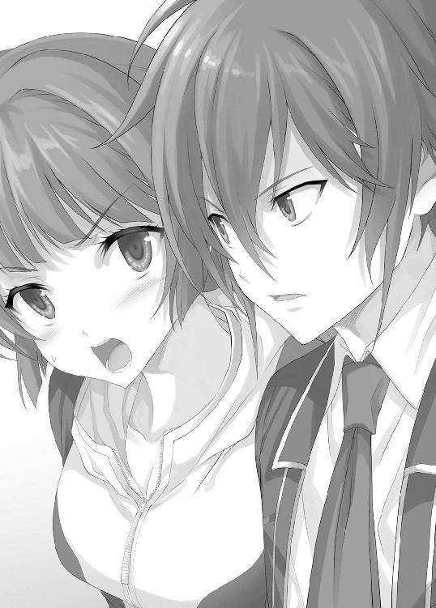
「割り算は？」
「できるって！」
「分数の掛け算・割り算は？」
「できるよ！」
よかった。それは最後の一線だった。
掛け算さえできれば、問題ない。
「だったら、ギリギリだな。これからお前に数学の授業を行う。何とか、理解するように」
第七章 演技派演技派
０
友ある者は、敗残者ではない。
何故なら、敗残者は友を失うことになるから。
１
ゲーム会場は、本当に山頂にあった。
鉄山への授業が終わってから一時間ほどで、俺達は山の頂上に到着した。頂上の開けた場所には、透明なガラスのような素材でできた立方体が設置されていた。その中では、ディーラーと思しき人物がプレイヤーを待っていた。その立方体のそばでは、二人の少女が腰を下ろしている。
片方は眼鏡をした賢いお子様といった感じで、もう片方はおっとりとした弱々しい雰囲気を持っていた。チーム【双子】という割りには、全然似ていない。
「あれがサトウ＆スズキだよ」
「あ～、あれか」
その姿を確認すると同時に、俺は二人組に駆け寄り、情け容赦なく至近距離でボールを投げつけた。ボールが眼鏡の少女の顔面に当たると「むふぁっ」という短い悲鳴を上げた後、その少女は俺を睨みつけた。
二人は、トランシーバーで連絡を取っていたせいか、あまり驚いてはいないようだった。
「何するの......」
「お前、どっちだ？ サトウ？ それともスズキ？」
「......スズキ。あっちがサトウ」
「そうか。ま、どっちでもいい。ゲームの始まりだ。さっさと立って会場に移動しろ」
「おざなりだー」
スズキは立ち上がると、俺の後ろにいた鉄山を見た。
すると、即座に鉄山の前まで行き、腰を低くして鉄山に話しかけた。
「やや、そこにおわしますは、鉄山徹子大先輩じゃないですか！」
「大先輩？ 私達に共通点はないと思うけど」
「いえいえ、そんなことはありません。その卓越した演技力は、芸能人であれば一度はあこがれるもの。実際、サトウ＆スズキも鉄山大先輩の演技を見て感動して、役者としても活躍できるように頑張っているのですよ」
「そうなの？ 知らないけど」
「そうなのです。まだ駆け出しですからご存じないのも無理はありませんが、いつか共演できたらいいなぁ、なんて思っているんですよ」
「それは難しいと思うよ」
鉄山はそう言うと、スズキから離れた。トランシーバーを通してここまで呼び出しておきながら、その対応はあまりにそっけない。
「随分と適当な対応だな」
「いや、だってあの子、演技臭さしかないし。私のこと、絶対に尊敬していないよ」
「へぇ。ということは、あれは全部お世辞か」
「うん、全部お世辞。いや、私の演技力の高さについては事実ではあるんだけど、むしろ事実でしかないのだけど、敬意はもっていないね」
コイツ、自己評価高いな。もっとも、芸能人なんて他人より演技力や容姿や歌唱力に自信がある人間がなるものなのだから、当然といえば当然か。
「ああ、そう。まぁ、それはどうでもいい。ゲーム開始だ」
俺は立方体に向かいながら、二人組に声をかける。
「ササキ＆ゴトウだったっけ？ お前達もさっさと会場に入れ」
「サトウ＆スズキだよ！ というか、呼び出しておいてその態度!? 新井さんも鉄山大先輩も冷たくないですか!?」
「そんなことはない。これが適切な距離感というものだ。それよりもゲームが始まるんだからさっさと会場に入れ」
『いや、そういうのはディーラーの権限だからね』
デバイスから、ディーラーの声が聞こえてきた。見てみると、立方体の中にいるディーラーがタブレットを操作しながらこちらを見ていた。そのディーラーは立方体の中から出てきて、俺達に話しかけた。
「私の名前は『Ｚ』。近くにいるから直接言っちゃうけど、四人とも入ってきてくれるかな？ これから、この幻影島サバイバルゲームで最もレートが高くなりうるゲームが始まるよ」
２
指示通り、俺達はゲーム会場となる立方体の中に入った。やはり、中央にモニターのついたテーブルが設置されている。もしかしたら、全部同じ仕様なのかもしれない。そのほうが単価が抑えられる。
「さて、知ってのとおり、この幻影島サバイバルゲームにおいては、標高が高い場所にあるゲームほどレートが高い。そして、ここは山のてっぺんだ。つまり、ここが最も高いレートで行われるゲームの会場ということになる。勿論、限度額のないアンリミテッドゲームだ。場合によっては、持ち込んだ一千万を使いきり、更に借金まで負うことになるかもしれない。そんなハイリスクハイリターンなゲームによく来てくれた！」
ディーラーは、謎のポーズを決めながら言った。
対する俺達は、ディーラーを冷ややかな目で見ていた。
ディーラーは「やっぱり無理があった」と一言こぼしてから、コホンと軽い咳をし、先ほどまでのテンションがまるで嘘だったかのように落ち着いた口調で語り始めた。
「皆様にやっていただくのは、丁半賭博です。まず、ルールの説明ですが、基本的なルールは普通の丁半賭博と変わりません。ツボに入ったサイコロの目を予想するだけです。しかし、幻影島サバイバルゲーム独特の内容もございますので、これから表示するルールを熟読してゲームに備えていただきますよう、よろしくお願いします』
ディーラーがそう言うと、テーブルの上にルールが表示された。タブレットにも同じ内容のものが入っていたため、俺は既に読んでいるし、ここで待っていたサトウ＆スズキも目を通しているだろう。鉄山についても、このゲームに隠された必勝法の説明をする際に、一通りのルールは説明してある。
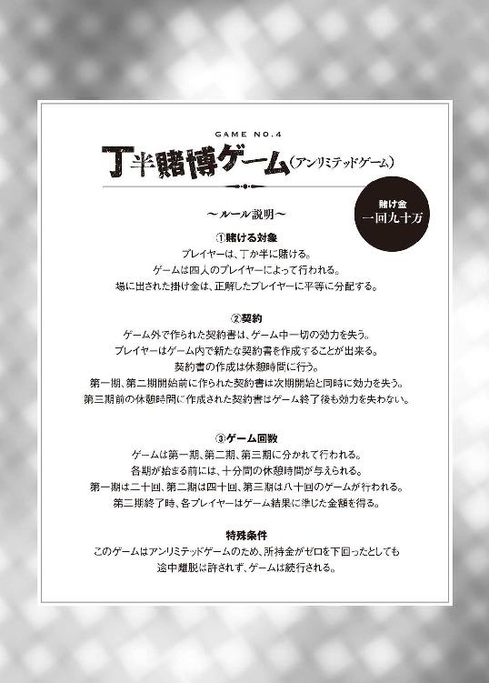
「第一期のゲーム回数は、二十回です。プレイヤーは今から十分間以内に席についてください。また、それぞれのペアで相談するための個室も用意してあります。契約書を使用される場合は、私に提出いただいても構いませんし、個室内にもそれぞれ一人ずつディーラーを用意しましたので、そちらに提出していただいても構いません」
俺と鉄山は、テーブルから離れて、個室へと向かった。
このゲームの必勝法。それを実行に移すための契約書を提出するためだ。
「でも、新井君。この作戦って別に契約書はいらないよね？」
「......お前が裏切らなければな」
「信用ないなぁ。新井君が損をする時は、多分私も損をすることになるんだから、少しくらい信用してくれてもいいんじゃない？」
「ほんの少しでも信用したら、お前は即座に付け込もうとするだろ？ 前科があるんだから。大人しく従え」
「はいはい」
いい加減な対応をする鉄山を無視し、俺は契約書を提出する。
これで、必勝法は実行に移された。少なくとも第一期において、サトウ＆スズキが俺達と同じ作戦を取らない限り、俺と鉄山が損をすることはほぼ百％ありえない。
３
十分後。俺と鉄山は必勝法の準備を終え、テーブルへと戻った。
サトウ＆スズキには、これといって特別な作戦を立てた様子はない。この様子なら、第一期で二人が俺達と同じ作戦を使うことはないだろう。
「それでは、プレイヤーが揃ったのでゲームを始めさせていただきます。大体の流れを説明いたします。まず、私がツボを振らせていただきます。皆様には、サイコロの目の合計が奇数か偶数かを当てていただきます。偶数が丁、奇数が半ですので、お間違えのないよう、お願いいたします」
司会者はサイコロをツボの中にいれ、入念に振った後、テーブルの上にたたきつけた。
ツボの中がどうなっているのかは、外からはどうやっても見られそうにない。ということは、これは単純に確率二分の一の賭けなのだろう。やはり、俺が考え出した必勝法は、完全に実行に移すことができる。
敵を地獄の底まで落とす。
そのための作戦の第一段階が今始まったのだ。
「それでは、丁か半か」
Ｚが言う。
「半」
俺が最初に答える。
「あ、申し訳ありません。丁か半かはタブレットを使って宣言してください。これによって点数の移動が自動的に行われることになります。また、テーブルの中央に賭けの結果が表示されるようになっていますので、そちらをご確認ください」
「......分かった」
何だか釈然としないが、とにかく方法は分かった。
タブレットにいつの間にか追加されていた『丁半賭博』という項目を選択すると、『丁』という文字と『半』という文字が表示され、どちらかを選択する画面が現れた。俺は宣言したとおり、『半』を選択する。すると、テーブル上のモニターに表示されている新井和馬という文字の色が反転した。
俺が選択してから数秒後には、四人全員のプレイヤー名の色が反転した。
「出揃いました」
ディーラーはそう言ってツボを上げる。
結果は、３・４の半。
新井 半 百八十万
鉄山 丁 ゼロ
サトウ 丁 セロ
スズキ 半 百八十万
場には三百六十万が出ているから、これを俺とスズキが二人で分け、それぞれ百八十万を得た。元々、掛け金として九十万を出していたのだから、俺は九十万分の利益を得たことになる。
「金額が振り分けられました。それでは、二ゲーム目を始めます」
４
丁半賭博の第一期は、淡々と進んでいった。
サトウ＆スズキにも、あまり焦った様子は見られず、時折相談をしながら丁か半かを選んでいった。一方、俺と鉄山はというと、終始無言でゲームに臨んでいた。最早、俺達の間に会話はいらないのだ。
そして第一期、全二十回が終了した。
Ｚは、中央に設置されたモニターを操作しながら、進行を続けた。
「これで、第一期が終了いたしました。それでは、ここまでの結果を発表します」
緊張の一瞬――とでも、テレビ番組ならテロップでも入るのだろうが、生憎俺は全く緊張していなかった。すでにこのゲームにおける必勝法は実行された。これから発表されるのは、俺と鉄山が大勝したという結果だ。
サトウ＆スズキは、緊張した面持ちで結果発表を待っている。
鉄山も同様に、表情や態度だけは緊張したふりをしている。
だが、これは演技だ。敵を騙して殺しつくすための演技。
「それじゃあ、オープン！」
司会者の言葉にあわせ、中央のモニターには第一期の結果が現れた。
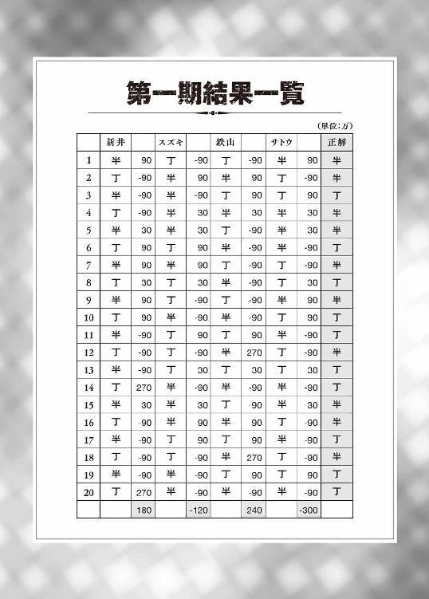
予定通り、俺と鉄山の圧勝だ。
二人合わせて、プラス四百二十万。
「プレイヤーには十分間の休憩時間が与えられます。これまでに作られた契約書は無効となりますので、必要があれば新しいものを作ってください。なお、次の第二期のゲーム回数は、四十回です」
サトウ＆スズキは、隠し切れない不安を顔に出していた。
何せ、丁半賭博という運だけがものをいうと思えるようなギャンブルで、四百二十万も失ってしまったのだ。運が悪かっただけだと思い込みたいのだろうが、もしそうでなかった場合、第二期・第三期で取り返しがつかないことになる。
そう考えると、自分たちが鉄山の巧みな誘導でここまで引きずり出されたのだということに気がつくだろう。そうなれば、自分たちが嵌められているのではないかという疑問は、確信へと変わる。
そんな二人の状態を確認した後、俺と鉄山は再び個室へと向かった。
サトウ＆スズキに慈悲を与える気は、俺も鉄山も欠片ほども持っていなかった。
「いや、本当に上手くいっているね」
「作戦通りだ」
「それで、新井君。持っているレート十倍はいつ使うの？」
「第三期が始まる直前だ。各期が終わるとアイテムの効力が切れるから、賭けの回数が最も多い第三期で使うのが一番いいだろう」
「そうだね。それだけで大儲けだ。いや～、新井君を連れてきて本当に正解だったよ」
「俺はまだ、何か裏があるんじゃないか疑っているけどな」
「いい加減、私のことを信じてくれてもいいんじゃないの？」
「お前を信じるということだけはありえない」
「ああ、そう。別にいいけどね。ここまででかなり儲けさせてもらったから、実際新井君には感謝しているよ。その性格の悪さを最大限に生かせる場所なら、新井君はこうもどす黒く輝けるんだね。夜空に輝く一等星。ただし、届いているのは昔の光で、実物は既にブラックホール状態、とでもいった感じかな」
「上手いことを言ったつもりか？」
「もっとも、もうそんな機会は二度とこないだろうけれど」
鉄山は興味なさげに言った。
事前に作った契約書を提出すると、鉄山はすぐに個室から出て行った。
外では、サトウが俺達を待ち構えていた。両手を強く握り、震えながら彼女は懇願する。
「鉄山さん、新井さん。どうか、私達を見逃してください」
「どういうこと？」
「鉄山さんと新井さんがやっていることを考えれば、何か作戦があるのは分かります。でも、その作戦が何なのかは分からないんです。だから、お願いします。どうか、私達を助けてください！」
あどけなさの残るその顔は、今にも泣き出しそうだった。
それを見た鉄山は、無表情のままサトウの前にしゃがんだ。
「もしかして、これ以上お金を取らないでほしいってことかな？」
「はい、そうです」
「ゴメンね、それは無理なんだ」
「どう......して、ですか？」
「だって、これはゲームだよ。貴女たちだって覚悟してゲームに参加したんでしょ？」
「でも、ここまで酷いなんて......」
「気持ちは分かるよ。でぇも、ダ～メ」
鉄山はサトウの体でカメラの死角をつくり、そこで囁くように小声で言った。
きっと、そばにいた俺とサトウにしか聞こえていない。俺だってかすかに聞こえた声と口の動きを見ていなかったら、何と言ったか分からなかっただろう。
サトウはふらふらした足取りでスズキのもとへと向かう。
そして、絶望にまみれた声で謝罪の言葉を呟く。
「ゴメン。もう、どうすればいいのか分からない」
スズキはそんなサトウの肩に手を添え、ただ隣にいた。
見る人が見れば美しい友情にも見えるのだろう。でも、俺にはただの演技にしか見えなかった。
５
第二期は、悲惨なものだった。
勿論、サトウ＆スズキにとっての話だ。二人は希望を捨てずにゲームに挑んでくるが、どうやっても少しずつ収支の差が開いてしまう。ゲームが進むにつれ、二人の士気は下がり続け、今では二人とも俯いてしまっている。
ちなみに、第二期が終わり、収支は次のようになっていた。
新井 プラス 五百四十万
スズキ マイナス 八百万
鉄山 プラス 七百八十万
サトウ マイナス 五百二十万
俺と鉄山の圧勝だ。
このまま何の手も打たずにゲームが進めば、この差は更に開く。
だが、手は抜かない。俺はこの時のために、最初にボーナスゲームに参加して、あるアイテムを手に入れておいたのだ。
「レート十倍、使うぞ？」
鉄山の回答を待つことなく、俺はタブレットを操作してレート十倍を使用した。
すると、ゲーム会場が赤いライトで染められ、緊急事態を知らせる音声が流れた。
『レート十倍のアイテムカードが使われました。
レート十倍のアイテムカードが使われました』
この言葉に、サトウ＆スズキは驚愕の表情を見せる。
これが何を意味するかということくらい、小学生でも十分に理解できる。
スズキは俺達を見据える。その目には、確かな敵意がこもっていた。
「お二人は本当に悪魔のような人ですね」
「恨むなら、新井君を恨んでね。これまでのことは全部新井君のアイデアなんだから」
鉄山は平然としている。
サトウは何もできず、俯いたままだった。確かに、サトウにしてみれば絶望的な状況だろう。現時点で、何故自分が負けているのかも分からず、このままでは小学生の身ながら凄まじい金額の借金を負わされてしまう。しかも、レート十倍のアイテムを使用したことで、その債務は想像していたものよりも、更に比べ物にならないほどに大きくなってしまうのだ。
そんな絶望的な状況で、虚勢を張れる人間なんてそうはいまい。しかも、サトウはアイドル兼役者だとしても、所詮はただの子どもだ。このような状況下においては、気の抜けた態度になるのは当然のことだ。
だが――。
だが、スズキは違った。
スズキだけは、その目に光を灯しながら、まっすぐに俺と鉄山を見据えていた。
「恨みませんよ」
スズキが、明るい声で言う。
虚勢ではない。心の底から希望に満ち溢れた声だ。
そして、これから他人を陥れようという嗜虐的な声でもあった。
「だって、私達負けませんから」
「え？」
「要するに、鉄山さんと新井さんは、丁と半、同じものに賭けないようにすることで、多数派にならないように立ち回ったということですよね？」
スズキが真相を直球で言ってのけた。
その言葉を聞き、鉄山が青ざめる。
「全部分かっちゃってるんですよ、私は」
「な、何を......」
「鉄山さん、貴女たちがやったことは、全て期待値で説明できます。貴女と新井さんは絶対に同じほうに賭けない。鉄山さんが丁なら、新井さんは半。鉄山さんが半なら、新井さんは丁。お二人はそういう賭け方をしているんです」
その通りだ。俺達が使った作戦は単純そのもの。お互いに、逆の掛け方をする。ただそれだけのことだった。
「問題は、そうすることで何が起きるのか、ということです。もしも、丁と半がそれぞれ二人ずついた場合は、結果が丁であろうと半であろうと、チームの所持金合計額に変動はありません。外れて失う金額と当たって得る金額が一緒なのだから当たり前です。問題は、人数がばらけた場合です」
スズキは続ける。
「人数が一人と三人になった場合を考えてみましょう。鉄山さんと新井さんは必ず相手の逆に賭けることになるため、私たちがこの一人のほうになることはありえません。そして、この一人こそがこの丁半賭博において最大限のメリットを手に入れることができる人物なのです。何故なら、正解した場合は二百七十万を得ることができ、不正解だった場合も失う金額は九十万だけ。貴女たちはこの立場を独占しようとした」
鉄山は多少うろたえたが、やはり持ち直す。
長年、表舞台で培った柔軟性と冷静な思考力がそうさせるのだろう。
「簡単に言えばそういうことね。少し数学的な話になるけど、この方法を使った場合のチームの合計額の期待値は、一回ごとにプラス三十万ということになるわ。つまり、二十回やれば三十万×二十で六百万前後のプラスが期待できる。これが、第一期で起きたことなの。ちなみに、第二期では三十万×四十で千二百万程度が期待できたし、実際にその程度になったね」
この補足は、余裕の表れだ――と、演じる鉄山は主張する。
だが、俺が提案した作戦が、相手に見破られている。その事実が、鉄山を動揺させていた。通常であれば、ただ見抜かれただけだと考えるだろう。だが、鉄山がペアを組んでいる相手は、この俺だ。そして、その俺が考えた作戦が、既に見破られていたというのだ。何かあると嫌でも考えてしまったのだろう。
「このまま第三期が続けば、その倍の二千四百万程度、レートが十倍になりましたから二億四千万程度が期待できるわけですが、そうは問屋がおろしません。これから、私達が反撃させてもらいます」
「む、無理よ。だって、もう私達は契約書を提出したわ。私と新井君は逆の賭け方をする。貴女たちが同じことをしたって、チームの合計額は変わらない。レート十倍を使う前に気づかれてしまったことは痛かったけれど、十分すぎるほどに儲けさせてもらったわ」
鉄山は同意を求めるように俺を見る。
俺はそれに応えるべく、鉄山の前に出てスズキの正面に立った。
「大金を失ったお前はどうなるんだろうなぁ？ 事務所が保証人になっている以上、ここでの大敗はお前の所属する芸能事務所にとって大きな負担となる。そうなれば、悪影響を受けるのはお前だけじゃない。お前の事務所に所属する芸能人たちの活動も大きく制限されることになるよなぁ！ そんなことになったら、今まで仲間だと思っていた奴らから恨まれ蔑まれることになる！ そう、電脳ランドでの出来事の後の俺のように！ いや、実害が残る以上、それ以上の屈辱と苦痛を味わうことになるだろう！ 死んだほうがマシだと何度も考えるような境遇に陥るだろう！ お前はもう死んだようなものだ。そして、俺が止めを刺す！」
俺は両手を上げ、高笑いをする。
そう、これこそが俺がゲーム開始直後から狙っていたものだ。
「お前はここで死ぬんだよ。そう――」
だから、言うことにしよう。
この取って置きのセリフを。
俺は高笑いをしながら胸をはり――、
重心を後ろに移し――、
そして、ブリッジの体勢になり、背後にいる鉄山に対して、宣言した！
「「お前がなぁああああアアアアアアアアアアアアアアアアアアアアアアアアアアアアアアアアアアアアアアアアアアアアアアアアあアアアアアアアアあああアアアアアアアアアアアアアアアアアアアアアアアアああアアアアあああアアアアアアアアアアアアアアアアアアアアアアアアアアアアアアアアアアアアアアアアアアアアアアアアアアアアア！」」
「え？」
俺とスズキによる二人同時の叫びに、鉄山が呆然とした表情を浮かべる。
そう、俺がこの悪意を向けた相手。
俺がずっと殺したいと思っていた敵。
破滅させるためにずっと準備をしていた敵。
それこそが鉄山徹子だ！
「スズキは、何が起きていたのかをずっと理解していたんだよ」
「そんなわけがない」
鉄山の眉がピクリと動く。少しずつ、奴の仮面が剥がれてきた。
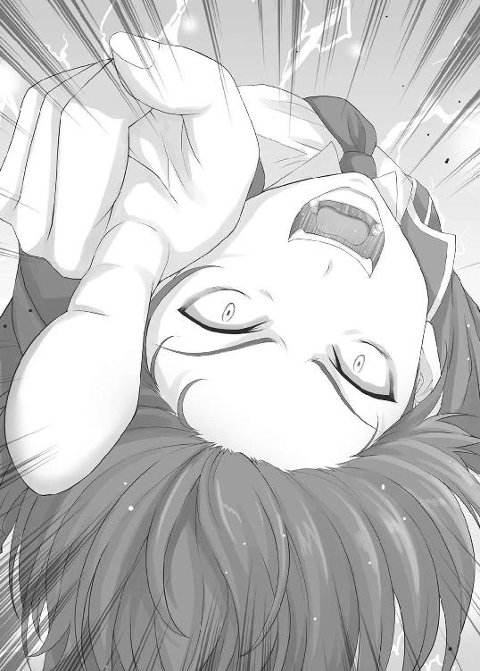
「だって、サトウ＆スズキは全然嘘をついている気配がなかった！ 何かを隠している様子もなかったし、心の底から怯えていたよ！」
「お前が相手をしていたのはサトウだけであって、スズキは違うだろ」
「え......」
「スズキはサトウを騙していたんだよ。『頂上で行われるゲームには必勝法があるけれど、いざやってみたらその必勝法は使えなかった』とスズキはサトウに伝えていた。だから、サトウは己の身の破滅を嘆き、心の底から怯えていたんだ。スズキは、その陰に隠れて、お前との接触を極力拒んだんだ。お前のその何でも見抜く『鉄山アイ』をごまかすためにな」
俺の言葉を聞き、ようやく鉄山は動揺らしい動揺を見せる。
だが、それ以上にうろたえていたのは、ここまでずっと騙されていたサトウだった。まだ自分が助かったことへの理解がいまいちできていないらしく、さっきからずっとスズキの服を引っ張って説明を求めている。
「そ、そんなはずない」
「まだ言うか」
「じゃ、じゃあ、何でこんなに負けたの？ 全部分かっていたなら、ここまで負ける必要はなかったじゃない！」
「既に理解していることに説明を求めるのか？」
「う......」
「だが、言ってやろう！ ノリノリで言ってやろう！ 勿論、お前を騙すためだよ！ 第三期でレート十倍を使い、お前を殺し尽くすためには、第二期まで利益を上げて調子に乗らせる必要があった。感謝しろよォ。お前の目を曇らせるために、大金を使ってやったんだ！ お前だけじゃない！ ナナシの権兵衛だってお前と同じ事務所だ！ 二人で一緒に地獄の底まで落ちるがいい！」
「え、でも、もう契約書は提出したし」
「だから、前提が違うんだよ！ あの契約書は、俺達が協力するために作ったものだとお前は思い込んでいるようだが、本当はお前の行動を制限するために作ったんだ」
「どういうこと？」
「これから、サトウとスズキの二人は丁・半の順番で賭ける。そう言えば分かるだろ？」
俺はこれ見よがしに新たな契約書を見せる。
この契約書にサトウとスズキの名前を書いて提出するだけで、鉄山の大損が決定するのだ。スズキは俺から契約書を受け取ると、即座に名前を書き入れた。サトウも、スズキが進めるがままに記名する。
そして、契約書は提出された。
これにより、鉄山・スズキ・サトウは大損をすることになるのだが、スズキとサトウだけは俺が救済する。つまり、鉄山だけを陥れることができるのだ。
「まさか――」
「お前は俺と契約したことで、丁・半の順番でしか賭けられなくなっている。だから、サトウとスズキに丁・半の順番で賭けさせれば、お前は多数派にしかなれなくなったんだよ！ そして、その場合のお前の期待値は、マイナス二千四百万！ 一期・二期でのプラスを帳消しにしたうえ、さらに負債までつく！」
「そ、そんなに......」
鉄山の声が震える。だが、これでは終わらない。俺の復讐がマイナス二千四百万だなんて中途半端な金額で終わっていいはずがないのだ。
「と言いたいところだが、鉄山、何か忘れてないかぁ？」
「え？」
「俺は今、レート十倍のアイテムを使用した。つまり、お前の期待値は十倍にはね上がり、お前はこれから、二億四千万円を失うことになる！」
鉄山は打ちひしがれる。
ようやく、これで自らの敗北を理解し始めたらしい。
「いつ打ち合わせなんてしたの？」
「貴女が一人でゲームをやっている間ですよ。私はずっとこのトランシーバーで新井さんと連絡を取り合っていたんです。鉄山さんが出たときは、サトウに対応させていましたけどね。貴女が『モンティホールもどき』で悩んでいる間や『話し合いゲーム』で新井さんが待っていた時間は全て打ち合わせに使わせてもらいました」
スズキが胸を張る。
そう。話し合いゲームの際、俺は敵を討ち滅ぼすための二つの策を用意していた。つまり、チーム【倫理】とチーム【ラブ】を騙す作戦を考えると同時に、鉄山徹子を陥れるための作戦を練り上げていたのだ。そして、鉄山が置いていったトランシーバーでその内容をスズキに伝えた。
「残念ながら、私達の演技力では逆立ちをしても鉄山さんを騙すことはできないでしょう。だから、サトウというスケープゴートを作らせてもらいました。もっとも、この作戦を成立させる上で最も重要だったのは、私の頭の回転の速さでしょうけどね」
「......は？」
「鉄山さん、貴女は新井さんに教えられた作戦を理解するのに、どれだけの時間をかけましたか？ 十分？ それとも、二十分？」
二時間だ。
本当に、説明するのに苦労した。
「ちなみに、私は全てを五分で理解しました。体は子ども、頭脳は大人のキャッチフレーズでお馴染みの私にしてみれば、この程度はたやすいことです。私の眼鏡ホリックキャラは伊達ではないのです」
「そんなキャッチフレーズあったの!?」
眼鏡に中指で触れるスズキに対し、サトウが突っ込みを入れる。
「サトウ、事態は刻一刻と変化していくのよ」
「そんなことを言われても......」
「最初に行われた『仲間はずれ』のゲームでも、新井さんの行動を見た私は、瞬時にその意図に気づきました。だから、新井さんたちに協力的だったんですよ。私は新井さんのことを妄信しているわけでも信用しているわけでもありません。ただ、新井さんの作戦を機械的に理解しただけです」
スズキの言葉を聞き、鉄山は崩れ落ちる。
だが、同情はしない。
電脳ランドでは俺を容赦なく騙してくれたし、何よりもこれが鉄山徹子の演技だという可能性を否定することができない。
「新井君......」
「断る」
「電脳ランドのことは、謝るから」
「どうせ今だけの演技だろ」
「それじゃあ、新井君の友達になってあげる！」
「どうせ今だけの演技だろ」
「私がいれば、新井君に友達を作ることも可能だよ！」
「どうせ今だけの演技だろ」
「じゃあ――」
「どうせ！ 今だけの！ 演技！ だろ！」
俺の態度に、鉄山は絶句する。
だが、これでは終わらない。これ以降は、鉄山から学び取った方法を使う。
負けの確定した相手に微かな希望を与えた上で、更にどん底につきおとすのだ。
「あれれ～、おっかしいぞ～」
「ど、どうしたの、スズキ？」
「逆転する手段があるのに、鉄山さんはどうして気づかないのかな～？」
「え？」
「新井さんの作戦は、鉄山さんを常に多数派にするということですよ。そして、それには私達サトウ＆スズキ、いえ、スズキ＆サトウの協力が必要」
「どうして順番をひっくり返したの!?」
「私のおかげですっごく儲かるんだから、そんな小さなことを気にしては駄目だよ」
「気にしたのはスズキだよね!? わざわざ言い直したのはスズキだよねぇ?!」
「話がそれましたが――」
「無視!?」
「とにかく、現時点ではまだ契約書は作成されていません。だから、私たちが鉄山さんの味方をすることになれば、鉄山さんは助かり、新井さんが破滅することになります」
スズキは自慢げに言う。
最早、そこには先輩後輩などという関係は存在しない。
鉄山は、おそるおそる尋ねる。
「それじゃあ、私は何をすれば......」
「どうもこうもありません。ただお願いすればいいんですよ」
スズキは笑顔で答える。その笑顔が何を意図したものであるのか、鉄山なら瞬時に判断できただろう。何せ、電脳ランドの最初のゲームで鉄山がしていた表情と瓜二つなのだ。九十九％、いや、もう百％罠だと考えるのが当然だ。
だが、人は縋らずにはいられない。
それが、天より垂らされた、地獄の住人をあざ笑うための糸だと知っていても、そこに希望という虚像を見る限り、人はその糸を手繰り寄せようとする。
鉄山もその一人だったようで、ふるえる声でスズキに声をかける。
「あの――」
「だが、断る！」
願いを言う暇も与えない拒絶。
それを聞いた鉄山の絶望しきった顔を見たら、お釈迦様でも大爆笑するだろう。
スズキとかいう女、俺と同じくらいいい性格をしているのかもしれない。
「ああ、これが言ってみたかっただけですから、期待しないで下さいね。それと、私のことを恨むのも止めてもらえると嬉しいです。全部新井さんのアイデアですから」
「あ......」
鉄山がこちらに視線を向ける。
ついさっき、自分がやったことをそのまま返されたのだ。さぞかし絶望していることだろう。
「というわけで、鉄山徹子さん。演技に関する天才的な才能の持ち主で、私達若手の憧れであり目の上のたんこぶでもある鉄山徹子さん。これから、私の嫌いな貴女の全てを片っ端からノリノリで殺させていただくことになります。それでは、始めましょうか――」
スズキは満面の笑みを浮かべ、鉄山に最終宣告を行う。
「世代交代の時間です」
６
第三期終了直前になると、俺は契約どおり、サトウとスズキにそれぞれ三億二千万ずつを譲渡した。これは、作戦を実行する上での必要経費。第三期における俺、スズキ、サトウの収支を揃えるためのものだ。
第三期が終わると、鉄山は過呼吸を起こして倒れた。
鉄山の所持金がマイナスになったままゲームが終了したので、チーム【クズ】はこの時点で失格となるのだから問題はない。
新井和馬
所持金 七千三百二十万
鉄山徹子
所持金 マイナス一億九千六百八十万
第八章 演技派凡人
１
鉄山が失格になった後、俺は一人で山を下りた。
失格になった以上、船に戻っていなければいけないらしく、即座に船に戻るように「Ｚ」に言われたのだ。こんな自然しかない島よりも船内の方が快適だから、俺は素直にその指示に従ったのだ。
船室は、今度は内側からも鍵がかかるようになっていた。
この島に来たときは、外側からしか鍵がかからなかったが、ドアノブにかぶせ物をしていただけらしい。俺は部屋に鍵をかけると、ベッドで横になった。海外に初めて来たと思ったら山に登った上で神経を使うゲームをさせられて、疲労の限界だったのだ。
俺はいつの間にか、そのまま眠ってしまっていた。
２
『やぁ、新井君。聞こえているかい？』
トランシーバーから聞こえる声で、俺は目を覚ました。
トランシーバーはサトウ＆スズキが持っているはずだが、その二人のいずれでもない声だ。でも、この声、どこかで聞いたことがあるような気がする。
「誰だ？」
『武田ツバサだよ。もう忘れちゃったかな？』
「......お前はストーカーか何かなのか？」
『そんなところかもね』
「何故このトランシーバーと通信できているんだ？ サトウ＆スズキはどうした？」
『譲り受けたんだよ。あの二人の優勝はもう決定したようなものだから、後は全部消化試合のようなものだとでも思っているんだろうね。でも、そんなことはどうでもいいんだ。僕は君に忠告しておいてあげようと思ったんだよ』
「どういうことだ？」
『君は大きな勘違いをしている。君は、この幻影島サバイバルゲームにおいて、最も多くの金を稼ぐことができたのは、君自身だと思っているんじゃないのかい？ 実はそうじゃないんだよ。それどころか、トップに比べれば君の利益なんてものは微々たるものだ』
もしかしたら、サトウ＆スズキがあのあと大金を稼いでいたのかもしれないが、いくらなんでも、七千三百二十万を微々たる金額といえるほど稼ぐことは不可能だろう。この金は、幻影島の頂上で行われた最もレートの高いゲームを行ったことで手に入れることが出来たのだ。
「どういうことだ？」
『それを確かめたいのであれば、今すぐ船のロビーに来てくれ。もうすぐ結果発表が始まる。僕はそこで待っているよ』
時計を見ると、いつの間にかゲーム開始から大体十五時間が経過していた。つまり、ゲームが終了してから三時間が経過していることになる。島中に散らばったプレイヤーが船に戻ってくるための時間が必要だから、結果発表が行われるのはゲーム終了から三時間経過後ということになっていたので、武田の言うとおり、もう少しで結果発表が行われるはずだ。
少しずつ頭が働くようになってきて、俺は武田とのやり取りを思い出す。
トップに比べれば俺の利益が微々たるものでしかない？
まさか、これまでのゲームが全て電脳ランドでの出来事だとでもいうのか？
俺はタブレットを操作し、残金を確認する。そこには、しっかりと七千三百二十万という数字が表示されていた。やはり、今までの出来事は全て現実だ。俺は大金を得て、鉄山は大量の負債を負った。
では、どういうことだ？ いや、考えても仕方が無い。武田の言葉に乗るのは気に入らないが、とりあえず結果発表には参加することにしよう。
俺は部屋のドアを開け、ロビーへと向かおうとした。
だが、ふと後ろ髪を引かれるような気がして、部屋を見回した。
そう言えば、鉄山はどうしたのだろうか？ 荷物はまだ部屋に残っているようだが、過呼吸を起こしたといっても何時間も症状が続くわけではないはずだ。既に症状も収まり、回復してはいるのだろうが――。
３
既に大半のプレイヤーが集まっているようで、ロビーは人で溢れかえっていた。
ロビーに向かった俺を出迎えたのは、予想通り武田だった。
「よかった、来てくれたんだね」
「一応な。それじゃあ、さっさと説明をしてくれ。俺の得た金額がトップに比べて微々たるものというのは、どういう意味だ？」
「それはそのうち分かるよ。それよりも、結果発表が始まる。とりあえず、大人しく見ておこうじゃないか」
武田が視線を移した先では、女性が原稿を持ってマイクの前に立っていた。
『皆様、大変長らくお待たせしました。これより、幻影島サバイバルゲームの結果発表と閉会式を執り行います。それでは、まず ツキヨ制作会社社長鴉川より、結果を発表させていただきます』
鴉川が壇上に立つ。
その様子をプレイヤー達は黙って見守っていた。
『さて、これまでの長時間に及ぶゲーム、まことにご苦労だった。それでは、結果発表をさせてもらう』
そう言い、鴉川は内ポケットから一枚の紙を取り出した。
『第三位。チーム【成金】。二人合わせた所持金は、六千八百万』
会場から歓声が上がる。チーム【成金】は、ゲーム開始時、最初に船から出て行ったチームだ。つまり、最初の時点で最も所持金が多かったチームの一つということになる。上位に組み込むのは当然だ。
『第二位。チーム【警察】。二人合わせた所持金は、七千二百万』
いや、警察が賭博に参加するなよ。
そう心の中で突っ込みを入れたが、どうせ警察ドラマの出演者なのだろう。
『そして、第一位。チーム【双子】。二人合わせた所持金は、一億九千六百六十万。なお、チーム【双子】には賞金として一千万円が与えられる』
会場がどよめく。
第一位と第二位との間に、これほどの差が出るとは思ってなかったのだろう。
だが、これでハッキリした。トップはチーム【双子】の二人だ。確かに、俺よりも獲得金額は大きいが、七千三百二十万を微々たる金額と言えるほどではない。ということは、武田ツバサの発言は――。
「ハッタリだったんだな？」
「どう捉えるかは新井君の自由だよ」
悪びれる様子も無く、武田は答えた。
その表情には、まだ余裕が感じられる。
その余裕を裏付けるように、鴉川は壇上で次の言葉を発した。
『ただし、これは失格になっていないチームの合計額の一位であり、失格になったチームの中にはもっと多くの金を稼いだ者がいる。それについても発表させてもらおう。チーム【倫理】の武田ツバサ。彼は――違った、彼女はペアの相手の所持金がマイナスになったため、ゲームの途中で失格となった。だが、最終的な所持金は断トツのトップ。その額――七億八千五百万！』
七億八千五百万!?
一体どうやって――いや、方法はある。
「新井君と同じことをしただけだよ。レート十倍のアイテムを手に入れた後、丁半賭博で相手と組んだんだ。やり方は妙に嬉しそうだったサトウ＆スズキに聞いたんだけれど、やっぱりよく分からない作戦をよく分からないまま使うのはよくないね。ゲームが終わる前に真田姉さんにお金を返さなければならないことに気づかなかったせいで、勢いあまって失格になっちゃったよ。いや、そこはやっぱりスズキの策略だったのかもしれないね。素直に君の作戦を教えてくれたふりをしながら、やはり自分の優勝を譲ってくれる気は最初からなかったんだろう。そこさえ失敗しなければ、いまごろ僕が優勝していたのだけれど」
確かに、最後に金を分配しなければ武田が現在所有している金額を稼ぐことはできる。
だが、それには大きな障害があるはずなのだ。
「お前、俺と同じ作戦をとったんだよな？」
「そうだよ？」
「だったら、相手チームはどうしたんだ？ この作戦を実行に移すには、相手チームの協力が必要だ。でも、お前は相手チームに何の利益も与えていないだろう。それどころか、獲得金額から考えると、相手チームはお前に大きな負債を負わされたことになる」
「うん、そうだね？」
「相手のチームは何故そんな作戦に乗ったんだ？」
「それは僕という人間の性質によるところだというほかないね。特別な作戦を使わなくても、人は僕に簡単に騙されてくれる。何度も僕に会ったことのある真田姉さんでさえ、簡単に騙されてくれた。僕のことを最初から疑ってかかる人なんて、君くらいのものだよ。いや、君のパートナーの鉄山さんもかな」
「......とてもチーム【倫理】の人間が言う言葉とは思えないな」
「そうかもしれないね。でも、相手チームはともかく、真田姉さんはテレビという公共の電波で、己の価値観のみに従ったおかしな理論を日本中に日々ばら撒いていた大罪人だと僕は思っているよ。それに、事あるたびに僕をひっぱりだそうとするのは迷惑以外の何物でもなかった。もっとも、今回新井君に会う機会をえられたことにだけは感謝しているけどね」
「ああ、そうかい」
「君は僕のライバルになれる。レッドとグリーンのような素敵なライバル関係にね」
「今度は初代ポケモンか」
統一感が無いにも程がある。
「分かってくれるんだね。君とはやはり話が合うようだ。君は僕のライバルとして、僕の人生を盛り上げ、僕という人間を高めるために生まれてきたんだ。君には、僕の物語の登場人物となる権利がある」
「お前、自分以外の人間をＮＰＣだとでも思っているんじゃないのか？」
「そうだよ」
「は？」
「僕は誰からも好かれ、誰に対しても大きな影響力を持つ。そういう星の下に生まれたんだ。だからなのかもしれないけれど、人は僕のことを『主人公』と呼ぶよ。確かに、僕の人生は主人公補正でもあるんじゃないかと思うくらいに順調だ。今日もこうして、ライバル候補にめぐり合うことができた」
駄目だコイツ。
もう、まともな神経が残っていない。
「武田ツバサ」
「何かな？」
「ここまでの話でようやくお前という人間の本性が分かりかけてきたよ」
「それは何よりだ。さぁ、新井君。答えを聞かせてくれ。僕と友達になってくれるよね？ 敵になってくれるよね？ ライバルになってくれるよね？」
「そんなわけないだろ。お前が主人公なら、俺は小悪党役だ。運動も勉強も芸術も何もかもが中途半端で、それでも諦めきれずに何かにすがる小者。それが俺だ。そんな俺でもな、主人公に見下されて劣等感を持ちながら生きるなんていう惨めな生き方だけは御免だ。お前達が快適に優越感を持って生きるための踏み台になんて死んでもなりたくない」
「そんなことは思っていないよ」
「思っていようと思っていまいと、俺にとってはこれが現実だ。お前がどれほど優しく俺に接しようと、俺はお前に劣等感を抱かずに触れ合うことはできない。だから、お前みたいな奴は片っ端から叩き潰してやりたいんだ。これが俺の短所だ。誇りを持った短所だ！ だから、その考え方すら喜んで許容し受け入れそうなお前は、俺の敵だ！」
「それじゃあ、誰が新井君の味方だというんだい？」
「そんなものいるわけないだろ」
「......ああ、そうだね」
とうとう、武田は俺に対して冷たい視線を向けた。
それは、俺に失望したからなのだろう。新井和馬という登場人物は、コイツの中では既に舞台を去った人間となった。主人公である自分を高める役目を放棄した俺は、廃棄処分されたというわけだ。
全く――ふざけるなよ、この同類が！
「ところで、武田ツバサ」
「何かな？」
「突然だけどな、お前、友達いないだろ」
「そんなことはないよ。友達なら沢山いる」
「その沢山の友達のことをお前は本当に友達だと思っているのか？ お前の主観で、そいつらは友達なのか？ 違うだろ！ お前にはそいつらがただの下らない人間としか思えないんだろ？」
「そんなことはないよ......」
武田の表情が一瞬曇る。その瞬間を俺は見逃さなかった。
「だが、安心していいぞ武田。お前は、自分の周りに集まる人間を下らない人間だと思っていいんだ。それは保証してやろう」
「一応、理由を聞かせてもらえるかな？」
「そいつらはお前のことが嫌いで嫌いで仕方がないからだよ。そいつらは、嫌々お前の側にいるんだ。今まで疑問に思ったことはないのか？ お前が友達だと思っている奴らは、本当にお前のことを友達だと思っているのかって」
武田は答えない。
「お前は人間離れした倫理観を持つ気持ちの悪い人間だ。そういう人間を相手に、お前が友達だと言った奴らは本当に友達としての対応をしてくれているのか？ 友情を少しでも感じることはできているのか？ 違うだろ！ 触らぬ神にたたりなし――そういう当たり障りのない対応をされていたんだろ！ 当たり前だよなぁ！ 真田のような教育評論家を標榜する異常者ばっかりに囲まれて、普通の友達なんて全然できないんだろ！ だから、今まで周りにいないタイプだった俺に友達になってほしいだなんて頭のおかしいことを言ったんだ！」
綺麗すぎる川に魚はすめない。
綺麗すぎる人間の周りは、どうしても居心地が悪くなる。
でも、それを理由に離れることは、普通の人間にはできない。何故なら、そんなことをしたら自分が醜く下等な生き物であることを認めることになるからだ。清廉潔白という誰も持っているはずがないのに誰もが持っているように振る舞う建前を自ら捨ててしまえば、それは集団からのドロップアウトを意味する。
それが嫌だから、武田のような人間の周りに集まるのだ。
誘蛾灯の周りに集まる虫のように。
だから――。
「だから、お前は気持ち悪いんだ。お前は他人を見下すことしかできない最低最悪の価値観を持ちながら、表面を徹底的に取り繕うことで清廉潔白を演じているだけの性格どブスの醜い人間。それがお前だ！ お前がちやほやされているのは、周りの人間がそれを見て見ぬふりをしているからに過ぎない！ だから――お前はただのクズなんだよ！ 俺のことを下に見ているようだが、お前は俺と変わらないただのクズだ」
だから、俺はコイツが嫌いなのだ。俺の醜い部分を鉄山のような演技で覆い隠し、のうのうと人気者を気取っているこの女が、消毒液に漬けられた汚物のようなこの女が、俺の人生を全否定するようなこの女が、俺は嫌いで嫌いで仕方がないのだ。
「もう二度と、俺に関わるな」
「......それが新井君の望みなのかい？」
「ああ、そうだ」
「だったら、仕方がない。君の望みはもうすぐ、叶えられるだろう。僕はその邪魔はしない。でも、気が変わったらなるべく早めに声をかけてね。主人公に関わらなくなった小悪党のその後がどうなるかくらい、見当はつくでしょ？」
「何だ、脅迫か？」
「忠告だよ。君は今、色々な人に狙われている。そうだね、例えば――鉄山徹子さんはどこに行ったのかな？」
４
閉会式は意外なほど何も起きずに終了した。
これだけの大金が動いたのだ。大金を得た者、失った者は多数いるはずだ。それなのに、あの会場には高揚感も悲壮感も見当たらなかった。芸能人や著名人というのは、やはり普通の人間とは感覚がずれているのかもしれない。
そんなことを考えながら、俺は船の上から景色を見ていた。
どこまでも続く海。既に幻影島は見えなくなってしまっている。
この幻影島サバイバルゲーム。途中で気持ちの悪い人間に接触することはあったが、利益のことを考えると参加したことは非常に有意義だったと思う。もっとも、俺を一番満足させているのは鉄山を破滅させてやったという事実だ。
二億を超える負債。
いくら芸能人といえども、簡単に返せる金額ではない。そんな負債を負い、更に保証人として事務所にも負担させた人間が、この先芸能界でまともに生きていけるとは思えない。
そんなことを考えながら、俺は暇な時間をゆったりと過ごしていた。
だが、そんな時間も突然打ち切られることになった。
突然、女性の叫び声が聞こえてきたのだ。
詳しい状況は分からないが、大金が動いた以上、どんな事件が起きても不思議はない。むしろ、起きるほうが自然だ。とにかくここは関わらないのが一番だろう。
俺は走って部屋に戻った。鉄山がどうしているのかは知らないが、事件に巻き込まれたところで俺の知ったことじゃない。自分の身の安全だけを最優先にするべきだ。
そう考えて、ドアに鍵をかけた瞬間――。
「やっぱり、そう来るんだね」
突然後ろから声がした。
振り向くと、そこにいたのは一人の女。
誰だ、コイツ？
見たことがあるようなないような......。
だが、そんなことは今問題ではない。最も重要なのは、今目の前にいる女が、その手に刃物を持っているということだ。
「ねぇ、新井君。殺人事件が起きたとき『殺人犯と一緒になんていられない。俺は部屋に戻らせたもらうぞ』っていうセリフは死亡フラグだけど、実際に行動としては正しいよね？ ただ、そういうことを言っちゃうと嫌われるし、実行すると孤立するけどね」
ここまで来て、俺は初めて気づく。
これは、鉄山徹子だ。仮面を脱ぎ捨て、憤怒の表情を全身で表している。
その姿を俺は、鉄山徹子として認識できなかった。
それほどまでに違った。
「でも、新井君なら孤立なんて気にしないよね。むしろ、孤立している自分が好きで、大した危機を感じなくても積極的に孤立しようとするよね。だから、きっと新井君なら、さっきの叫び声を聞いたら自分の部屋に閉じこもると思ったよ。ああ、それと、あの叫び声の出所は、サトウちゃんだよ。私にも新井君にもスズキにも騙されていた可哀想なサトウちゃん。それでは問題です。何故、サトウちゃんは叫び声を上げたでしょうか？」
俺は答えない。
「答えは、私が刃物で切りつけたからでしたぁ～！ 本当はスズキのほうもやっちゃいたかったんだけど、どこにもいなかったんだよね？ 誰か別の人の部屋にでもいるのかな？ でも、仕方が無いからとりあえず新井君を殺しておくことにするよ」
「お前、いいのか？ 俺ごときのために殺人を犯すだなんて、馬鹿馬鹿しいと思わないか？」
「私のことなら心配しなくても大丈夫だよ。貴方を殺して私も死ぬ、なんて馬鹿なことは言わないから。貴方の分まで私が生きてあげる。逮捕されたら、後悔と更生を完璧に演じきってみせるわ」
鉄山がゆっくりと俺に近づいてくる。
ナイフの先端を俺にむけ、いたぶるように不気味な笑みを浮かべながら近づいてくる。
だが、そんな状況下で、俺の脳裏に浮かんだのは、武田ツバサの姿だった。
ついさっき、俺は彼女を拒絶した。そのときに見た彼女の表情が、頭にこびりついて離れないのだ。ほんの少しだけ唇の端を上げた、無機質で作り物のような気持ちの悪い笑顔。悪意の塊で善意という文字を作り上げるような異質さ。そんな表情を浮かべたまま、彼女の口元がかすかに動き、俺に告げた言葉。
あの言葉が、呪いのように頭の中に響く。
『君の望みは、もうすぐ叶えられるだろう』
そうだよな。
俺が死ねば、もう二度と武田には関わらずに済む。
奴はそれを予見していた。だからこその、最後のセリフだ。
『僕はその邪魔はしない』
つまり、全て予想したうえで助けないということだ。
「新井君、最後に言っておきたいことはあるかな？」
「ああ、そうだな」
こうなったら、何を言っても鉄山は止まらないだろう。
ならば、俺ができることは捨てゼリフをはくことくらいしかない。
「お前の人生を台無しにできるなら、ここでお前に殺されるのも悪くない」
「......そう」
鉄山はそう言って、ナイフを俺の心臓めがけてつき立てた。
ナイフの位置から、俺のシャツに真っ赤な染みが広がる。
鉄山がナイフを引いたとき、俺はその場に立ち尽くしていた。
そして、数秒して俺は自分の状態に気づき、叫び声を上げた。
「なんじゃこりゃぁぁぁぁぁぁああああああ」
そんな俺に対し、鉄山は不気味な笑みを浮かべる。
そして、混乱する俺に対して言葉を投げつけた。
「ナイスリアクションだよ、新井君！」
「ちょっと待て！ これはどういうことだ！」
俺は混乱していた。
何故なら、俺の体には傷一つついておらず、痛みも全くなかったからだ。
「ああ、ちょっとこれ見てくれる？」
鉄山はナイフの先を指で押した。すると、ナイフの刃が柄の中に引っ込み、それと同時に赤い血糊が飛び出してきた。
「マジックナイフ？」
「そうだよ。やっぱり、私が本気で新井君を殺そうとしていると思ったのかな？ そう思わせるように全力で演技したから、そう思ってくれないと困るんだけど」
「それは......まぁ、そうだな」
あの状況で、鉄山の殺意を疑える人間はそうはいないだろう。
鉄山の演技には、それほどまでに鬼気迫るものがあった。
「お前、俺を恨んでいるんじゃないのか？」
「ああ、恨んでいるよ。よくも私をだましてお金を奪ってくれたね。はい、終わり」
「終わりって......。お前は大金を失ったんだろ！ 俺のせいで！ それなのに、どうしてそんなに平然としているんだ!?」
「お金ね。ちゃんとお金は動いたよ。私は確か、マイナス二億くらいだったかな？」
「そうだ！ 人生を台無しにするくらいの金額だろ！」
「そうかな？ 私はそうは思わないよ」
「二億がはした金だとでもいうのか？」
「そうだね。はした金だね。今のレートがどうなっているのかは分からないけど」
レート？ 今の？
何を言っているんだ、コイツは......。
「ねぇ、新井君。二億ジンバブエドルって日本円だといくらくらいになると思う？」
「......ジンバブエ、ドル？」
「そう。ハイパーウルトラスペシャルインフレでお金の価値がとんでもなく下がっちゃった例のあの国のお金。アレをかけて、私達は勝負をしていたんだよ」
「......はい？」
「いや、やっぱり法に触れなくても大金が動くような大規模な賭け事はスポンサー受けがよくないっていうことになったから、番組の大枠は変えずにレートを下げに下げて、ジンバブエドルになっちゃったんだよ。流石に、自殺者が出るような大金を動かすわけにはいかないからね」
そう言って、鉄山は部屋の鍵を開けた。
ドアが外側から開けられる。そこには、サトウ＆スズキを先頭に、これまでゲームで勝負してきたプレイヤーがいた。その後ろからは、テレビカメラが俺達の姿を捉えている。
「スズキ......。お前も分かっていたのか？」
「いえね、トランシーバーで連絡を取っているうちにおかしいとは思っていたんですよ。この人は、何で私とサトウを優勝させるような作戦を実行しようとしているのだろうって。とても疑問に思っていました。でも、話をしていると、ところどころで『円』という通貨単位が出てきていたので、もしかしたらこの人は大きな勘違いをしているんじゃないかと思ったんです。というわけで、面白そうだったので話をあわせてみました」
「何だと......」
「そりゃあ、優秀な私ですから、話をあわせることは簡単でした。そうしたら、最後の最後で盛大にやらかしてくれるんですから、新井さんは最高ですね！ 鉄山大先輩に対する啖呵は、最っ高に――笑えました！」
「鈴木さん、ナイスアシストだったよ」
鉄山がねぎらいの声をかける。
「いえいえ、それほどでも」
「いえいえいえ、素晴らしかったと思うよ。特に最後の『世代交代の時間です』とかいうセリフなんて、調子に乗っている感じが良く出ていて良かった」
「お褒めにあずかり光栄です。まだまだ鉄山先輩の下で、勉強させていただきます」
「うむ、はげむがよい」
鉄山は上機嫌そうに言う。
「佐藤ちゃんも頑張ったね。丁半賭博の時は、体をあんなに震わせて――さぞかし笑いを我慢するのは大変だったでしょう？」
「はい」
「でも、いい演技だったと思うよ。私に対抗するために、新井君と鈴木さんから事情を一切聞かされていないっていう演技は最高だった。正直、鈴木さんよりも才能あるんじゃないかと思うよ。まだまだコンビ名はサトウ＆スズキのまま――下克上は遠いね」
「ありがとうございます」
サトウは俺の姿を見てニヤついている。
その顔に、少し前までのあどけなさは残っていない。
「それに比べて、七瀬先輩は酷かったですね。新井君が日本円を賭けていると思い込んでいるということに気づいてからは、ずっとニヤニヤしっぱなしだったじゃないですか」
「あ～、ごめんごめん。でも、彼は気づいていなかったようだし、結果オーライってことでいいんじゃない？」
「まぁ、そうですけどね」
「それよりも、今は鉄山ちゃんの演技の凄まじさだよ。鉄山ちゃんのことを疑って止まない新井和馬を、その演技力で更にだましたっていうんだから大したものだよ。モニターで部屋の中の様子は見させてもらったけど、演技だと分かっていても怖かったよ」
「ありがとうございます」
会話を終え、全員が俺を見ている。
何だコレは？ どうしてこんなことになっているんだ？
「レートがジンバブエドルだなんて聞いてないぞ」
「ああ、ごめん。伝え忘れてた」
鉄山は悪びれる様子もなく言った。
「ほら、新井君は私を連絡係にしたでしょ？ 一応、レートをジンバブエドルにするっていう知らせは事前に来ていたんだけど、新井君は私に関わりたくなさそうだったから伝える暇がなくてね。うん、失敗失敗」
何が失敗だ。
その表情には、大成功という文字が書かれているようだ。
「というか、そもそも船に乗る前のプレイヤー達に大金を賭けたゲームに挑む人のような緊張感があった？」
「それは......」
無かった。呆れるほどに無かった。
あの弛緩した空気はそういうことだったのか。
奴らは、状況が分かっていなかったわけじゃない。あの場で状況が分かっていなかったのは、俺一人だけだったんだ。
「でも、最初の『仲間はずれ』ゲームが終わったとき、そこらじゅうの部屋から怨嗟の声が聞こえてきたぞ」
「ああ、あれね。大量のジンバブエドルを失ったことを、芸能人である彼らは精一杯ネタにしたのよ。それが、あのわめき声。全然悔しくないことにたいして、あえてオーバーリアクションを取ることで笑いを取ろうとしたの。よくテレビで見るでしょ、ああいう下らないの」
そういうことか。確かに、誰も見ていないところでそんな演技をすることに意味は無いが、これはテレビで放映されることになる。だったら、嘘のリアクションを取ることにも意味はある。
「他の人は、ゲーム中に新井君が勘違いをしていることに気づいたから、空気を読んで大げさな演技をしてくれたんだよ。話し合いゲームで新井君がラブ子二号って呼んでいた愛馬愛さん。あの人も、新井君がついうっかり『円』なんて単位を言っちゃったから、それを疑問に思いつつもゲームに付き合ってくれていたよね？ ゲーム終了時にはとても落ち込んだふりまでしてくれていたの、覚えてる？」
言われてみれば、ラブ子二号は不自然な躊躇を見せる場面があった。
あれは、俺が日本円を賭けていると思い込んでいることに気づいたからなのか？
「あの、新井さん」
スズキが口を挟む。
「レートのことなんですけどね、ジンバブエドルは平成二十七年六月で廃止されていて、現在では米ドルを使っているんです。つまり、通貨としての価値はゼロ。精々、おままごとにしか使えないゴミということになります。さすが私！ 博識ですね！」
「何だと......」
結局、武田の言葉はハッタリでも何でもなかったのだ。
優勝賞金の一千万円だけは日本円で支払われていた。優勝賞金一千万円に比べて、俺が得た金額はゼロ。微々たるものどころか、ゼロなのだ。ゼロ。ゼロ。ゼロ。
俺は何も得ることができなかった。
むやみやたらと敵を増やしただけだ。
「というわけで、新井君」
「何だ」
「ざ～んね～んんん!! 新井君の言うとおり!! 全部!! 私の!! 完璧なぁ!! 演技でしたぁぁぁぁぁ!! 八千万ジンバブエドル!! 大事にしてねぇぇぇ!!」
５
「それは良かった」
「え？」
「つまり、俺はこのゲームで一銭も手に入れることができなかった。そういうわけだろ？」
「そうだよ」
「つまり、計画を心置きなく実行できるということだ。八千万円ももらえるのなら計画の中止も考えていたんだけど、お前のおかげで決心が固まった」
「......ハッタリね」
はい、ハッタリです。今のところは。
これは最終手段だ。全くの無駄になるかもしれない上に、クズとしてのプライドまでも捨て去ることになる、やけくその一手だ。
だが、このまま終わるわけには行かない。
まだ、手遅れではないはずだ。
俺はトランシーバーを手に取る。
『はい、こちら武田だよ』
「新井だ。気が変わったよ、武田ツバサ。『友達』になろう」
『分かったよ。それじゃあ、計画通りでいいんだね？』
「ああ、頼む」
武田は俺を救うと言っていた。
あのタイミングで言うからには、何かしら計画があるはずだ。
とりあえず、現状を変えるためのきっかけをつかむことができるかもしれない。
武田に頼らざるを得ないというのは、クズとしての自負を持つ俺にとっては屈辱以外の何物でもないが、鉄山に屈辱を味わわせるためには必要なことなのだと割り切ってしまおう。
少しすると、部屋のモニターの電源がついた。
そこには、武田の姿が映っている。
『僕はチーム【倫理】の武田ツバサといいます。お疲れのところ申し訳ありませんが、どうしても皆さんにお伝えしたいことがあります。どうか、僕の話を聞いてください』
モニターからは、武田の声と同時にドアをたたく音が聞こえていた。
おそらく、モニターを制御するスタッフを騙して部屋にたてこもったのだろう。
『お話ししたいことは、このゲームに参加している高校生、新井和馬君についてです。僕は皆さんに伺いたい。果たして、彼が行ったことは本当に悪いことだったのでしょうか？ まず、電脳ランドでの事件を思い出してみてください。彼は本当に『悪』なのか。彼は本当に『クズ』なのか。僕にはそうは思えません。電脳ランドにおいて、彼は命がけのゲームに必死になって生き残ろうとしました。その手段は必要最低限のものではなかったかもしれませんが、合理的でした』
武田は俺の行動に対して『必要最低限のものではない』という緩やかな表現を使った。
さすがは作文のコンクール受賞者。
結論に合わせて表現を変えるのは、得意中の得意なのだろう。
『悪態も醜態もあの状況下では当然です。実を言うと、僕はこのゲームに参加するに当たり、新井君の酷さを浮き上がらせるための倫理的青少年という役割を与えられていました。ですが、僕自身の目的は別にありました。それは新井和馬という被害者の救済です。彼は決して、あのゲームにノリノリで参加したわけではありません！ 彼は決して、嫌いな奴を片っ端から殺してやろうとしたわけではありません！ ただ、彼は生き残ろうとしただけです！ それは果たして、悪いことでしょうか？』
いや、割とノリノリだったけどね。
というより、心の底から楽しんでいたけれども。
『ぼくも新井和馬になりえましたし、貴方も新井和馬になりえた。世界の誰であっても、あの状況下では彼と同じ行動に出る可能性がありました。そして今回、彼はレートがジンバブエドルになっていたことを知りませんでした。つまり、僕達参加者の中で彼だけが本気でゲームに臨んでいたんです。負けたら人生が終わってしまうような借金を負わされると考え、それこそ命がけのゲームに臨んでいたんです。そんな彼を嘲笑することが、大人のすることでしょうか？ そんな態度が、子供に見せるべき倫理的な姿といえるでしょうか？ そんなわけがない！ 異常なのは、彼を攻め立てる世間です！ 安全圏から彼を叩く卑怯者たちです！ 彼は救われなければならない！ 僕達が力を合わせ、彼を救い出さなければならない！ そうでなければ、倫理などというものはただのゴミでしかありません！』
武田は力強く言った。
『僕の主張は以上です。ですが、これに対して皆さんの意見が聞きたい。それぞれの部屋にはカメラがついているはずです。そのカメラに向かって、皆さんの意見を言ってください。なお、意見をいただけなかった方については、現状を肯定するものとして捉えさせていただきます』
武田はそう言うなり、手元のスイッチを押した。
すると、別の部屋の映像がモニターに映った。そこに映った参加者と思われる女は、苦笑いしながら言う。
『あ、私？ 今回のは、ちょっとやりすぎだったんじゃないかな～、って思います』
モニターの映像が別の部屋のものに切り替わる。
そして、映った参加者が俺への嘲笑に否定的なコメントをするたびに画面が次々と切り替わっていった。
『新井君は普通の子だと思う』『最初からいじめみたいでやな感じだった』『俺もあの立場だったら同じことをしていたかもしれない』『その電脳ランドでの出来事を知らない』『大人のやることじゃないよな』『テレビだからって何でもやっていいわけじゃないだろ』『やりすぎ』
モニターからは、俺をはめた人間に対する否定的な言葉が次々と流れてくる。
鉄山は言った。
武田の素の演技は鉄山でなければ見破れないと。
つまり、この船に乗っている鉄山以外の人間を扇動することは可能だということになる。ましてや、武田にはその才能がある。鉄山が人を騙す演技の天才だとしたら、武田は人を信じさせる演技の天才なのだ。
さて、これで俺を嘲笑する場面は、笑えない事態になった。
俺を一方的に笑いものにするという行動が正義から悪へと変わった。
あとは、俺がこいつらに止めを刺すだけだ。イメージが重要な彼女たちの芸能生命を殺しつくすだけだ。
「ここにいる全員に聞いてほしい」
全員が俺に注目する。
それを確認してから、俺はゆっくりとひざをつき、その場で土下座をした。
そして、謝罪の言葉を口にする。
「電脳ランドでのことは本当に申し訳なかった。あれは、生き残りたくてつい調子に乗ってしまったんだ。今回のゲームでも、借金を負わされたくなくて、必死になってしまった。結果として人を傷つけてしまったことは、本当に申し訳なく思っている」
勿論、嘘だけれども。
ところで、記者会見などで頭を下げる人間よりも、偉そうに追求をする人間のほうがムカつくということはないだろうか。あるいは、土下座を強要する人間に対して嫌悪感を持ったことはないだろうか。
それは、無抵抗の人間を調子に乗っていたぶっているからだ。
謝罪をしている人間には反論が許されていない。少しでも反論しようものなら『反省していない』などと言いがかりをつけて更に叩かれることになる。だから、それをいいことに調子に乗っていたぶろうとする輩は必ず存在する。そんな人間に対し、嫌悪感を持つのは当然だ。
今回、俺はそんな状況を自ら作り出した。
こうすることで、鉄山を悪役にまで引きずり下ろしたのだ。
俺への評判は変わらなくても、鉄山の評判は確実に悪くなる。それでいい。幸せは相対的なものだ。他人が不幸になるだけで、俺は少し幸せになれる。
「新井さん、もういいから立ってください」
いち早く状況を理解し、対応したのはサトウだった。
俺は言われたとおり、立ち上がる。
「私達もつい調子に乗ってしまいました」
「私達も謝ります」
サトウ＆スズキが頭を下げる。おそらく、世間は二人を許すだろう。まだ子どもだし、俺への危害も一方的なものではなく、騙しあいの範疇にはいるものだ。騙しあいであれば、どちらか片方が攻められることはない。
二人はそれをいち早く察知し、謝罪した。
そうすることで加害者側の立場を抜け出し、被害者の味方という立場を手に入れたのだ。
そんな二人をよそに、鉄山は棒立ちしていた。なぜなら、謝罪をしたところで無駄だから。
積極的に俺を騙そうとし、俺をここまで連れて来た張本人。
謝罪しても許されないただ一人の人間。
サトウ＆スズキは保身のために敵に回った。
「あの時とは逆だな」
思わず、小声でつぶやいた。
そう、逆なのだ。周りは全員俺の敵だった電脳ランド。
それに対し、ここでは全員が打算から俺の味方になっている。
彼ら彼女らは、保身のために鉄山をスケープゴートにすることにしたのだ。
「鉄山徹子。こんな時にこういうことを言うべきなのかどうか分からないけど、どうか言わせてほしい」
俺は鉄山の肩に手をかける。
そして、耳元でつぶやくように語り掛けた。
「鉄山さんの芸能生命、ご愁傷様でしたぁ～。悪用ばかりされていたから、行き先はきっと、地獄でしょうね～。ざまぁみそ」
第九章 最後のあいさつ
１
結局、幻影島サバイバルゲームは放送されることなくお蔵入りになった。
地上波に流すには、色々と過激で不謹慎なシーンが多すぎたのだろう。全く、酷いことをする奴もいたものだ。一体どこの誰がそんなことをしたのやら。だが、その原因が鉄山徹子にあるという噂がどこからか流れたらしく、ネットを中心に鉄山の行動が非難されるようになった。
武田については、友達になるといった手前、携帯の電話番号を交換したが、俺は直後に携帯の電源を切り、それ以降一度も電源をつけていない。どうせ、電話もメールもほとんど来ないのだから問題はなかった。全く問題なかった。
そして、夏休み明け。
俺はこれまでと何ら変わらず、登校をした。
そして、信じがたいものを目にする。
「やぁ、新井君。約束どおり、僕の『友達』になってもらうよ」
教室に現れた武田ツバサは、反応を楽しむかのように俺の顔をまっすぐ見ながら言葉を投げかけてきた。漫画や小説でよくあるパターンではあるが、まさか本当に転校してくるような人間がいるとは思わなかった。しかも、こいつはただの高校生だ。俺と友達になるという愚かとしか言いようのない動機での転校をよく周りが許したものだ。
「まさか、本当にそんな動機で転校してきたのか？」
「そうだよ」
武田はなんでもないことのように言った。
「それで――」
「ん？」
「友達というのは、いったい何をすればいいんだ？」
武田は苦笑する。
「そうだね。さしあたっては、夏休み明け初日から学校を休んで不登校への第一歩を踏み出してしまった級友のお見舞いにでも行ってみようじゃないか。昨日の敵は今日の友。僕達は、鉄山さんとも友達になれるはずだよ」
武田の話では、さすがの鉄山もこの騒ぎの中では、学校を休んでいるらしい。
そんな中でお見舞いに行くという武田は、やはり異常だ。
どうやら、この『友達』は傷口に塩を塗るのが好みのようだ。
もっとも、本人はそれを塩ではなく薬だと思っているのかもしれないが、それにしたって劇薬であることに変わりはないだろう。
２
知り合いの家にお見舞いに行くに当たり、最初に問題となるものとは何か。
それは、お見舞いの品でもお互いの間柄でもなく、そもそも相手の家の場所をどうやって調べるかということだ。一般生徒ならともかく、鉄山は有名人だ。教師も住所を漏らしたりはしないだろう。
他人の家にお見舞いに行くという発想自体初めてだった俺は、放課後になり校門から出た時点でそれに気づいた。だが、武田はというと「ああ、それなら聞いたら教えてくれたよ」と大したことでもないように言ってのけた。学校側の用意した情報セキュリティーもこいつにかかればないも同然らしい。
さて、鉄山の住所を手に入れた俺たちは、早速鉄山家に突撃することとなった。鉄山の暮らすアパートに到着した俺たちは、インターホンを押した。対応したのは、意外なことに鉄山本人だった。
鉄山は突然訪問した俺たちを冷めた目で見た。服装はパジャマなどではなく、よそ行きのお洒落なもの。もしかしたら、俺たちが訪問したことで着替えてきたのかもしれない。どんなリアクションをするのか期待していたが、鉄山はあっさりと俺たちを家の中へと招き入れた。
正直、これはかなり意外な展開だった。
今回の訪問の目的はあくまでも嫌がらせだ。鉄山が俺たちの顔を見たくもないだろうという常識的な判断のもと、俺たちは押しかけることにしたのだ。もっとも、武田は何を目的としているのかは分からないが。
俺と武田はリビングに案内され、鉄山に指示された通りに椅子に座った。
すると、鉄山は机の上に、一本のナイフを叩き付けた。
「新井君。ゲームをしよう」
「ゲーム？」
「内容はとても簡単。これに触れることなく、これが本物のナイフかどうかを当てるというものだよ」
本物か偽物か。
一見本物のように見えるが、ナイフに対する造詣のほとんどない俺の判断など何の役にも立たないだろう。ここは、鉄山の意図から考えるしかない。
「新井君が偽物だと判断した場合は、私がこのナイフで新井君を刺す。もしもこれがマジックナイフだったら私は本物のナイフで私自身を刺す。本物だったら、新井君は私に本当に刺されることになるね」
「俺が本物だと判断した場合は？」
「私が自分自身にこのナイフを突き立てるよ。偽物だったら何もおきないから、その後私が本物のナイフで新井君を切りつける。本物だったら、私が傷つくけど、私が自傷行為を行ったということにしておく」
成程。
つまり、俺が正解すれば鉄山が刺され、俺が間違えば俺が刺されるということか。
「仮にゲームをしたとして、ゲームに勝ったほうはどうなる？ そのまま警察行きか？」
「勿論、保険は用意しておくよ。そこの武田さんにお願いがあるんだ。このゲームで私か新井君のどちらかが怪我をしたり死んだりしたとしても、もう一方が罪に問われないように証言をしてほしいんだ」
言われて、武田はこちらを伺う。
「新井君が同意するというのなら、それは構わないけれど」
「だそうだよ。さぁ、幻影島サバイバルゲームで私に騙された新井和馬！ 私にリベンジをしたくはない？」
鉄山は俺を挑発したが、俺はそんな安い挑発にはのらない。
今の俺には心の余裕があるのだ。俺と同じ場所まで転がり落ちてきた惨めな人間を目の前にして、俺の自尊心は鉄山の言葉では少しも傷つかなかった。むしろ、そこまで必死になっている鉄山の姿を見られて満足しているくらいだ。
だから、俺は晴れ渡るような爽やかな笑顔を見せ付けるかのように答えた。
「そんなこと、どうでもいいよ」
「......何故？」
「既にお前はは幸せな人生から脱落している。俺は幸せな人間の足を引っ張りたいだけであって、不幸な人間に一々かかわってやるつもりはない。要するに、お前ごときにいまさら付き合ってやるつもりはないということだ」
俺はそう言って立ち上がろうとした。
だが、鉄山はそのタイミングを待っていたかのように、俺に更なる挑発の言葉を向ける。
「でもさ、気にならない？」
「何がだ？」
「新井くんのことだから、どうせ自分の中で答えが出ているんでしょう？ それが正しいかどうか、確認してみたくない？」
確かに、気にならないといえば嘘になる。あの鉄山徹子が絶対の自信を持って挑んできたゲームだ。俺の推測は正しいと思うが、それが確定したわけではない。
俺が口を開こうとすると、横から武田が遮った。
「答えるということは、ぼくは鉄山さんの提案の通りに行動するからね」
「ああ、分かったよ」
俺は最初、このナイフは『本物』だと考えた。なぜなら、俺がどちらと回答しても、最初にこのナイフを手にするのは鉄山ということになっているからだ。俺が偽物だと回答すればそのまま刺せばいいし、俺が本物だと回答すればゲームルールなど無視して自傷行為を拒否してしまえばいい。
だが、相手は鉄山徹子。
彼女はそこまで短絡的な人間ではないはずだ。
だから俺の答えは――。
「偽物だ」
「理由は？」
「まず、俺達は武田を一切信用していないということだ。約束をしたとはいえ、生き残ったほうの味方をするという確証はない。それに、仮に武田の助けがあったとしても、本当に俺を殺してしまったら、罪に問われることは間違いないだろう。よって、それは偽物であり、お前は本物のナイフを使う気なんて最初からない。更に言えば、そもそもお前の武器は演技力だだろう？ 演技というのは、偽物を本物らしく表現するものであるはずだ。だから、お前が本物を使う可能性は低い」
「成程ね」
鉄山は自暴自棄になったかのように笑みを浮かべる。そして、目の前のナイフを手に取ると、ごく自然な体運びで俺の前まで移動し、俺の腹部にナイフを突きつけ――。
突然の激痛に、俺は混乱した。
それが痛みなのか熱さなのか、それすらも分からぬほどに突然の衝撃だった。
本物！
しかし何故!? 俺の考えに間違いはなかったはず。
いや、考えても仕方がない。ここは逃げなければ――。
そう考えたが、体が言うことをきかない。
ここで逃げなければ死ぬ。この攻撃は、一度では終わらないだろう。鉄山はこのナイフで俺を刺すと言ったが、何度刺すかについて言及していなかった。
武田の救援も期待はできない。
必死に意識をつなぐことに集中したが、その姿をあざ笑うかのように、鉄山はナイフをもう一度俺の腹部に当て、歪みきった表情で言った。
「私は君が生き残るのをよしとしない。君を選ばない。君を生き残らせない。君が生き残るための選択肢を選ばない。だから――このまま死んで」
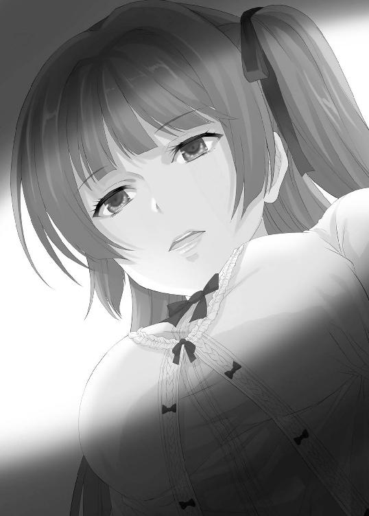
暗転。
To be continued...
あとがき
とある場所で、男性が言いました。
「昨日、冷蔵庫にあった卵で卵かけご飯を作ったんだ。それで、賞味期限が過ぎていることに今朝気づいたんだけどさ、昨日食べても体調に問題はなかったから、今日も多分大丈夫だろうと思って今朝も卵かけご飯を食べてきたんだ。でも『昨日大丈夫だったから今日も大丈夫』っていう理屈が大丈夫なら、毎日同じことをいえると思うんだよ。明日から見て昨日である今日大丈夫だったから明日も大丈夫。明後日から見て昨日である明日も大丈夫だったから明後日も大丈夫。つまり、賞味期限の過ぎた生卵はいつまでも食べられる状態にあるということになるんじゃないかな？」
女性は胡散臭いものを見るかのような冷たい目を男性に向けました。
でも、男性はそんな視線をちっとも気にしません。
「俺が何を言いたいのか分かる？」
女性は苦々しい顔をしながら、嫌そうに頷きました。
「そう、これが本当の『きのう法』――なんてな」
ここまでの小話に特に意味はありません。作中に数学ネタも入っていますが、特に関係はありません。ふと思いついたので書いてしまいました。特に反省はしていません。
さて、まさかの第二巻。中田かなたです。
今回は、有名人による孤島でのゲーム大会に新井和馬という異物をつっこむという内容となっております。私の偏見を基にした登場人物たちに対して、和馬というクズ人間が立ち向かう様を楽しんでいただければと思います。今回登場した『彼』については、ライトノベルに登場させるのは難しいのではないか、編集の方からストップがかかるのではないか、そんなことを考えながら反応を楽しみにしていました。しかし、ある日送られてきたメールに添付されていたともぞ様のイラストを見た時には、こちらがノックダウンされてしまいました。「この程度の悪戯心など痛くも痒くもない」という編集様からの強いメッセージを勝手に感じています。デッドボールを狙って投げたらピッチャー返しを打たれた気分です。これを口実に、今後は更なる無茶無謀を模索していく所存です。
謝辞。読者の皆様のおかげで、第二巻を無事に出版することができました。厚く御礼申し上げます。また、無茶とも思われた提案を正面から受け止めていただき、こちらの想像以上のブツを用意してくださった編集者様・ともぞ様には、より一層の感謝をしております。
それでは、また続巻にてお会いできればと思います。
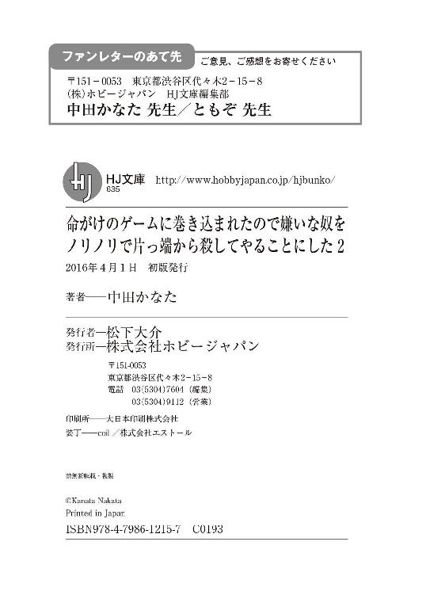